Hold the description and the dog's choices still. Let each swarm build everything else from the bottom up. Do the choices survive, and is each world its own?
PAE-01 showed every SCION swarm as a lens on one paper dog: a style laid over a drawing it did not make. That shows what each swarm would look at, not what it would make. In PAE-02 each swarm builds the same scene itself: what the dog is made of, how it moves, what the place is and what it sounds like. Only two things are shared: the description and the score of the dog's six choices from the PAELEO machine.
If description is operative, the choices survive every operation, and that can be measured. Whether they read as choices is for a critic to say.
54 of the 54, in cohorts chosen to be as far apart as possible in what they build with. Each later cohort reads what the earlier ones failed at, never their films or code.
| Swarm | The dog is | Invariants | Critic |
|---|---|---|---|
| 01 Terry Gilliam | the real archive dog, cut out and engraved, on card pivots | all four hold | PASS (round 2) |
| 02 Lotte Reiniger | a hand-cut silhouette of 23 pieces on a lit paper screen | all four hold | PASS (round 2) |
| 03 Max Ernst | an engraved maquette that wears, then absorbs, a found lion's mane | all four hold | PASS (round 2) |
| 04 Frank Mouris | a torrent of tiles cut from 55 archive shots | all four hold | PASS (narrow) (round 2) |
| 05 Yuri Norstein | hand-cut replacement pieces on its own glass plane, in fog | all four hold | PASS (round 3) |
| 06 John Whitney | dot-lines of light on a skeleton, locking 3:2 with the house | all four hold | PASS (round 2) |
| 07 Peter Foldès | drawn contour keys whose points correspond, blended pose to pose | all four hold | PASS (round 2) |
| 08 Ivan Sutherland | a 24-point graph under 77 constraints, solved every frame | all four hold | PASS (narrow) (round 2) |
| 09 Takeo Igarashi | six drawn sheets bent by an ARAP solver, features held rigid | all four hold | PASS (narrow) (round 2) |
| 10 MLS deformation | one painted pelt, folded into a body by moving least squares | all four hold | PASS (round 1) |
| 11 Video puppetry | the archive dog's own pixels, cut into pieces and moved as a puppet | all four hold | PASS (narrow) (round 5) |
| 12 Localized weights | a red cut-paper lace dog, pierced with holes, bent by bounded weights | all four hold | PASS (narrow) (round 3) |
| 13 Secondary motion | a long-coated dog of torn crepe and tissue strips whose coat is its body | all four hold | PASS (round 2) |
| 14 Pose2Pose casting | a bank of 41 whole ink-and-wash drawings, cast to the score by a Viterbi path | all four hold | PASS (round 1) |
| 15 Learned layered puppet | an 11-layer puppet fitted to the archive dog, generating poses it never showed | all four hold | DOES NOT PASS (round 5) |
| 16 JibJab | a real archive body wearing a swappable cast head | all four hold | PASS (round 2) |
| 17 South Park lineage | flat construction-paper pieces, a whole drawing per view and posture | all four hold | PASS (round 1) |
| 18 Cartoon Saloon lineage | a painted turnaround sheet, swapped by substitution, rigged only in the legs, tail and neck | all four hold | PASS (round 2) |
| 19 Moho Smart Bones | an ochre dog in a variable-width ink line, rigged with bones whose angles re-draw it | all four hold | PASS (round 1) |
| 20 Toon Boom Harmony | a tan cel mutt swapped whole drawing to drawing from a turnaround library | all four hold | PASS (round 1) |
| 21 Photo-to-Actor | a public-domain home-movie dog turned into a rigged photographic actor | all four hold | PASS (narrow) (round 5) |
| 22 Character Animator | a layered felt puppet whose behaviours do the acting | all four hold | PASS (round 1) |
| 23 Spine runtime | a painted game-art dog played by its own skeletal runtime | all four hold | PASS (narrow) (round 2) |
| 24 Live2D lineage | a parametric 2D rig: head keyforms, art meshes on deformers, pendulum physics | all four hold | PASS (round 1) |
| 25 Rive | a boned vector puppet driven by a three-layer state machine | all four hold | PASS (round 1) |
| 26 PixiJS archive stage | a dog of 652 public-domain archive fragments on a 3D skeleton | all four hold | PASS (round 2) |
| 27 Remotion | typed capsule components compiled from the score, frame by frame | all four hold | PASS (round 1) |
| 28 Mask and plate foundry | a dog composited from public-domain home-movie plates cut by animated masks | all four hold | PASS (narrow) (round 3) |
| 29 GrabCut | the archive dog cut by its own graph cut, then re-performed | all four hold | PASS (narrow) (round 3) |
| 30 SAM 2 proposals | the real archive dog assembled only from accepted mask proposals, with nothing invented | all four hold | PASS (narrow) (round 3) |
| 31 Alpha Matting | the archive dog itself, lifted out of its frames with soft fur edges | all four hold | DOES NOT PASS (narrowly) (round 4) |
| 32 Forward kinematics | a carved and painted wooden toy dog on visible brass pins | all four hold | PASS (round 2) |
| 33 Inverse kinematics | the rig itself: tapered capsules on drawn joints, every leg solved every frame | all four hold | PASS (round 1) |
| 34 As-rigid-as-possible | an engraving on a triangle mesh, bent by an as-rigid-as-possible solve | all four hold | PASS (round 4) |
| 35 MLS gesture warp | a two-colour risograph dog whose dot screen stretches where it bends | all four hold | PASS (round 2) |
| 36 BBW auto-rig | whole frames of the real archive dog, each auto-rigged and bent as one mesh | all four hold | PASS (round 4) |
| 37 Weighted skinning | one closed skinned mesh over 27 bones, coated in the archive dog's own film grain | all four hold | PASS (round 3) |
| 38 Dynamic pose selection | whole Quick, Draw! doodles by real people, chosen, never bent | all four hold | PASS (narrow) (round 3) |
| 39 Multiview substitution | a separate drawing for each view, swapped at its own pivots | all four hold | PASS (round 2) |
| 40 Tabletop capture | a paper card dog moved by archive hands on a table, tracked from the pixels and replayed | all four hold | PASS (round 1) |
| 41 Secondary dynamics | spheres and capsules, with ears, tail, coat and tag on solved springs | all four hold | PASS (round 3) |
| 42 Neural layered puppet | the archive dog's pixels in eight layers discovered by fitting, with seams and pins left visible | all four hold | DOES NOT PASS (round 5) |
| 43 Collage Graph Rewriting | a graph of typed fragments of one archive dog, rewritten by rule | all four hold | DOES NOT PASS (round 3) |
| 44 Multiplane parallax | thirty cut pieces of the archive dog, each at its own depth | all four hold | PASS (round 2) |
| 45 Occlusion compositing | archive cels split by depth, so the door frame decides what is inside | all four hold | PASS (narrow) (round 3) |
| 46 Face Landmark Registration | a drawn dog built from view plates, each carrying its own landmark points | all four hold | DOES NOT PASS (narrowly) (round 3) |
| 47 Sound-to-action | 172 inked drawings, each answer cued by a vowel in the voice | all four hold | PASS (round 1) |
| 48 State machines | a segmented body posed by its own decision machine, cast into flip-discs | all four hold | PASS (round 2) |
| 49 Open-content atelier | one pointer cut from a Currier & Ives print, hinged into every pose | all four hold | PASS (round 4) |
| 50 Historical print stage | engraved after the archive dog's own frames, documented and invented kept apart | all four hold | PASS (round 3) |
| 51 Mouris montage research | one steady dog whose coat, eyes and paws are substituted image by image on a cutting rhythm | all four hold | PASS (round 3) |
| 52 Gilliam Ephemera | one public-domain home-movie dog, cut into seven pinned pieces | all four hold | DOES NOT PASS (round 3) |
| 53 Atlanta Moving Image | the archive dog's own footage, re-timed and re-ordered | all four hold | PASS (round 2) |
| 54 Provenance graph | cuts from one archive frame and its own turning frames, every layer hashed | all four hold | PASS (round 2) |
The invariants are the description (the six choices within ¼ s, never inside the house and ending on the sill, moving with the score, the back shown in the refusal). Everything that differs between the films is the operation.
Each choice is a substitution, so the dog's decision is also the film's cut.
The real archive dog from a 1930s home movie, cut out by its mask and engraved by hatching its own light; card parts on pins, a tail cut from its own back fur. Every other figure is a found public-domain cut-out, engraved the same way.
Moved byCard pivots, held frames and hard substitution. The call turns the woman's head into a hinged shouting mouth and the dog's head into a door; the refusal is the card turned over to its blank back, stamped NO; the approach is earned by the door swapped for a lit slab; the lying is a lying card.


Measured from this swarm's own render (its trace) by check_handmade.py. The score's time, then the time the choice appears.
Each round is a fresh agent that sees the film, the brief and this swarm's SCION prompt, never the builder's notes, and returns a verdict and falsifiable repairs. Stopped at an independent pass.
# SCION 01 · critic round 1 · PASS (narrow) Independent critic (fresh agent; 129 scene frames plus full-resolution stills; verdict from the picture before any builder notes). Per choice: backing away weak (the door-head gag hides the crouch and lowered head); watch reads (2.3); turned back reads (the card's blank back faces away, 3.6; lies with back turned 4.6–7.5); turning to look reads (7.6–8.0, facing the open door); coming head low reads (14.6–23.5); lying across the sill reads (front half inside the frame, rear and tail out); looking in weak (head lifts at 26.7 but points at the jamb, not into the light), staying reads. Bottom-up: yes. Every part cut from found footage and engraved by luminance hatching; visible card pivots; state changes as hard substitutions (door-head, card verso, lying card); commands as Gilliam gags (hinged mouth, telescoping arm). Fundamentally not the PAE-00 cut-out. Craft: the person faces away throughout; edge-on flip frames read as a stick creature; the neck card is an obvious rectangle in the close shot; the butterfly causes nothing (visual noise); the NO stamp is a caption; the cut-in at 25.4 is unmotivated. Rights: all 7 found sources public domain, each matching found-frames.json; sound synthesized; end card credits every source. Invariants hold on screen. Repair conditions (ranked): 1. t=26.6–27.6: head points up and into the lit door opening. 2. t=1.0–2.3: lowered head and crouch visible ≥0.5 s while backing, or the door-head sits visibly low. 3. t=3.5 and 7.6: the edge-on card reads as a card (thin edge, held frame). 4. t=0–4.6: the person or the mouth card faces the dog when calling. 5. t=7.8–10.5: the butterfly causes a visible reaction, or is cut. Keep: the card verso as the turned back, the telescoping arm, the lit-door substitution, the lying card across the sill.
# SCION 01 · critic round 2 · PASS Fresh independent critic (135 scene frames plus frame-level views of both flips; judged the picture before reading round 1). All six choices read at their times: backing away (just: the door-head sits low, legs bent), turned back (edge held 2 frames, blank back stamped NO, lies with back turned to 7.4), turning to look (7.625, facing the lit door), coming head low (14.7–23.6), lying across the sill (front half in the light, rear and tail out), looking in and staying (head rises into the opening 26.7–28.0, clearest 27.2; competes with the moth). Bottom-up: engraved luminance-hatched cut-outs with visible paper edges; every state change a hard substitution (door-head, card back, lying card, lit-door slab, hinged mouth card, telescoping arm). Round-1 conditions: all five met (2 marginally; 3 with one messy frame at 7.583). Remaining defects (optional polish): moth above the head during the look-in; no sound on the approach start and the lie-down sound ~0.3 s late; crumpled frame at 7.583; the low hand reads as a dropped glove; the person's body faces away; the cut-in at 25.4 unmotivated. Verdict: PASS against the brief and the SCION bar. Stopped here per the SCION doctrine (stop at an independent pass); the polish list is kept for a later round.
method · every asset and its rights · ledger of attempts · build · the prompt
No colour on any figure: the whole relationship has to read by outline and the gap between shapes.
A hand-cut shepherd silhouette of 23 pieces on 22 pins, its proportions measured from the archive dog's pose keys (not traced). Tissue hills, a card house front, black card with holes the lamp shines through, lace-cut ornament.
Moved byArticulated joints on a lit screen, paws planted by a contact solver; turns are made by swapping in cut end-on pieces (a rear view, a front view) and four interchangeable heads, and the head always leads the body.


Measured from this swarm's own render (its trace) by check_handmade.py. The score's time, then the time the choice appears.
Each round is a fresh agent that sees the film, the brief and this swarm's SCION prompt, never the builder's notes, and returns a verdict and falsifiable repairs. Stopped at an independent pass.
# SCION 02 · critic round 1 · PASS Independent critic (fresh agent; frames every 0.5 s plus dense windows; verdict from the picture before any builder notes). Per choice: backing away reads (crouch, head low, moves away facing the door); turned back reads, the turn rough (front-on piece 4.08–4.19, faces away ~4.3, lies back to the house 4.5–7.3); turning to look reads (7.57 over the shoulder, faces the door by 8.3); coming head low reads; lying across the sill reads (forequarters inside the lit arch, hindquarters and tail out); looking in weak (head turns, unclear whether into the door or at the person). Reads as a dog in every profile; fails for 1–3 frames in each big turn (3.97, 7.63: the flat puppet squashed sideways into an arched shape). Bottom-up: pure black silhouettes on a lamp-lit screen, translucent planes behind, hinged pieces with round lap joints, solved legs with planted paws, end-on replacement pieces, lace-cut ornament. Fundamentally different from PAE-00 (no colour on the figures; outline and gaps only; light from behind; different animal and place). Not a restyle. Craft: squashed in-betweens at 3.97 and 7.63 (joint limits logged, not enforced); door already ajar and lit at 0 s; sill not a separate surface; ambiguous look-in; "Come in." half hidden in the plaque 26–28. Sound follows events; commands loudest, soft words quieter. Rights: clean (original, public domain, synthesized). Verdict: PASS. Repair conditions (ranked): 1. No folded or arched body in 3.85–4.35 or 7.5–8.35: profile → cut end-on piece (rear view for the turn away) → profile. 2. Door leaf visibly closed before 6.2 s, swinging open 6.2–7.0, light floods only then. 3. Look-in at 26.4: snout into the doorway's light, nose overlapping the arch, eye hole hidden. 4. A raised sill piece separate from the porch floor, the dog's chest on it from 24.4. 5. "Come in." fully inside the plaque on every frame.
# SCION 02 · critic round 2 · PASS Fresh independent critic (frames every 0.5 s, every frame in the dense windows, enlarged crops; judged before reading round 1). All six choices read, each within ~0.15 s of the score: backing away (crouch, head low, steps back facing the door); turned back (profile, then a cut rear-view piece 4.01–4.30, lies facing away 4.34–7.4); turning to look (lifts the head 7.57, over the shoulder, a face-on piece 8.03–8.32, profile to the door from 8.36: "good substitution acting"); coming head low (even pace from 14.77); lying across the sill (forequarters on the raised sill inside the lit arch, haunches and tail out); looking in and staying (muzzle into the light, eye hidden, 27.0–27.7; chin back on paws by 28.3). Reads as a dog in every frame checked, both turns included; no folded in-betweens. Bottom-up: pure black hinged silhouettes on a lamp-lit screen, lace cut-outs, end-on replacement pieces, planted paws, tissue layers; relationships read without colour. Not a restyle of PAE-00. Rights clean. Round-1 conditions: all five met. Remaining polish (not pursued): the rear-view piece lacks a leg gap and hock (could read as a post); one frame at 7.57 joins a face-on head to a lying body; the door light turns the whole sky gold instead of spilling onto the porch; the 7.4 window is loud under the soft voice. Verdict: PASS. Stopped here per the SCION doctrine (stop at an independent pass).
method · every asset and its rights · ledger of attempts · build · the prompt
Authority becomes architecture, then the dog's own fur.
One plate of a collage-novel: a porch at dusk cut in wood-engraving line by one burin, so the seams hide. The person's commanding head is a lion cut from Andy's Animal Alphabet; the hand from The Door to Heaven; a miner's lamp from Anthracite. The dog is a solid maquette of 27 cones and ellipsoids, engraved along its form; no picture of a dog is used.
Moved byThe dog turns as a solid in the plate's camera and walks on a step solver. The collage moves by changing job: the lion's head leaves the person and becomes the keystone, whose knock opens the door; the same lion's mane is pasted on the dog with its white cut edge at the first call, and sinks into its coat, edge lost, as it lies across the sill. The grabbing hand returns small and low.


Measured from this swarm's own render (its trace) by check_handmade.py. The score's time, then the time the choice appears.
Each round is a fresh agent that sees the film, the brief and this swarm's SCION prompt, never the builder's notes, and returns a verdict and falsifiable repairs. Stopped at an independent pass.
# SCION 03 · critic round 1 · PASS (narrow) Independent critic (fresh agent; frames every 0.5 s plus dense windows, full resolution; verdict from the picture and sound before any builder notes). Per choice: backing away reads (crouch, tail tucked, backs away facing the door); turned back reads (true 3D rotation through a frontal view that still reads as a dog, away by 3.79, lies turned away 4.4–7.45; at small scale a striped lump); turning to look reads (the head comes round to the door by 7.58–7.71, before the body); coming head low weak (the muzzle below the back, the top of the skull about level with it); lying across the sill reads (flat by 24.4, front half inside the door opening, tail out; a 2D overlap more than a crossing); looking in and staying reads (head into depth toward the lit hall by 26.63; settles and stays). A dog-like quadruped throughout, but the head is rodent-like crouching and pig- or otter-like lying. Language: the lion-headed magistrate is a hybrid noun cut from a found engraving source, its white margin shown while it commands; at 5.5–6.0 the head leaves the man and becomes the keystone over the door, which then opens under it: one image causing the next, authority becoming architecture. The pasted hand changes job from grabbing to offered low. The lion serves the scene. But the dog, the person and the set are self-built 3D models with a hatching shader: a style over the swarm's own rig, not collage. The collage grammar stops at the dog. Fundamentally different from PAE-00. Defects: the "it's all right" caption stays on screen 7.0–25.8, long after the voice; the person lurches to the chair; the door swings with no agent; feet slightly above the shadow at 3.67. Sound follows events; soft voice ≥12 dB under the calls. Rights clean (lion, hand and lantern match found-frames.json). Repair conditions (ranked): 1. At 16, 19 and 22 s the top of the skull sits visibly below the back line. 2. The head reads as canine (longer muzzle, larger defined ears) at 1.9, 6.0 and 29.5 s. 3. At least one dog part carries the swarm's grammar: a found engraved fragment with a visible or concealed seam that changes job across the scene. 4. No caption on screen while no voice sounds (11.6–25.8). 5. The door's opening at 6.2–6.5 is visibly caused by something in the image.
# SCION 03 · critic round 2 · PASS Fresh independent critic (all 768 scene frames, contact and crop sheets; judged the picture and sound before reading round 1). All six choices read: backing away (crouches facing the door, moves away; the mane flares at 1.04); turned back (a real turn through a frontal view, every frame a dog; lies curled away 4.5–7.45); turning to look (head round to the door by 7.71; a brief tangle at 7.62–7.67); coming head low (the skull top below the back at 16, 19 and 22; feet plant and step); lying across the sill (flat by 24.3, head and chest inside the jambs, haunch and tail out; a side-on overlap); looking in and staying (the head turns away into the lit hall 26.6–27.9, settles, stays). The head mostly a dog's. Collage grammar now reaches the dog. The lion from Andy's Animal Alphabet recurs in four changed jobs: the magistrate's head; the keystone over the door, whose knock sets the door swinging; the dog's raised hackles from the first call, white cut edge shown; the same mane shrunk, its edge hidden, as the dog lies down. One image causes the next, and authority ends up as the dog's own fur. The change reads at the lie-down, weakly during the approach. The dog's body is still the swarm's own model with engraved shading: a limit, no longer disqualifying. Round-1 conditions: 1 and 3 met; 2 mostly met; 4 nearly met (the caption lingers to 12.29); 5 weakly met (small impact marks at the keystone). Remaining (optional, not pursued: stopped at an independent pass per the SCION doctrine): the mane should visibly lie down or lose its edge during the approach, so trust shows before the sill; a stray hatching band in the light patch 24–31; the caption gone by 11.2; a readable silhouette 7.60–7.70. Soft voice ~10 dB under the calls, above room tone. Rights clean; end card true.
method · every asset and its rights · ledger of attempts · build · the prompt
The voice is made of pictures too, and it hits the dog as a ring of alarm clocks.
Thousands of tiles cut from 55 public-domain archive shots (2,238 frames), each figure a computed shape whose edge is the tiles themselves, down to 4×3 pixels, with no line drawn; the tiles' subjects mean something: the dog is animals and the archive dog, the person faces and hats, the door doors and ladders, the light lanterns and bulbs, the words alarm clocks and trumpets for COME HERE, flowers and swans for it's all right.
Moved byThe torrent's speed is the dog's state: frantic under the calls, every tile of the dog replaced at each choice, settling as it lies down, and still holds where each tile only plays its own shot forward.


Measured from this swarm's own render (its trace) by check_handmade.py. The score's time, then the time the choice appears.
Each round is a fresh agent that sees the film, the brief and this swarm's SCION prompt, never the builder's notes, and returns a verdict and falsifiable repairs. Stopped at an independent pass.
# SCION 04 · critic round 1 · PASS (narrow) Independent critic (fresh agent; frames every 0.5 s plus dense windows, full resolution, frame-to-frame difference in a dog crop; verdict from the picture before any builder notes). Per choice: backing away reads (crouch, head low, moves away; the wall tiles turn to trumpeters and alarms under the call); turned back reads (end-on box at 3.6–4.2, lies facing away); turning to look reads (rises ~7.5, facing flips 8.25–8.5 with the score's turn; end-on frame like a giraffe); coming head low weak (head near level; an unmotivated change from brown to bright orange cartoon fill at ~17–20); lying across the sill reads; looking in weak (reads as "looks up", not into the door). Reads as a dog throughout. Boil: mild (mean frame difference 6–7/255 in a dog crop). Legible, not noise; too calm for Mouris. Bottom-up: partly. Every surface is a quadtree of real archive tiles with meaningful subjects (animals for the dog, bulbs for the door, household objects for the wall, which switch with the words). But the dog's shape is a parametric silhouette with a drawn outline and eye; the tiles are a fill tinted until the images mostly disappear; the end card's "no figure is drawn" is not quite true; few rhythmic slots, holds or changes of cut speed. Different from PAE-00 in material, not in staging. Craft: end-on views read as a table or a giraffe; unmotivated colour change; flat pink hand; dog tiles unreadable at playback size; tiny title line. Sound follows events. Rights: 55 public domain, self-made, OFL fonts, one CC BY 4.0 entry; all clip_ids in found-frames.json. Repair conditions (ranked): 1. 14.7–23.8: head clearly below the shoulder line (frames every 1 s). 2. 26.6–27.5: the head turns toward or into the lit doorway, not only upward. 3. At least two of the dog's tiles recognisable as archive images at any moment (larger flank tiles, less colour shift); three full-res frames as proof. 4. Remove the drawn outline and eye and let tile edges carry the silhouette, or correct the "no figure is drawn" claim. 5. Two deliberate holds and one burst of fast cuts timed to the choices (e.g. 3.42, 23.79), visible in a frame-difference plot; the colour change follows the score's trust.
# SCION 04 · critic round 2 · PASS (narrow) Fresh independent critic (all 768 scene frames at full resolution and zoomed into the dog, frame-to-frame difference measured, sound per window; judged before reading round 1). Per choice: backing away reads (head low, slides away, a burst of change over the span); turned back reads, slightly weak (flips at 3.42–3.50 with a burst exactly at the choice; head hard to make out in the crouch); turning to look reads (rises 7.50, facing flips 8.17 with the score's turn; no cut accent at 7.46); coming head low weak (head only slightly below the back until ~22 s); lying across the sill reads (drops at 23.79 with a burst; the jamb splits the body, front in the light); looking in and staying reads (head turns end-on into the lit doorway, ears from behind, 26.5–28.2; settles and holds). Bottom-up: mostly yes. No line is drawn; the dog's edge is tiny archive tiles; recognisable pictures on the flank (cats, lion, giraffe, the real dog); the words typeset in tiles; cut rhythm follows the choices (bursts at 1.0, 3.42, 23.79; holds at 9–14 and 29–32 s; boil on twos). Remaining gap: the shape is a computed mould the torrent fills, and the flank pictures sit in a rectangular strip. Made of the torrent in material and rhythm, not yet in form. Round-1 conditions: 1 partly met (head low only from ~22 s); 2, 3, 4, 5 met. Remaining (recorded, not pursued: stopped at an independent pass per the SCION doctrine): head below the withers from 14.7; a cut accent at 7.46; break the rectangular flank strip so pictures of mixed sizes run into the legs, head and edge; the jamb breaks the outline at 22–24 s; the person's face is a featureless disc.
method · every asset and its rights · ledger of attempts · build · the prompt
Depth, fog and focus decide what the dog can see, and what we can.
About twenty glass planes at measured depths: sky, trees, the room, the door, the house front, floors, posts and weeds; six fog layers keyed from public-domain time-lapse cloud footage; a bowl inside the room cut from the home movie. The dog is a library of hand-cut replacement pieces (five body views, crouch and lying stages, heads per view and ear state, leg segments, paws, tail), each traced once from a maquette, given a scissor edge and painted with the archive dog's coat grain.
Moved byA camera that pans, drops and moves in, so parallax comes from real depth. The fog acts in four states: it thickens between door and dog, is drawn toward the door light, parts along the dog's path and hangs still. Focus is an event: it pulls into the room when the door opens and when the dog is told come in. The dog's pieces are chosen and hinged each frame and laid far to near on its own plane.


Measured from this swarm's own render (its trace) by check_handmade.py. The score's time, then the time the choice appears.
Each round is a fresh agent that sees the film, the brief and this swarm's SCION prompt, never the builder's notes, and returns a verdict and falsifiable repairs. Stopped at an independent pass.
# SCION 05 · critic round 1 · DOES NOT PASS (close) Independent critic (fresh agent; frames every 0.5 s plus dense windows, full resolution; verdict from the picture and sound before any builder notes). Per choice: backing away reads (crouches facing the door, drifts away; hindquarters smear to a lump 1.6–2.3); turned back reads (front-on 3.62–3.70, clearly a dog; away by 3.79; lies facing away from 4.5, the fog thinning it to a faint lump at 7.0–7.3); turning to look weak, late (rises at 7.54 as a headless lump, muzzle up and away 7.9–8.2, head to the door only ~8.5: the "rise that still faces away"); coming head low reads; lying across the sill reads, modestly (sphinx-low by 24.0, head and forepaws in the door light, rear and tail out; part-in by overlap); looking in weak (the head turns to face the camera, a cat-like mask; the focus pull from the dog to the bowl inside carries the "looking in"); staying reads. The fog mostly dramatizes the choices (it thins as the dog commits from 15 s; the focus pull at 27 is a real event) but hides the turn at 7.0–7.6 exactly when it has to read. Language: genuinely layered: painted planes at depths, parallax on the posts and doorway, drifting ground fog keyed from archive cloud footage, door light through the fog, focus as an event. Fundamentally different from PAE-00. The weak point is the dog: a procedural 3D maquette flattened to a silhouette each frame, moving like a rig rather than like Norstein's hand-made replacement pieces. Defects: the pan pushes the person sitting (5.4) and the door opening (6.2) to the frame edge; the cat-like front-on head; lumpy hindquarters. Sound follows events; soft voice 9–11 dB under the calls, ~9 dB above room tone. Rights clean. Repair conditions (ranked): 1. 7.46–7.71 the head comes round to face the door and keeps facing it through 8.5; no headless lump 7.46–7.8; the fog thins at the dog by 7.4. 2. 26.4–26.9 the head turns into the lit doorway (away from the camera), with the focus pull following the turn. 3. During the refusal the dog stands or sits rather than lies. (Coordinator's note: not passed on; the score's own acting has lie = 1 from ~6 s in the refusal, so lying there follows the score.) 4. The person sitting (5.4) and the door opening (6.2) fully on screen. 5. The hindquarters keep their leg shapes through 1.4–2.3 and 7.5–7.7.
# SCION 05 · critic round 2 · DOES NOT PASS (narrowly) Fresh independent critic (all 768 scene frames; full-resolution zooms on both turns and the look-in; judged before reading round 1). Per choice: backing away reads (crouches facing the door, drifts away; the hindquarters collapse into a dark lump 1.25–2.42); turned back reads (back view 3.58, three-quarter 3.67, away by 3.75 with a ghost of the tail; lies facing away ~4.7–7.46, as the score asks); turning to look reads (rises 7.54, the muzzle round to the door by 7.67, held through 8.79; the body turn holds as a three-quarter dog); coming head low reads; lying across the sill reads (sphinx-low by 24.2, head and forepaws inside the jambs in the door light, rump and tail out); looking in weak (at 26.46 the head swaps to a two-eared chin-up head pointing up-left at the top of the door and the light, not away into the house; the focus pull to the bowl carries "looking in"); staying reads. A dog in every frame, deliberately fogged or out of focus at times. Language: the world is (painted planes at depth, parallax, archive-keyed fog, focus as an event). The dog is half there: in the close shots (23–32) it shows hard cut edges and seams and reads as articulated cut-outs; in the walk (15–23) it moves smoothly frame by frame, like a rig. assets.json still describes re-projection from an ellipsoid maquette every frame. Defects: the hindquarter lump 1.25–2.42; a hind-leg tangle 7.54–7.63; a two-silhouette ghost at 3.75; the person sits in mid-air 5.8–6.1; audio peaks at −0.8 dBFS on the second call. Soft voice ≥8 dB under the calls, ~8 dB above room tone. Round-1 conditions: 1 met; 2 not met; 4 met; 5 partly met. Repair conditions (ranked): 1. 26.4–26.9: the head turns into the doorway away from the camera, back of the head and ears to the viewer, no face to the camera, held until the focus pull at 27.0. 2. 1.25–2.42: both hind legs legible as separate legs, no lump at the rump. 3. 15–23: the walk moves like replacement pieces, not a rig (e.g. drawings held on twos with visible piece seams, as in the close shots).
# SCION 05 · critic round 3 · PASS Fresh independent critic (all 768 scene frames, contact sheets every 0.5 s, full-resolution crops of every window; judged before reading rounds 1 and 2). All six choices read: backing away (ears flat, crouch at 1.04, drifts away facing the door); turned back (front view 3.67–3.71, away by 3.79, lies facing away ~4.75–7.46 as the score asks; every turn frame a dog); turning to look (ears up 7.54, head over the shoulder to the door by 7.71–7.75 and held; body turns 8.46–8.62); coming head low (below the back 14.75–23.5); lying across the sill (sphinx-low by 24.5, head and forepaws in the door light inside the jambs, rump and tail out); looking in and staying (the back of the head and both ears into the house 26.67–26.92, no face to the camera; the focus pull to the bowl follows; settles and stays). A dog in every frame. Bottom-up: painted planes at depth with parallax; layered uneven fog with the door light through it; focus changes as events; the dog now hand-cut replacement pieces through the walk, each drawing held on twos with visible seams and edge highlights; the calls panned toward the person. Round-2 conditions: 1 met; 2 mostly met (a soft dark patch where belly meets rump); 3 met. Remaining (optional, not pursued: stopped at an independent pass per the SCION doctrine): the back-of-head piece a little cat-like; the dark belly patch at 1.5–1.9; hard black crescents under the fog at 0–6 s; the defocus at 6.4–7.0 blurs the whole frame evenly. Soft voice ~10 dB under the calls, ~6 dB above room tone; peak −2.3 dBFS.
method · every asset and its rights · ledger of attempts · build · the prompt
Trust is a fifth: the dog comes when its breath locks to the house.
Only computed points of light. A 3D skeleton whose proportions are the archive dog's measured rig keys; every part a tube of meridian dot-lines with its own harmonic number, winding into helices and unwinding into straight engraved lines every 8 s. The house, the room, the hearth and the person are point-lines too; the moon is a Lissajous trail of the two oscillators.
Moved byThe house pulses at 0.40 Hz and the dog breathes near 0.6 Hz. The calls detune the dog, so its lines go ragged and the moon smears; once the circumstances change the two oscillators couple and lock in a 3:2, and the dog's lines stand straight. The gait is a phase relation driven by distance travelled; the turns are true rotations; the sound is the same oscillator bank, a pure fifth when locked.


Measured from this swarm's own render (its trace) by check_handmade.py. The score's time, then the time the choice appears.
Each round is a fresh agent that sees the film, the brief and this swarm's SCION prompt, never the builder's notes, and returns a verdict and falsifiable repairs. Stopped at an independent pass.
# SCION 06 · critic round 1 · DOES NOT PASS (close) Independent critic (fresh agent; every frame extracted, contact sheets and crops, spectrogram; verdict from the picture and sound before any builder notes). Per choice: backing away reads (crouch, drifts away facing the door, head low; voice rings push from the person); turned back reads (a real 3D yaw 3.46–3.80, three-quarter mid-turn not a tangle, lies facing away 4.6–7.4, faint at the dim right edge); turning to look reads with weak frames (head comes round 7.55–7.88 on time; 8.05–8.26 the torso goes upright and a hind leg flings out, kangaroo-like); coming head low reads; lying across the sill weak (a real lie, but the doorway is a light slab seen almost edge-on, so inside and outside are not legible); looking in weak (the head rises into the light column pointing up-left: "looks up into the light"). A dog in every frame except 8.05–8.26. Language: bottom-up, unlike PAE-00: every figure is points on parametric helical meridians over a skeleton. The structure is heard clearly (detuned glides under the calls, a locked pulse train from ~7, a sparse-dense-release arc). In the picture it barely shows: the development lives in a ~100 px Lissajous moon in the corner; the dog, the porch and the field show no visible phase development, and 9–14 is visually static. The numbers carry the story in the sound and an inset, not yet in the choreography. Defects: the rising twist; ambiguous doorway geometry; long dark low-contrast stretches; the oscillator bed swells as loud as the soft voice between lines (may mask it). Soft voice ~10 dB under the calls. Rights clean. Repair conditions (ranked): 1. 26.6–28.0: the muzzle visibly points into the depth of the lit doorway, not up. 2. 25–31: a distinct interior (lit floor or back plane) behind the door frame; head and forelegs beyond the frame line, hindquarters and tail on the porch. 3. The detune and lock visible in the main field, not only the moon: dog meridians, porch lattice or light pulses drift out of phase during the calls (1–5) and lock visibly after the door opens (7–12). 4. 7.9–8.4: no upright torso or free-flung hind leg. 5. In each soft-voice window the 1–3 kHz band ≥6 dB above the bed in the 0.5 s before (duck the bed). Keep: the 3D turn, the head-low approach, the voice rings, the sound arc, the Lissajous moon as an addition.
# SCION 06 · critic round 2 · PASS Fresh independent critic (all 768 scene frames, contact sheets and full-resolution crops of the turns and the sill, audio per 0.5 s and in the 1–3 kHz voice band; judged before reading round 1). All six choices read: backing away (crouch, head low, drifts away facing the door; voice rings push from the person); turned back (a real 3D turn 3.50–3.80, the back shown by 3.83, lies facing away 4.6–7.5, dim at the edge); turning to look, with weak frames (head round to the door at 7.58–7.62; a limb sticks out in mid-air 7.9–8.2; end-on as an upright column 8.3–8.4, a yaw not a tangle); coming head low (nose below the back from 15.2, legs stepping); lying across the sill, murky (head between the jambs in the light, hindquarters and tail on the porch; not wholly inside; a lit interior floor and lamp behind the frame); looking in and staying (back of the head to the camera, muzzle into the lit doorway 26.75–28.2; settles 28.6). Inside/outside legible, depending on the lit floor plane; busy where the dog's head overlaps the seated person. Language: bottom-up; points on helical dot-lines over a skeleton. The numbers clearly drive the sound (detuned calls, a locked pulse, a sparse-dense-release arc). In the picture the moon shows the phase, and the dog's own dot-lines go ragged under the calls and clean and parallel once locked; the planks and the light carry nothing visible. Perceptible, but subtle. Round-1 conditions: 1, 2, 5 met; 3 met at the minimum (in the dog's lines only); 4 partly met (no kangaroo rise, but a limb in mid-air). Remaining (optional, not pursued: stopped at an independent pass per the SCION doctrine): no limb ending in mid-air 7.9–8.3; the porch lattice or the door light visibly de-phasing and locking; dark caption ghosts in the fades; the end card's fonts line overlaps the Lissajous; the first 7 s long and dark.
method · every asset and its rights · ledger of attempts · build · the prompt
The door's outline is lifted off the door and laid on the porch as the light.
Contour keys drawn as coordinates: 16 body keys and 10 head keys, each stroke with a fixed point count so that point i is the same place on the dog in every key. The archive dog was studied for proportion, not traced; the person, the house, the door and the dusk are drawn the same way.
Moved byIn-betweens are weighted blends of corresponding points, paced to the score; turns pass through drawn rear and front views where a symmetric key swaps its correspondences. Shapes change as consequences: the caller swells and the reaching arm is drawn long; the refusing dog closes into a curl; the door's outline is carried out onto the boards as its light.


Measured from this swarm's own render (its trace) by check_handmade.py. The score's time, then the time the choice appears.
Each round is a fresh agent that sees the film, the brief and this swarm's SCION prompt, never the builder's notes, and returns a verdict and falsifiable repairs. Stopped at an independent pass.
# SCION 07 · critic round 1 · DOES NOT PASS Independent critic (fresh agent; all 768 scene frames; verdict from the picture before any builder notes). Per choice: backing away reads (crouch, ears flat, head low, drifts away facing the person; the crouched body looks rat-like); turned back reads (rear 3/4 3.54 → rear 3.75 → away 4.125, folds down facing away); turning to look does not read on time (rises at 7.46 but the head still points away 7.58–8.25; comes round ~8.33–8.5, ~0.9 s late); coming head low reads (muzzle at or below the back line, plausible planted paws); lying across the sill reads (forelegs out flat, head and forelegs inside the frame, tail outside); looking in weak (reads as "looks up and away"). Not a dog in every frame: at 8.375 the drawing breaks apart (floating head on a stick neck over leg stubs, no body); 8.33 a ball; 3.833 a narrow sliver; the lying shapes read as a rat or guinea pig. Bottom-up: mostly yes. Drawn line work, contours moving point to point between drawn views; the door's outline carried out onto the boards as the light is a real metamorphosis. But the in-betweens do not hold the dog's shape at the front view (8.29–8.42), against the bar's "no unintended topological flips". Fundamentally different from PAE-00. Craft: the collapse at 8.375; rodent-like lying silhouettes; the end card's "kept at their times" untrue for 7.46; a head-shape dissolve at 1.08–1.25. Sound lands on events; soft voice ≥10 dB under the calls, above room tone. Rights clean. Repair conditions (ranked): 1. t=7.46–7.71: the head turns to face the door before or while it rises; not still facing away at 7.75. 2. t=8.25–8.50: every frame shows one closed body outline joined to the head and four legs; redraw the front-view in-between by hand. 3. t=26.4–27.0: the head turns into the lit doorway (muzzle or eye-line inside the frame), not only up. 4. t=4.5–7.4 and 24–31: the lying dog reads as a dog (defined head and muzzle, ears, a dog's tail, a back line, not a dome). 5. t=3.83: the rear view keeps a dog's width (haunches and tail), not a sliver. Keep: the refusal turn, the head-low approach with stepping paws, the lie across the sill, the door outline becoming the light, the sound mix.
# SCION 07 · critic round 2 · PASS Fresh independent critic (all 768 scene frames, contact sheets, every frame in the turn windows, full-resolution zooms; judged before reading round 1). All six choices read: backing away (crouch at 1.04, ears back, drifts away facing the person, feet stepping); turned back (rear 3/4 3.54, full rear view with haunches and tail 3.62–4.0, low and facing away to 7.42); turning to look (the face comes round at 7.50 while still crouched, front view 8.0, faces the door 8.125; the head never points away after 7.5); coming head low (muzzle below the back line from 14.79, paws stepping); lying across the sill (legs fold 23.9–24.2, flat, forelegs out, head and forelegs inside the lit frame, tail out); looking in and staying (back of the head into the lit doorway 26.6–28.2, chin on paws by 28.5). A dog in nearly every frame; every frame of both turns holds. Bottom-up: hand-authored key contours with point correspondences and in-betweens; the archive dog only looked at for proportion; the door's outline growing onto the boards as light is a real metamorphosis. Rights clean. Round-1 conditions: 1, 2, 3, 5 met; 4 met at 24–31, partly at 4.5–7.4. Remaining (optional, not pursued: stopped at an independent pass per the SCION doctrine): the cowering key at 4.3–7.4 and 1.25–2.4 is hump-backed with a pointed snout and a knob of a tail, rat-like when cropped alone; the front view at 8.0 is a stiff box.
method · every asset and its rights · ledger of attempts · build · the prompt
THE DOG IS NOT SELECTABLE: the brief's 'understand it, not control it', said in Sketchpad's own terms.
Points, lines and arcs on a simulated phosphor vector display. The dog is a 24-point graph under 77 hard constraints (bone lengths, joint sides, floor contact, and the threshold itself), its proportions the archive dog's measured bones; nothing else is borrowed.
Moved byA real iterative solver, warm-started every frame, with its residuals on the console. The prompts are light-pen drags: the reach pulls the hand toward the dog until the console says HAND GOAL UNSATISFIABLE. The dog cannot be dragged at all.


Measured from this swarm's own render (its trace) by check_handmade.py. The score's time, then the time the choice appears.
Each round is a fresh agent that sees the film, the brief and this swarm's SCION prompt, never the builder's notes, and returns a verdict and falsifiable repairs. Stopped at an independent pass.
# SCION 08 · critic round 1 · PASS (narrow) Independent critic (fresh agent; frames every 0.5 s plus dense windows and full resolution; verdict from the picture before any builder notes). Per choice: backing away reads (ears flat, crouch, tail tucked by 1.1, moves away facing the door); turned back reads but slow (edge-on tangle 3.8–4.2; back clearly turned ~4.3); turning to look weak (rises on time, head reaches the door ~8.6; heron-like edge-on frames 8.1–8.45); coming head low reads (wary rather than humble); lying across the sill reads (head and forelegs inside the jambs in the light, haunches and tail out); looking in reads quietly (head lifts, ears prick, dotted sight line). Reads as a dog in profile. Bottom-up: yes. Every mark a solved point, line or arc on a simulated phosphor display; the reach is a light-pen drag with an unsatisfiable goal; "THE DOG IS NOT SELECTABLE" puts the brief's "understand, not control" in Sketchpad's terms. Console text helps, does not replace the picture. Weak point: turns are a flat mirror flip, not a constrained rotation. Craft: edge-on collapse in turns; soft voice not quieter than the call (−16.1 vs −14.0 dB); phosphor trails ghost the person at 26–28; dim detail legible at full size; no flicker. Rights: clean (no source pixels; bone ratios measured from PD rig keys). Repair conditions (ranked): 1. t=7.46–7.80: the head swings to face the door before or while it rises. 2. t=3.42–3.90: back fully turned; no frame 3.8–4.2 loses a readable head, spine and tail. 3. t=8.1–8.45: turn frames show a readable foreshortened body, solved as a rotation. 4. t=7.4 and 26.4: soft voice ≥6 dB below the 1.0 s call. 5. t=26.4–27.0: the look-in raises or turns the head distinctly from the resting pose, readable without the sight line.
# SCION 08 · critic round 2 · PASS (narrow) Fresh independent critic (frames every 0.5 s, every frame through both turns, full-resolution crops; judged before reading round 1). All six choices land within ±0.25 s and read at normal speed: backing away (crouched, head low, moving away facing the door); turned back (back clearly turned by 3.96, the reach's dashed "unsatisfiable" line pointing at it); turning to look (weak to reads: head to the door at 7.96, clean profile by 8.04); coming head low (ears back, steady walk); lying across the sill (head and forelegs in the lit opening, haunches and tail outside, a paw-thump at 24.0); looking in and staying (head raised, ears pricked, foreshortened toward the opening 26.75–28.0). Bottom-up: every mark a solved point, line or arc on a phosphor vector display; the console shows the solver at work; the prompts are light-pen drags; "THE DOG IS NOT SELECTABLE" is a strong reading of the bar. Rights clean. Round-1 conditions: 1 partly met (head arrives 7.96, after the rise begins); 2 not met (the knot moved earlier, 3.71–3.88); 3 met for its window (the collapse moved to 7.79–7.92); 4 met (soft voice ~14 dB below the calls); 5 met. Next blocking failure (recorded, not pursued: stopped at an independent pass per the SCION doctrine): about five frames at each turn (3.71–3.88, 7.79–7.92) are a knot of phosphor lines with no readable head, spine and tail. The turns are still a hidden flip, not a solved rotation; the swarm's own bar asks for the rotation. Also: legs held mid-stride when standing still; the soft voice faint against the hum.
method · every asset and its rights · ledger of attempts · build · the prompt
A drawing that bends without ever folding: the dog keeps its shape by solving for it.
Six dog drawings drawn in code: a standing profile, standing and sitting back views, a lying sphinx profile, a profile head with collar and tag, and the back of the head. Each is cut into a triangle mesh, with cuts between the forelegs and at the tail notch, and the eye, nose, tag and buttons weighted forty times stiffer. The moon and trees are Quick, Draw! doodles.
Moved byOnly by an as-rigid-as-possible solver: handles, a best rotation per triangle, one energy minimized per frame; a triangle that flips is stiffened and the frame solved again. Feet come from a stepping simulation, planted or in the air, never slid. Turns swap whole drawings, bent across by the solver, the head leading. Against weighted skinning on the same mesh, the solver folds no triangles where skinning folds dozens.


Measured from this swarm's own render (its trace) by check_handmade.py. The score's time, then the time the choice appears.
Each round is a fresh agent that sees the film, the brief and this swarm's SCION prompt, never the builder's notes, and returns a verdict and falsifiable repairs. Stopped at an independent pass.
# SCION 09 · critic round 1 · PASS (narrow) Independent critic (fresh agent; all 912 frames; audio by astats and volumedetect; verdict from the picture before any builder notes). All six choices read: backing away (the arm beckons at 1.00, crouch with ears back, the spine flexes, moves away); turned back (the head bends away at 3.42, a back-of-head piece on the profile body, a rear-standing view at 3.67, sits facing away 4.75–7.42; faces the yard rather than directly away from the person); turning to look on time (a profile head facing the door on the seated rear body at 7.46); coming head low (the neck bends, the head below the back from ~14.9); lying across the sill, weak in depth (front half overlaps the door frame, tail outside, but lying parallel to the facade in front of the jamb: inside only by 2D overlap); looking in and staying (the back of the head toward the lit hall at 26.50, in depth). A dog in every frame; neither turn collapses edge-on. Bottom-up: each view a continuous drawn sheet that bends (the neck curves, the spine crouches), with eye, nose, tag and buttons kept rigid; turns as whole-drawing swaps, which the prompt allows. Unlike PAE-00's hinged pieces: one sheet curves smoothly with no joint lines. Defects: the calls are heard 0.25–0.3 s after the dog reacts (only the gesture is on time); single-frame swap pops with footprint jumps (3.63, 4.71, 8.21, 24.08 with no folding of the legs); a zigzag foldover seam in the near foreleg at 18.33–18.58 and 19.42, against the bar's "no inverted triangles"; the person's trousers balloon and the figure glides without steps, then pops into sitting; the door leaf jumps. Soft voice ~12 dB under the calls, ~9 dB above room tone. Rights clean. Repair conditions (ranked): 1. The onset of each call's voice at or before the dog's reaction (≤1.00, ≤3.42). 2. No foldover seam or zigzag in a leg (18.3–18.6, 19.4). 3. Each swap bridged by ≥2 bent in-betweens, no single-frame footprint change over 40% (3.63, 4.71, 8.21, 24.08). 4. The person steps aside with planted feet and keeps her silhouette; the door leaf does not jump. 5. Lying, part of the dog visibly behind the jamb line rather than only overlapping it.
# SCION 09 · critic round 2 · PASS (narrow) Fresh independent critic (all 768 scene frames on contact sheets; the required windows frame by frame at full resolution; audio onsets measured; judged before reading round 1). All six choices read on time: backing away (crouches, head low, backs away at 1.04; the call heard from 0.90, before the move); turned back (the head turns away at 3.46, a full rear view by 3.67, sits facing away 4.75–7.42; the second call heard from 3.30; it faces the yard rather than turning from the person); turning to look (a side-view head toward the door on the seated rear body at 7.46); coming head low (below the back 14.75 to the sill, legs stepping); lying across the sill, flat (lies at 24.12, front half over the lit opening, tail outside, but in front of the jamb, not behind it); looking in and staying (the back of the head to the viewer from ~26.5). A dog in every frame; neither turn collapses edge-on. Bottom-up: each view one continuous drawn sheet that bends; eye, collar, tag and nose rigid; whole-drawing swaps at turns; no foldovers. Rights: own work. Round-1 conditions: 1 met (calls heard before the reactions); 2 met (no foldover); 3 partly met (3.63 and 24.08 bridged; 4.71 and ~8.17 still single-frame swaps); 4 met (a real stride, the door closes smoothly and opens at 6.2); 5 not met (nothing of the dog hidden by the jamb). Remaining (not pursued: stopped at an independent pass per the SCION doctrine): bridge the 4.71 and 8.17 swaps; let the jamb hide part of the lying dog so it is inside in depth; begin the lowering within 0.25 s of 23.79. Soft voice ~11 dB under the calls, above room tone.
method · every asset and its rights · ledger of attempts · build · the prompt
There is no skeleton anywhere: the dog bends as one sheet, the way a hide would if handles pulled it.
A single flat image of a dog's coat, painted in code and laid out like a pelt: dark saddle, both flanks, four legs, head and tail. No archive frame, no skeleton, no cut pieces, no frame swaps. The swarm wrote the moving-least-squares solver itself, in its affine, similarity and rigid forms, and the end card shows the hide with its handles and the same pose in all three.
Moved byOnly 48 point handles and 19 line handles move. Affine MLS lifts the flat hide into a body each frame: the flanks fold down like cloth, the legs reach the boards, the head is a rigid cluster of handles so the face does not shear. Paws stay planted until the body moves too far, then step on alternating diagonals.
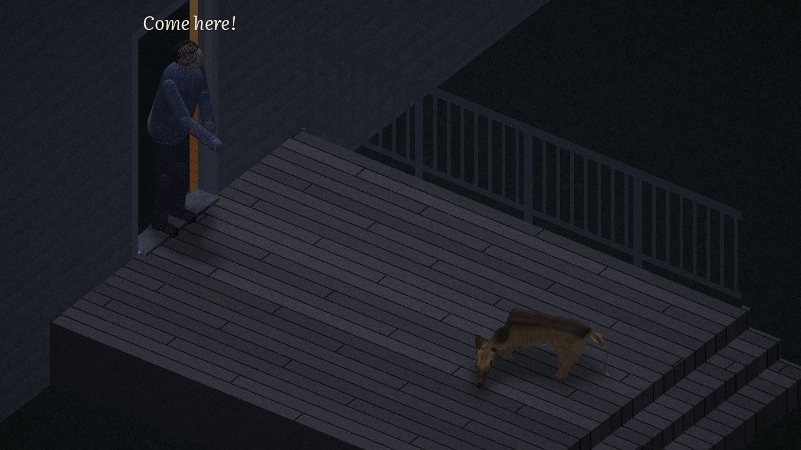
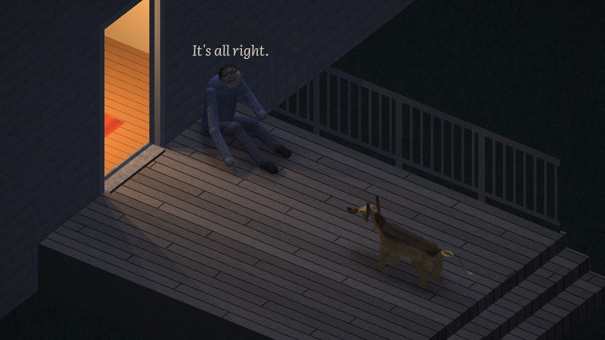
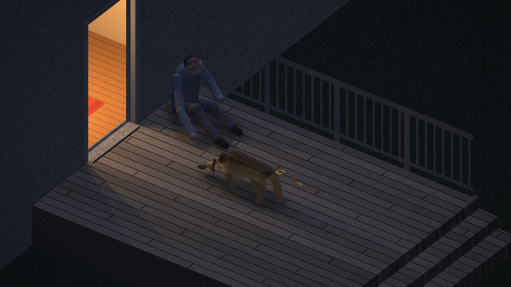

Measured from this swarm's own render (its trace) by check_handmade.py. The score's time, then the time the choice appears.
Each round is a fresh agent that sees the film, the brief and this swarm's SCION prompt, never the builder's notes, and returns a verdict and falsifiable repairs. Stopped at an independent pass.
# SCION 10 · critic round 1 · PASS A fresh, independent critic judged the film from the picture only. It read BRIEF.md, the SCION prompt and assets.json, and no builder files. **Verdict: PASS (thin).** Every choice reads. **The choices** - Backing away (1.08 s). - The refusal turn goes through the front (3.54–3.83 s) and holds with its back turned. - The head leads the turn back at 7.50 s, well inside ±0.25 s. - The head stays below the back line through the approach. - The lie-down starts at 23.875 s, with head and forelegs inside the door frame and the tail outside. - Looking in reads in depth: the back of the head and both ears face the camera, and the muzzle points into the lit room (26.42–28.0 s). There is a dog in every frame. **Language: yes.** One painted pelt is warped as a single continuous sheet by point and line handles, with the head as a rigid cluster. The end card shows the hide, the handles and an affine / similarity / rigid comparison. It is fundamentally different from the paper cut-out and from rigs. The critic's one caveat: lifted into 3D, the dog risks looking like a generic maquette, and it reads as MLS mainly through its cloth-like folds. **Rights:** clean. **Sound:** the soft voice is 9–11 dB below the calls. **Non-blocking repairs, not pursued** (stopped at an independent pass, per the SCION doctrine): 1. The head is half-hidden at 3.75–3.83 s and 7.9–8.1 s. 2. A pale disc at the rump reads as the open end of a tube. 3. The ears read as edge-on black paddles. 4. The dog has low contrast in the wide shot. 5. In the close shot the legs read as curtain flaps.
method · every asset and its rights · ledger of attempts · build · the prompt
Every pixel of the dog is the real dog; only the way its pieces are held changes.
Two frames of the public-domain home-movie dog (Amateur Film New Jersey C), cut out with their masks into a body sheet, a rigid head and neck, a tail and four legs; a three-quarter frame of the same dog is swapped in for the turns, a head turned toward the door is cut from the footage for the look back, and a back-of-head piece is cut from the dog's own dark fur with a drawn mask. The hand reaching for the dog is footage from a public-domain film; the person and porch are cut paper made in code. Nothing on the dog is drawn.
Moved byThe body sheet bends by a rigid moving-least-squares warp; the head, tail and legs are stiff pieces pinned at the joints, so lying down and walking are rotations of real pixels rather than tears. The performance is computed from the score, not captured from a live puppeteer, and the end card says so.
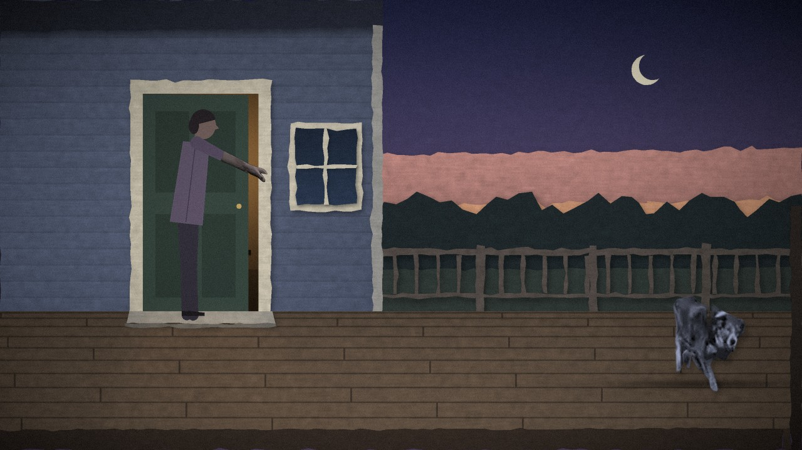
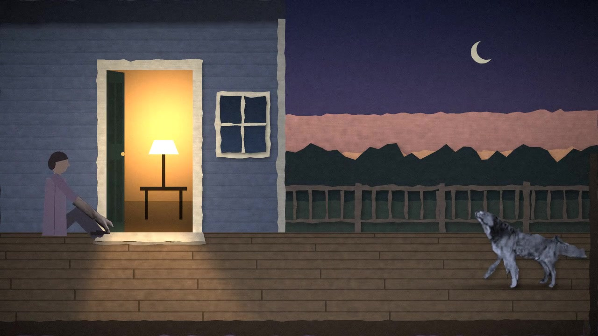
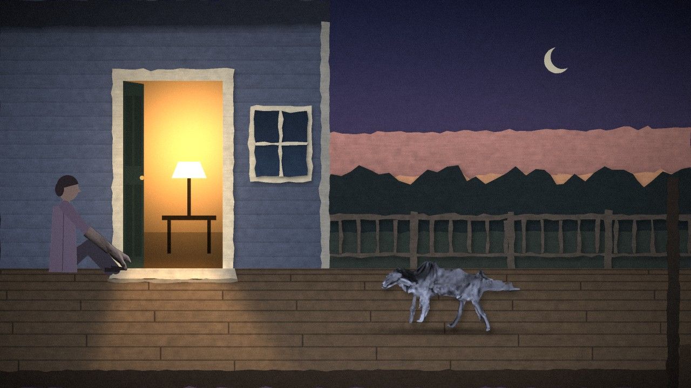

Measured from this swarm's own render (its trace) by check_handmade.py. The score's time, then the time the choice appears.
Each round is a fresh agent that sees the film, the brief and this swarm's SCION prompt, never the builder's notes, and returns a verdict and falsifiable repairs. Stopped at an independent pass.
# SCION 11 · critic round 1 · DOES NOT PASS A fresh, independent critic judged the film from the picture and sound only. It read BRIEF.md, the SCION prompt and assets.json, and no builder files. **What reads:** - Backing away at 1.0 s. - The head leading the turn back to look at 7.46 s, on time. - Lying across the sill: the front half is inside the jambs and the tail is outside. - Sound: the soft voice is about 13 dB below the calls. - Rights: clean. - Language: the dog really is warped public-domain footage, unlike the paper cut-out and unlike frame swapping. **What fails:** - **Looking in (26.7–28.0 s).** The muzzle lifts toward the light and the person, so the head never reads in depth. - **Torn pixels.** Pushed far, the warp tears the material: a smeared crescent at the head and folded fur across 4.5–7.4 s and 28.5–32 s. - **The rising turn (7.55–7.68 s).** It is a lumpy grey ball. - **The approach.** The head is not clearly below the back line. - **Lying.** It reads as a frog-like sprawl. - **Missing performance.** There is no tabletop, no hand occlusion and no captured performance. **Repair conditions, ranked:** 1. From 26.6 to 28.4 s the head reads in depth, with the muzzle never above horizontal and never pointed toward the person. 2. No swirl or folded fur at 4.4–7.4 s or 24–32 s. The head keeps a muzzle, an ear and an eye, and stays clear of the post. 3. From 7.46 to 7.8 s, every frame shows a legible dog. 4. From 14.8 to 23.7 s, the head top stays below the withers in every frame. 5. In the lying poses, the legs fold under the body or lie forward, and the hindquarters stay level.
# SCION 11 · critic round 2 · DOES NOT PASS A fresh, independent critic judged the repaired film from the picture only. It read no builder files and no earlier reviews. **What reads now** - Backing away (1.0 s). - The refusal turn, swapping a real three-quarter cut-out, at 3.42 s. - Lying across the sill in a sphinx pose, with head and shoulders inside and the tail outside. - A legible dog in every frame, including both turns. The torn pixels of round 1 are gone. **Language:** yes. Real footage frames are cut into a bending body and rigid pinned pieces. **Sound:** the soft voice is about 13 dB below the calls. **Rights:** clean. **What is still weak** - **Looking in (26.45–28.3 s).** The back-of-head piece is a soft dark blob, with a ghosted double muzzle through the dissolves. - **The approach.** The top of the head is level with or slightly above the withers. - **Turning to look.** The body jumps from lying to standing in two frames before the head comes round. The face reaches the camera at 7.71 s, right at the tolerance limit. - **Lying during the refusal.** It reads as a pelt, with splayed legs at 4.45–4.6 s and a dark hole under the belly. - **The outline.** A jagged ridge runs along the back and the ear tufts are ragged. **Repair conditions, ranked** 1. Looking in: a sharp back-of-head piece showing ears and skull, and no ghosted double head at 26.4–26.6 s or 28.0–28.4 s. 2. The approach: the top of the head, tufts included, sits at least 4 px below the withers in every frame from 14.9 to 23.6 s. 3. Turning to look: the head is visibly coming round by 7.60 s, before the body stands, with no two-frame pose jumps. 4. Lying: a readable lying outline, no splay and no hole under the belly. 5. A clean outline on the back and the ears at full resolution.
# SCION 11 · critic round 3 · DOES NOT PASS A fresh, independent critic judged the film from the picture only, across all 912 frames. It read no builder files and no earlier reviews. **What reads** - Backing away. - The refusal turn, through a real filmed three-quarter frame at 3.42 s. - The head-low approach, with planted feet. This one is borderline. - Lying across the sill. - Staying. **Language: yes, and the dog itself is made in it.** The audio passes, the rights are clean, and the end card is honest. **What fails** - **Turning to look (7.46–7.71 s).** The dog rises with its muzzle pointing up and away from the door: the "sea-lion rise" the brief warns about. The head first comes round at 7.75 s, which is 0.29 s late and after the body is already up. - **Looking in (26.5–28.2 s).** It is a dark lump with no ears or skull outline. The critic still sees two heads overlap as it comes in. **Also flagged** - The lying poses read as a pelt. - The head snaps down in one frame at 14.625 s. - There is a white seam at the neck cut. **Repair conditions, ranked** 1. At 7.46 ± 0.25 s the head points toward the door before the body leaves the ground. No raised muzzle points right in any frame of 7.46–7.75 s. 2. Looking in shows a back of the head with visible ears and skull, or a muzzle inside the lit room. No frame shows two heads. 3. Legs stay under the body as it rises (7.5–7.75 s). 4. The lying poses fold the legs and close the ragged edges. 5. No neck seam, and the head lowers over at least 3 frames at 14.6 s.
# SCION 11 · critic round 4 · DOES NOT PASS A fresh, independent critic judged the film from the picture only. It read no builder files and no earlier reviews. **What reads** - Backing away, with backward steps. - The refusal turn, through a three-quarter face. - The head-low approach. - Lying across the sill, with head and shoulders inside the jambs and the tail outside. Language: largely yes, real footage cut-outs moved as pieces. Audio passes. Rights are clean, and the end card is honest. **What fails** - **Turning to look (7.47–7.90 s).** The head swap reads as a grey mass with a hard-edged dark block behind it. The body rises first, and the head points at the door only at 8.175 s, about 0.7 s late. - **Looking in (26.45–28.2 s).** The level profile head reads as looking at the person's low hand, not into the room in depth. **Also flagged** - A straight head-to-neck seam while lying. - The muzzle points about 60° up for 6 s while the dog watches. - A smeared head at 3.425 s. - Blocky leg stubs at 4.5–4.8 s. **Repair conditions, ranked** 1. From 7.46 to 7.71 s a recognisable muzzle points toward the door while the dog is still lying, and the body rises only after that. 2. From 26.6 to 28.2 s the head reads in depth: the back of the head toward the viewer, or the muzzle inside the lit opening above the sill line. Not the walking profile aimed at the hand. 3. No dark block and no smeared head at 3.40–3.45 s or 7.4–7.95 s. 4. No visible head-to-neck seam from 24.4 to 31.9 s. 5. While watching (8.2–14.6 s), the muzzle is at most 30° above horizontal.
# SCION 11 · critic round 5 · PASS (narrow)
A fresh, independent critic judged the film from the picture only. It read no builder files and no earlier reviews.
**Verdict: PASS (narrow).** All six choices read on time, and the dog never enters the house.
- **Backing away:** reads at 1.07 s.
- **The refusal turn:** passes through a three-quarter cut-out at 3.425 s, then holds the back turned.
- **Turning to look:** the head is cut in over the shoulder, muzzle toward the door, at 7.467 s, before the body rises at about 7.8 s.
- **The approach:** the head stays low, only just.
- **Lying across the sill:** flat, with the tail outside.
- **Looking in:** reads in depth. The back of the head and both ears are inside the lit doorway from 26.53 to 28.2 s.
There is a legible dog in every frame.
**Language: partly.** The dog itself is real footage cut-outs moved as puppets, clearly different from PAE-00 and from frame-swapping. The SCION's capture primitive is missing: there is no tabletop, no live puppeteer and no hand occlusion. The end card says so honestly ("not from a live puppeteer").
**Rights:** acceptable. **Sound:** the soft voice is 13–15 dB below the calls.
**Operator ruling.** The missing live capture is a language gap, which under the SCION doctrine would normally earn one more repair round. It cannot be supplied in this environment: there is no person, camera or tabletop. It is stated plainly on the end card and in the documentation, which is what the critic's own condition 5 allows. This is round 5 and every choice now reads, so the pass is recorded.
**Non-blocking repairs, not pursued:**
1. The head top sits only a few pixels below the withers on the approach.
2. Dissolve ghosts and an outline seam at the turns.
3. Frayed leg edges and a rectangular foreleg stump.
4. The head moves in and out by hard cuts.
5. A recorded live performance.
method · every asset and its rights · ledger of attempts · build · the prompt
Legs a few millimetres apart on a sheet full of holes move independently because the weights stay local across every gap.
One cut-paper profile of a dog drawn in code, pierced with lace holes, legs 10–25 mm apart and the ears side by side, in a cut-away dollhouse view of the doorway at dusk; the person is made the same way. No kit or archive material; all sound is synthesized.
Moved byA triangle mesh (5,565 vertices) with 12 bones, 2 point handles and a 6-vertex torso cage; bounded biharmonic weights solved here (cotangent Laplacian, active-set solve), bounded, summing to one and mostly exactly zero, then linear blend skinning. Lifting one foreleg moves the other 0 mm, against 66 mm with naive weights; the end card shows the heat maps.
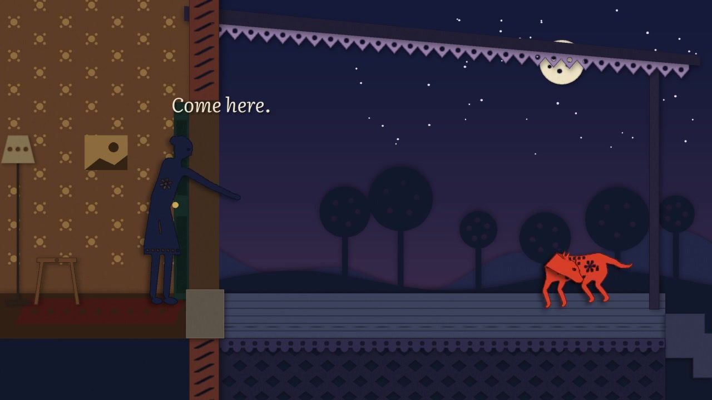
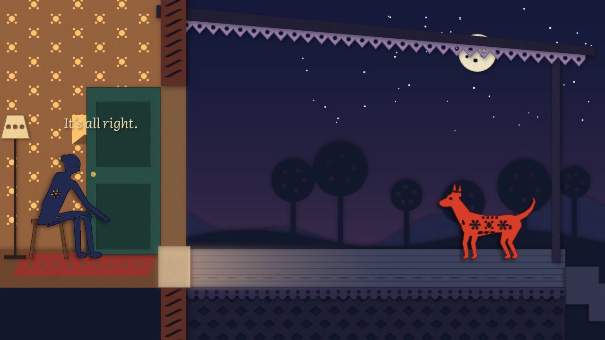
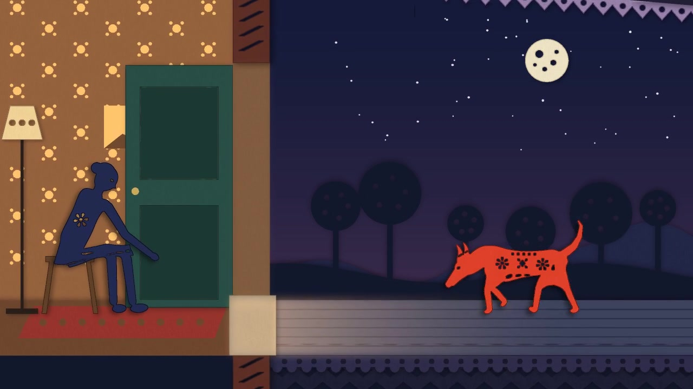
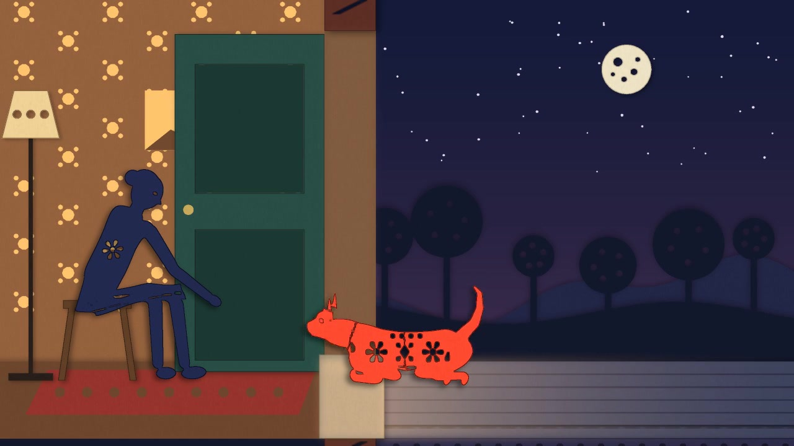
Measured from this swarm's own render (its trace) by check_handmade.py. The score's time, then the time the choice appears.
Each round is a fresh agent that sees the film, the brief and this swarm's SCION prompt, never the builder's notes, and returns a verdict and falsifiable repairs. Stopped at an independent pass.
# SCION 12 · critic round 1 · DOES NOT PASS A fresh, independent critic judged the film from the picture and sound only. It did not open method.md, the ledger, proof/ or build/. **Per choice (scene times)** - **Backing away:** reads. A crouch facing the door and backing off from 1.07; the gait works. - **Turned back:** reads. Profile facing the steps by 3.84, lying turned away from about 4.4 to 7.46. The head is stretched long, closer to an aardvark than a dog, at 4.0–7.4. - **Turning to look:** reads, narrowly. The head is edge-on at 7.55, and at 7.675 the muzzle points to the door with the hindquarters down (about +0.2 s). The body is up by 7.97. - **Coming, head low:** reads. Below the back from 14.77 to the sill. The feet alternate with no gross sliding. - **Lying across the sill:** reads. It folds at 23.85–24.43 with the legs under, head and forequarters past the jamb into the room, and the tail on the porch side. - **Looking in and staying:** weak / does not read in depth. The muzzle already points into the room. At 26.45–26.53 the head lifts, the ears overlap and the neck creases. There is no back of the head and no muzzle going into depth, so it reads as a lift toward the person's hand. **Not a legible dog in every frame.** Both body turns tangle: - 3.63–3.80: the sheet folds into a box with hair-thin thread legs, with no head at 3.675; - 8.13–8.30: the same collapse. **Language:** built in the swarm's language. The dog is a triangulated cut-paper mesh with bone, point and cage handles, and the end card shows localized heat maps. It differs from PAE-00, 34, 10 and 33. Against 37 it differs only in how the weights are solved, which shows on the end card, not in the action. **Craft:** - The thread legs and headless frame in the turns. - The stretched snout. - Only about 15 holes read, though the card claims 34. The holes never tear, and the legs never drag each other. - The second call cuts off abruptly at 4.20. **Sound:** each voice starts before its reaction. Calls about −15 dB, soft voice −26 to −28 dB, room −36/−37 dB. **Rights:** clean. **Repair conditions (ranked)** 1. Every frame from 3.5 to 3.9 s shows a dog with a head, and legs at least about 4 px wide; no box or thread shapes. 2. The same for every frame from 8.1 to 8.35 s. 3. Between 26.4 and 26.9 s the head visibly yaws into the room: the back of the head toward the viewer, or the muzzle foreshortened into the doorway. A lift alone does not count. 4. The muzzle reads as a dog's, not elongated, while lying at 4.4–7.4 and 26–28 s. 5. The pierced holes read as lace at full frame, or the card's 34-hole claim is made true to what is visible.
# SCION 12 · critic round 2 · PASS (narrow) A fresh, independent critic (not the round 1 critic) judged the repaired film from the picture and sound only. It did not open method.md, the ledger, proof/ or build/. **Per choice (scene times)** - **Backing away:** reads. A crouch at 1.08, backing toward the steps until 2.33, rising at 2.42. - **Turned back:** reads. Turned away by 3.79, lying by about 5.0, held to 7.42. - **Turning to look:** reads. The head is edge-on at 7.54 and faces the door at 7.58–7.63 while the hindquarters are down, rising before the body. - **Coming, head low:** reads. Below the back from 14.83 to the sill, with a real alternating gait and no gross sliding. - **Lying across the sill:** reads. Folds at 23.79–24.25, flat from 24.46. Head and forequarters past the jamb, tail on the porch. - **Looking in and staying:** reads, narrowly. From 26.54 the muzzle foreshortens into a blunt head with the ears behind, held to about 28.0. That is a yaw, not only a lift, but there is no back-of-head view, so it could be read as a turn toward the viewer. **Legibility:** almost. The legs are solid in every frame and the second turn is clean. In the first turn, at 3.625 and especially 3.667, the head is a flat folded panel with no clear muzzle; at full frame it reads as a dog ducking its head. No tangles. **Round 1 conditions** 1. 3.5–3.9: mostly met (no clear head at 3.667). 2. 8.1–8.35: met. 3. Yaw at 26.4–26.9: met, narrowly. 4. Muzzle while lying: partly met (still long and flat-eared at 4.6–7.4). 5. Lace holes: met. assets.json still says 34 against the cards' 30. **Language:** a triangulated cut-paper mesh moved by bone, point and cage handles. The fold-turns read as paper, and the end card shows the heat maps against naive weights. **Sound:** voices start at or before each reaction. Calls −18 dB, soft voice −28 to −29 dB, room tone −37/−42 dB. The second call now fades. **Rights:** clean. **Verdict:** PASS, narrowly. The narrow points touch the brief's lessons on turns and on looking in, so under the doctrine the swarm gets one more repair round. **Repair conditions (ranked)** 1. At 3.62–3.67 a muzzle or eye is visible on the folding head panel. 2. At 26.6–28.0 the look-in reads as away from the viewer: at least one frame shows the back of the head, or the eye moves toward the far edge of the head. 3. At 4.6–7.4 the snout is no longer than at 8.5, and the ears are not flattened into the skull line. 4. assets.json gives the same hole count as the cards (30).
# SCION 12 · critic round 3 · PASS (narrow) A fresh, independent critic (not the round 1 or 2 critic) judged the film after the extra repair round that the round 2 narrow pass earned. It worked from the picture and sound only, and did not open method.md, the ledger, proof/ or build/. **Per choice (scene times)** - **Backing away:** reads. A crouch at 1.08, backing toward the steps with an alternating gait, rising at 2.42. - **Turned back:** reads. The head folds and turns from 3.46. Profile facing the steps by 3.79, lying by about 4.6–5.0, held to 7.42. - **Turning to look:** reads. Edge-on at 7.54, and from 7.58 to 7.63 the muzzle points to the door with the hind legs folded. The body is up by about 7.8. - **Coming, head low:** reads. Below the back from 14.83 to the sill, with nothing visibly sliding. - **Lying across the sill:** reads. A sphinx lie at 23.83–24.4, head and chest over the sill within the jamb, tail on the porch. - **Looking in and staying:** reads, narrowly. By 26.62 the snout is gone, leaving a blunt head with the eye at its room-side edge, held to 28.0. It does not read as toward the viewer. But the head rises about 45 px to about the person's hand height, so "away" competes with "a lift toward the hand". A legible dog is in every frame: an eye shows on the folding head at 3.58–3.71, and the second turn is clean. Defect: from 26.6 to 28.0 the far ear floats detached above the head with a 10–15 px gap. **Round 2 conditions** 1. Eye or muzzle at 3.62–3.67: met. 2. Look-in away from the viewer: met, narrowly. 3. Lying snout: not met (about 1.5× the length at 8.5; weasel-like). 4. Hole count: met (30 everywhere). **Language:** a triangulated cut-paper mesh on bone, point and cage handles, with paper-fold turns. The end card compares bounded-biharmonic and naive weights. The title's "cut from one sheet of lace paper" is contradicted by the detached ear. **Sound:** voices start at or before each reaction. Calls −17.7 dB, soft lines about −27.5 dB, room −45/−55 dB. **Rights:** clean. **Verdict:** PASS, narrowly. **Operator note:** the round 2 narrow pass already received its one extra repair round under the doctrine, and this second independent pass closes the swarm. One correction is required for honesty: the detached ear contradicts the title's "one sheet" claim, so either the ear is attached at 26.6–28.0 or the claim is reworded. The remaining polish is recorded and is not pursued. **Polish (not pursued):** 1. A rise of at most about 15 px in the look-in, or a back-of-skull frame. 2. A lying snout at most 1.15× its length at 8.5. 3. A nose tip or cheek line at the room-side edge in the look-in.
method · every asset and its rights · ledger of attempts · build · the prompt
The secondary motion carries the story: the coat sleeks and stiffens on the refusal, the ears flick to the soft voice, and the coat spreads and settles as the dog lies down.
Torn crepe and tissue paper strips drawn in code, hung in overlapping rows on hidden paper discs, with no solid outline; a paper puppet person with hair, scarf and coat tails, a doorway curtain and reeds by the porch, in a cutaway house seen from the porch side. No kit or archive material; all sound is synthesized.
Moved byPerformed primary paths for the rigid pieces (torso discs, neck, skull, muzzle, two-bone legs), and 264 secondary chains on the dog plus curtain, reeds, hair and scarf: spring-dampers toward a rest shape at four substeps a frame, with gravity, gust wind, the draft when the door opens, and collisions with the floor, the dog and the person.
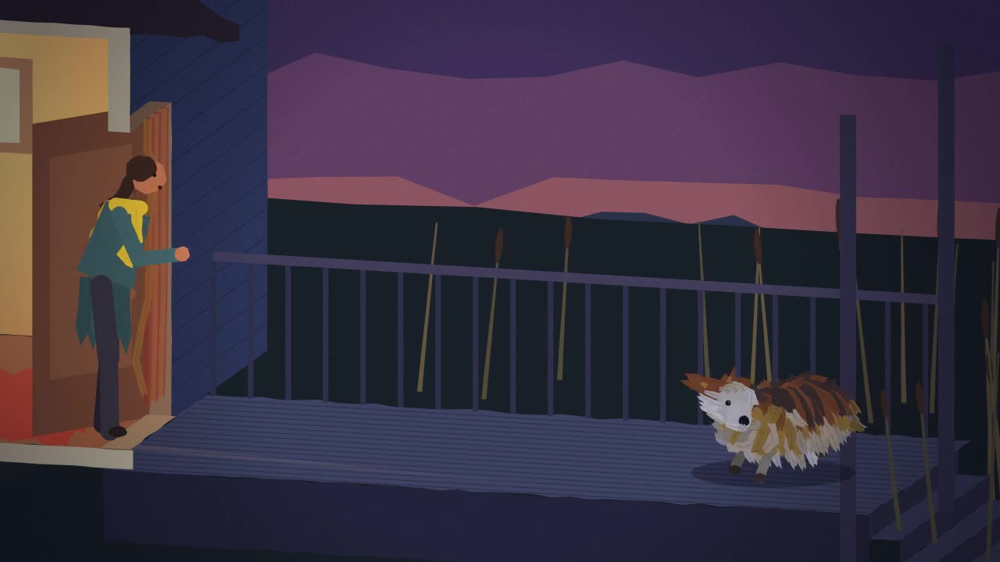
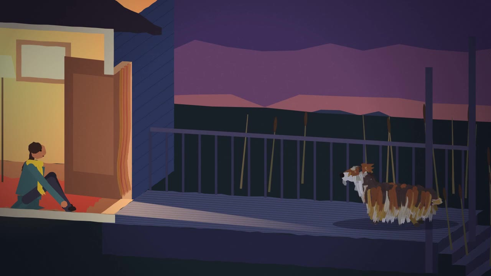
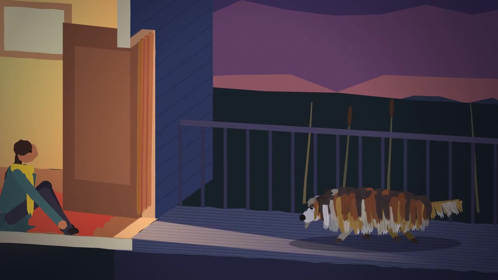
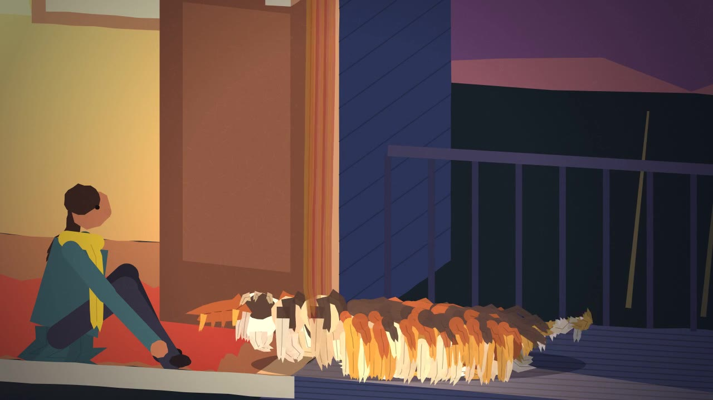
Measured from this swarm's own render (its trace) by check_handmade.py. The score's time, then the time the choice appears.
Each round is a fresh agent that sees the film, the brief and this swarm's SCION prompt, never the builder's notes, and returns a verdict and falsifiable repairs. Stopped at an independent pass.
# SCION 13 · critic round 1 · PASS (narrow)
A fresh, independent critic judged the film from the picture and sound only. It did not open method.md, the ledger, proof/ or build/.
**Per choice (scene times)**
- **Backing away:** reads. A crouch at 1.07, then backing right while facing the door with the ears flattening. Stopped by about 2.3.
- **Turned back:** reads. The turn runs 3.47–3.72, faces away low by 3.72, and lies in profile turned away by about 5.0. The coat visibly sleeks back on the refusal.
- **Turning to look:** reads. The soft voice starts at 7.33. The head comes round at 7.55–7.63 while the body is down, the body rises from 8.1, and it faces the door by 8.5. Ear flicks follow the second soft voice at 10.45–10.7.
- **Coming, head low:** reads. The head drops at 14.8–15.1 and stays below the back to about 24.
- **Lying across the sill:** mostly reads. Flat from about 24.0–24.2, with head and chest over the room floor and the tail outside. No folded legs are visible; the fringe hides them.
- **Looking in and staying:** weak to reads. At 26.9–28.1 the back of the head faces the viewer, so it reads in depth. But one orange ear streams flat into the room like a flag, ambiguous at full frame. Settles by 28.2 and stays.
**Legibility:** the head keeps a legible dog in every frame, with no tangles. Weak points:
- frontal "puffball" frames at 3.63 and 8.38;
- while walking and lying the body reads as a hanging fringe, like a mop or caterpillar with a dog's head;
- the legs rarely show.
**Language:** built bottom-up: primary trajectories, spring-damper strips under gravity, wind and the door draft. The coat sleeks and settles, the curtain blows and the reeds sway. The dog is native (torn tissue strips on discs) and distinct from PAE-00 and 17. It is close to 41 in mechanism but not in material.
**Craft:**
- The title overflows the right edge in a fallback serif, and an end-card line overflows.
- "Forepaws in" is not visible.
- Curtain strips draw over the dog at 26–28.
- The white muzzle strips read as fangs at 24.4–25.
- The coat is busy on the walk.
**Sound:** voices start before each reaction. Calls −23.5/−23.2 dB, soft voice −34.5/−33.6/−35.8 dB, room tone about −43 dB. **Rights:** clean (all synthesized, OFL fonts).
**Verdict:** PASS, narrowly. The narrow points touch the brief ("a dog in every frame" and looking in depth), so under the doctrine the swarm gets one more repair round.
**Repair conditions (ranked)**
1. During the look-in (26.6–28.2) no ear strip projects horizontally into the room past the muzzle line; the back of the head or the muzzle alone carries the look.
2. While lying (24.2–32) at least one folded foreleg or paw is visible, or "forepaws in" is removed from the end card.
3. During the approach, legs or feet are visible below the fringe in at least half the frames from 18 to 20 s.
4. The title and end-card text fit inside 1280 px and use the credited fonts.
5. No curtain strip draws over the dog's body at 26–28 s.
# SCION 13 · critic round 2 · PASS
A fresh, independent critic (not the round 1 critic) judged the repaired film from the picture and sound only. It did not open method.md, the ledger, proof/, build/ or the trace.
**Per choice (scene times)**
- **Backing away:** reads. The call starts at 1.00 and the crouch at 1.07, backing right while facing the door, head ducked and tail tucked.
- **Turned back:** reads. The second call starts at 3.40, and the turn runs 3.46–3.71 with legible frontal frames. Turned away with the coat sleeked by 3.71, lying in profile turned away about 5.0–7.46.
- **Turning to look:** reads. The soft voice starts at 7.35. The head lifts at 7.54 and the muzzle points at the door by 7.62–7.67 while the body stays flat until about 8.1.
- **Coming, head low:** reads. Below the back line from 14.92 to 23.9.
- **Lying across the sill:** reads. Flat at 23.92–24.17, with the forelegs extended and toe marks on the room floor, the head inside the jamb, and the tail outside on the porch.
- **Looking in and staying:** reads, though weakly at full frame. The ears perk at 26.46. From 26.75 to 28.3 the muzzle disappears behind the skull and the back of the head faces the viewer, into the lit room. At full frame the head is a cream and brown lump with ear tufts.
A legible dog is in every frame, with no tangles. On the walk the body shows as banded fringe, but at full resolution it reads as a shaggy sheepdog.
**Round 1 conditions:** all met. No ear streams in the look-in; the paws with toe marks are visible while lying ("forepaws in" is true); legs show at 18–20 s; the title and end card fit in the credited fonts; the curtain stays behind the dog.
**Language:** native. Torn tissue and crepe strips on spring-dampers. The coat sleeks on the refusal and settles on stopping, the ears perk to the soft voice, and the reeds and curtain answer the wind and the draft. The end card's claims match the picture.
**Sound:** voices lead every reaction. Calls −23.9/−23.2 dB, soft voice −34.6/−33.6/−35.8 dB (10–11 dB quieter), room tone about −39 dB. **Rights:** clean.
**Verdict:** PASS. Not a narrow pass on the brief's points: every choice reads on time, there is a dog in every frame, and the look-in reads in depth. The remaining weaknesses are legibility and craft.
**Polish (not blocking):**
1. A full-frame cue that the head faces into the room during 26.8–28.3.
2. A staggered fringe on the walk.
3. Shorter white beard strips at 23.6–24.4.
method · every asset and its rights · ledger of attempts · build · the prompt
The performance is a path through a drawer of drawings: casting, not animating.
An illustration bank drawn for this film: 41 ink-and-wash dog drawings set by hand from a construction kit (profile, three-quarter, front and back heads, legs, tail, a dark saddle, a pale ruff and socks), and 13 drawings of the person; the porch, door, room, light and sky drawn as paths. The archive dog was studied for build and markings; no pixel of it is used.
Moved byOnly by choosing one whole drawing per frame: each score frame becomes a pose vector, and a Viterbi path picks drawings by pose distance plus a transition cost, so turns pass through the drawn three-quarter and front views and nothing flickers. Walk and backing drawings sit on a gait chart so planted paws stay pinned. Nothing is tweened or warped.
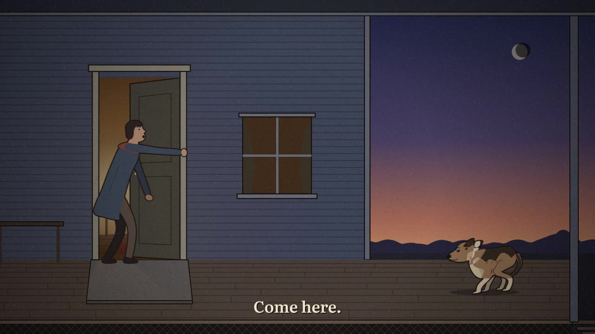
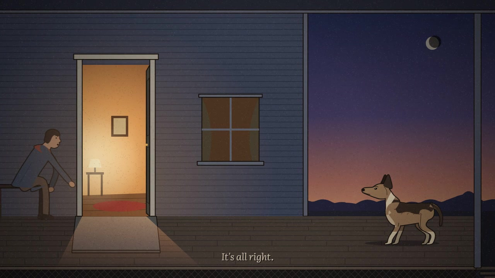
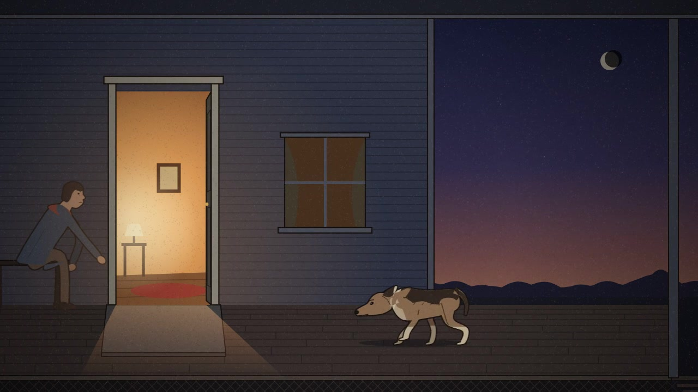

Measured from this swarm's own render (its trace) by check_handmade.py. The score's time, then the time the choice appears.
Each round is a fresh agent that sees the film, the brief and this swarm's SCION prompt, never the builder's notes, and returns a verdict and falsifiable repairs. Stopped at an independent pass.
# SCION 14 · critic round 1 · PASS Independent critic (fresh agent; frames every 0.5 s and every frame in the turn, lie and look-in windows; verdict from the picture before any builder notes). All six choices read: backing away (a crouched head-low drawing facing the door travels away from 1.08, upright and watching by 2.5); turned back (3/4 → rear 3.62–3.67 → 3/4 the other way → profile facing away, back shown from 3.79; lies facing away 5.4–7.4 as the score has it); turning to look on time (the head over the shoulder to the door at 7.458 while still lying; profile to the door by 8.42); coming head low (below the back the whole way; each drawing held 4 frames, then a ~12 px move; planted paws within ~10 px across swaps; staccato, no slide); lying across the sill, weak in depth (onto the haunches 23.87, lying by 24.12, forequarters overlapping the lit opening, tail out; but lying on the stoop ~60 px below the sill line, in front of the door rather than across it); looking in and staying (a back-of-head drawing into the lit room 26.54–28.0, never enters). A dog in every frame; one frontal drawing (8.04–8.21) darker and boxier. Bottom-up: every frame one whole drawing chosen from a bank, no tweens or warps; the rare gestures have their own drawings; the person cast from its own bank. The drawings are hand-set constructions in code (a parametric figure posed 41 times), but what the viewer sees and how it moves is discrete selection. Fundamentally different from PAE-00. Remaining (not pursued: stopped at an independent pass per the SCION doctrine): part of the lying dog above the sill line with the jamb overlapping it; no planted paw moving more than 4 px across a walk swap; the frontal turn drawings on-model with the profiles. Soft voice 9–12 dB under the calls, well above room tone. Rights clean; the end card's claims match the picture.
method · every asset and its rights · ledger of attempts · build · the prompt
The end card shows what the model makes alone next to what had to be corrected by hand.
An 11-layer puppet (torso, head, tail, two-part legs) cut from one frame of the public-domain home-movie dog and fitted to its other frames by render-loss optimisation, learning each layer's texture per view and a model of joint angles that scores every generated pose. Hand corrections (lying legs, the look back, the back of the head) are listed on the end card beside the model's own output.
Moved byA gait planner plants the feet and two-joint IK solves the legs; turns are fast cuts through the learned three-quarter views; the head has its own view for the look back.
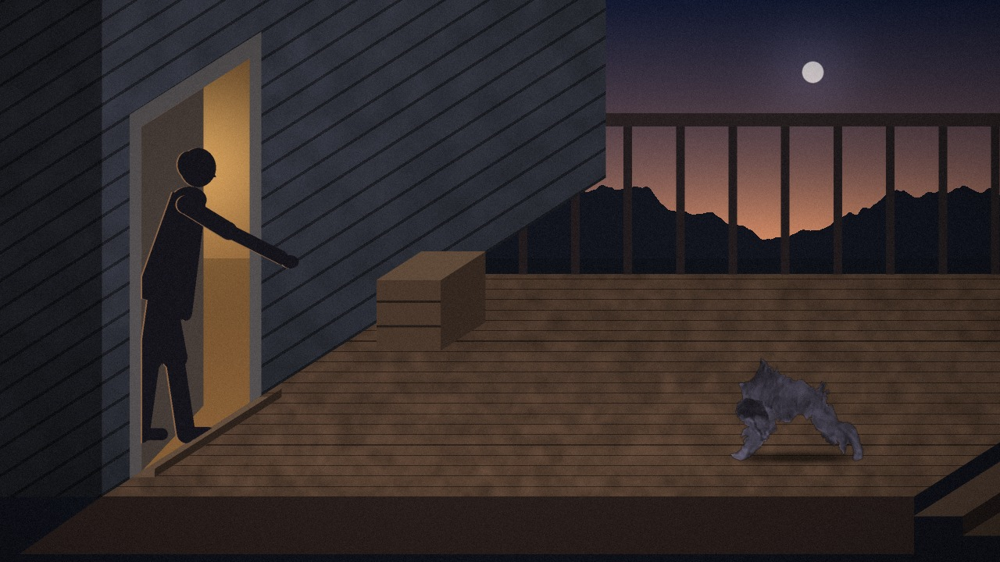
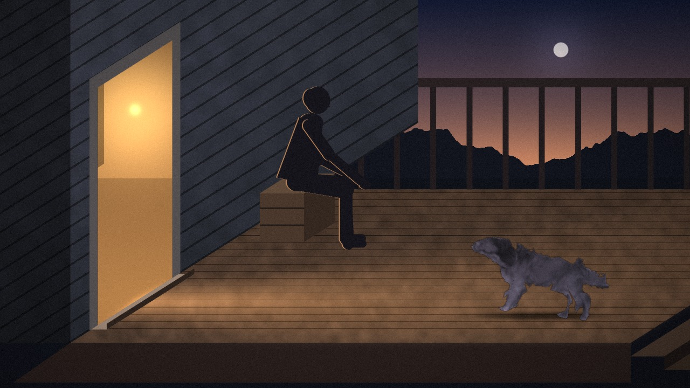
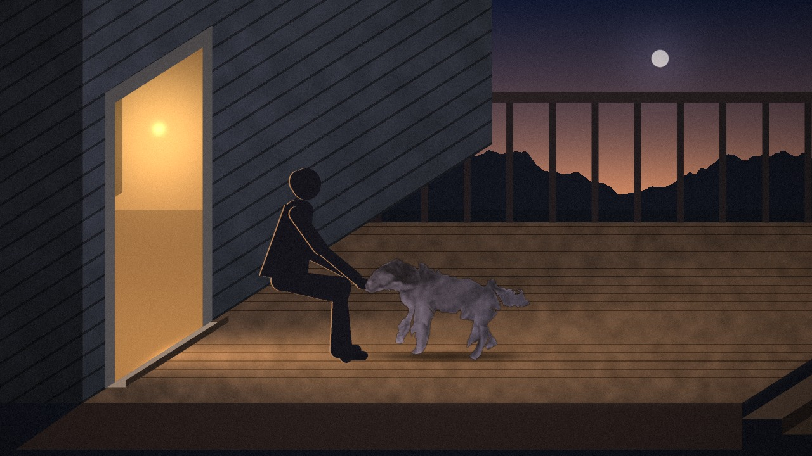

Measured from this swarm's own render (its trace) by check_handmade.py. The score's time, then the time the choice appears.
Each round is a fresh agent that sees the film, the brief and this swarm's SCION prompt, never the builder's notes, and returns a verdict and falsifiable repairs. Stopped at an independent pass.
# SCION 15 · critic round 1 · DOES NOT PASS (narrowly) A fresh, independent critic judged the film from the picture only. It read BRIEF.md, the SCION prompt and assets.json, and no builder files. **What reads** - Backing away. - The refusal: turned away by 3.75 s and lying by 5.0 s. - The head leading the turn back at about 7.58 s, inside the window. - Lying across the sill with the tail outside. - Sound: the soft voice is about 13 dB below the calls. - Rights: clean. **Language: largely yes.** The dog's pixels come from the archive dog's texture, warped through learned layers, and the look changes with the viewing angle. The end card's comparison of the model alone against the corrected version is honest and matches the film. **What fails** - The brief needs a readable dog in every frame of both turns. The SCION bar needs occlusion grounded in the layer model. - **Turns.** The turn frames 3.54–3.63 s and 8.25–8.33 s are a knot of legs, with a ghost-limb smear. - **Walking through the person.** From 20 to 24.5 s the dog appears to walk through the seated person: its legs overlap the person's shin and its foot lands on the person's shoe. - **Weak approach.** The head sits about level with the withers. - **Weak look-in.** It barely changes the silhouette. - **Colour.** The dog shifts from blue-grey to pink-grey in the door light. **Repair conditions, ranked** 1. From 19.5 to 24.6 s the dog's ground contact is in front of the person's, or its path clears the person, and no dog limb overlaps the person. 2. From 8.20 to 8.40 s there is one body with four separable legs and a head direction, and no ghost marks. 3. From 3.50 to 3.70 s the dog reads as a dog: head and four legs. 4. By 27.0 s, held to 28.0 s, the muzzle visibly points into the doorway or the back of the head clearly shows. 5. From 15.0 to 23.5 s the top of the head is clearly below the withers. (The critic asked for a full head-height; the operator has set at least 8 px, in line with the brief.)
# SCION 15 · critic round 2 · DOES NOT PASS (narrowly) A fresh, independent critic judged the repaired film from the picture only. It read no builder files and no earlier reviews. **What reads** - Backing away. - The refusal turn through a frontal view (3.45–3.62 s). - The head leading at 7.62–7.66 s. - The head-low approach with planted feet. The dog passes in front of the seated person and never through them, so round 1's depth failure is fixed. - No ghost limbs. **Language: genuinely bottom-up.** The dog's look comes from the archive dog mapped onto separate parts, and it shows poses the archive never does. The end card shows model output beside the hand corrections. **What fails** - **Looking in (26.54–28.2 s).** The head becomes a dark plume lifting up and left, with no ear, eye or muzzle. It reads as a lift toward the light, not a turn in depth. - **Lying (24.5–31.9 s).** It is a sprawl, with legs splayed like talons. - **The person (22.04–22.33 s).** They turn by squashing flat, edge-on. - **Calls.** The voices start about 0.3 s after the call and reach gesture. - **End card.** It contradicts itself about which poses are the model's own. **Operator ruling.** The critic also asked for in-between frames on the body flip at 8.20–8.25 s. Round 1 forbade ghost frames, and the swarm answered with one clean cut, so that in-between is optional. Making the end card agree with itself is required. **Repair conditions, ranked** 1. At 26.5–28.2 s, an ear and the skull outline show from behind, or the muzzle is visibly inside the door frame, with the head roughly level. 2. At 24.5–31.9 s the legs are folded or tucked, with paws that read as paws. 3. At 22.0–22.4 s the person never narrows below half their width. 4. Each call voice starts at or up to 0.25 s before its gesture and the dog's reaction (1.00 s and 3.42 s), never after it. 5. The end card's "model's own poses" sentence agrees with its list of hand-corrected poses.
# SCION 15 · critic round 3 · DOES NOT PASS (narrowly) A fresh, independent critic judged the film from the picture only. It read no builder files and no earlier reviews. **What reads** - Backing away, with the call heard first at 0.89 s. - The refusal turn at 3.43 s, with the call first at 3.31 s. - The head leading over the shoulder by 7.65 s. - The head-low approach, with the dog in front of the person. - Looking in reads in depth. - Sound: the soft voice is about 13 dB below the calls. - Rights: clean. **Language:** largely yes. The fur-texture layers generate the turn, the retreat and the head-low walk. The end card is honest about the hand corrections. **What fails: cross-pose identity** - The look-in head is a flat, dark, cat-eared polygon with a pale outline. It floats with a gap from the neck and does not match the fur of the rest of the dog. **Also flagged** - A one-frame snap and a five-legged tangle at 8.19–8.36 s. - The hind legs are stretched straight back when lying. - The low hand barely reads. - The sill board is drawn over the dog's legs. - The hand corrections are not listed in assets.json. **Repair conditions, ranked** 1. At 26.4–28.4 s the in-turned head is made of the same fur-texture layer as the dog and is attached to the neck with no gap. 2. At 8.1–8.5 s, never more than four legs, and no single-frame mirror pop. The critic asked for a 6-frame rotation; any clean solid poses will do, with no ghosting. 3. Lying from 24.1 s: hind legs folded under or beside the body. 4. The low hand visibly descends below knee height and moves toward the dog by 7.2 s. 5. The sill does not overdraw the legs at 23.3–24.0 s, and the hand-correction layers are listed in assets.json.
# SCION 15 · critic round 4 · DOES NOT PASS (close) A fresh, independent critic judged the film from the picture only. It read no builder files and no earlier reviews. **What reads** - **Backing away:** the call starts at 0.90 s, before the dog reacts. - **The refusal turn:** 3.45–3.70 s, with a compact front view mid-turn. - **Turning to look:** the head leads at 7.63 s and comes over the shoulder by 7.75 s. - **The approach:** the head stays low and the depth is right. - **Looking in:** it reads in depth. - **Sound:** passes. The soft voice is about 12–14 dB below the calls. - **Rights:** clean. - **Language:** a real 11-layer puppet built from the archive dog. Cross-pose identity holds, except for the back-of-head patch. **What fails** - **Lying down.** At the sill (24–32 s) and in the refusal (4.6–7.4 s) the legs stretch forward and back like a frozen leap; nothing is folded. - **The back of the head.** It is a flat, darker cut-out with a pale outline, a different material from the body. - **Mid-turn tangle** at 8.17–8.21 s. - **The end card.** It claims "folded legs" and "model alone makes the turns", and the picture and assets.json contradict both. **Repair conditions, ranked** 1. From 24.0 to 32 s, and at 4.6–7.4 s, the legs are visibly folded or tucked under. No foreleg reaches forward and no hind leg trails back. 2. From 26.45 to 28.3 s the back of the head has the same texture and edge as the body, with no pale outline and no flat fill. 3. From 8.10 to 8.30 s there is one dog with four distinguishable legs. 4. The end card claims only what the picture and assets.json show. 5. Keep the timing and the sound unchanged.
# SCION 15 · critic round 5 · DOES NOT PASS A fresh, independent critic judged the film from the picture only. Before writing its verdict it read assets.json and nothing else. **What reads** - Backing away, with the call leading. - The refusal: the dog faces away by 3.72 s. - The head-low approach, with the feet planted. - Lying across the sill: the forelegs are tucked and the tail is outside. This is weak. - The sound and the rights. - The honest side-by-side end card. **Language:** yes, structurally. Cross-pose identity mostly holds. **What fails** - **Looking in (26.45–28.2 s).** The head is a raised muzzle, swapped in and out in single frames. That is the lift toward the light the brief warns against. - **The near jamb.** It does not occlude the dog from 23.9 s to the end. - **The rise and the turn.** The rise at 7.59 s pops, and the turn tangles at 8.17–8.26 s. - **Lying.** The belly floats above its shadow. - **The refusal hold (4.6–7.35 s).** The dog is frozen. **Repair conditions, ranked** 1. The look-in reads in depth, with at least 4 intermediate frames. 2. The near jamb occludes the dog from 23.9 to 32 s. 3. The rise takes at least 6 frames, and there is no tangle at 8.1–8.3 s. 4. Lying: the belly touches its shadow. 5. Breathing or ear movement during the 4.6–7.35 s hold. **Operator note.** This is the fifth failed round. Fresh critics keep finding new faults, and the look-in has failed in different forms every round. Repairs are paused here, and the case goes to the person who commissioned the films rather than into another cycle.
method · every asset and its rights · ledger of attempts · build · the prompt
The performance belongs to the body; the face is a slot anyone could be cast into.
The body is cut from frames of the public-domain home-movie dog (Amateur Film New Jersey C): torso, neck, forelegs and hind legs from one walking frame, the tail from another, graded warm with the film's own grain kept. The dog's own turn in the footage supplies the turn plates, with its head removed and the gap filled from the coat. Three casts are made for the head slot (a paper head, a Quick, Draw! doodle and a head rebuilt from the home movie), each in five views.
Moved byThe body pieces are re-posed on one performance, and a stepping solver plants the feet. Head views are swapped by facing and registered to a socket point on the neck, so the head leads every turn. The end card plays the same performance with each of the three casts.
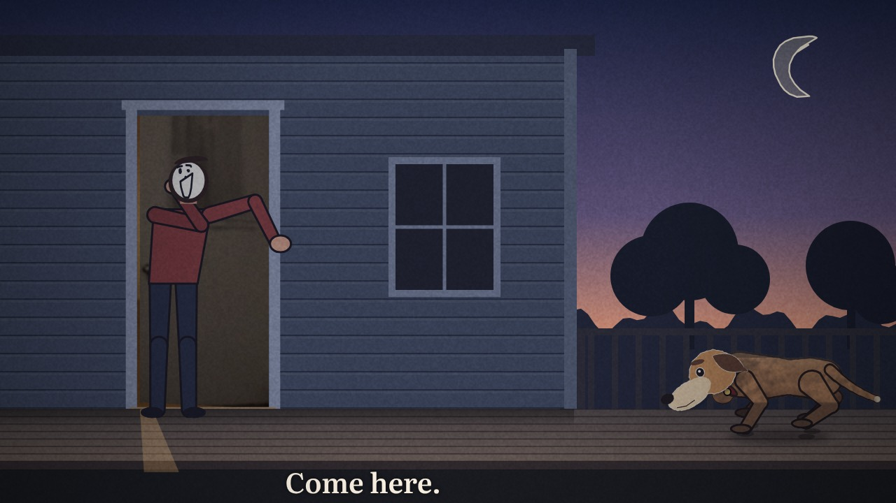
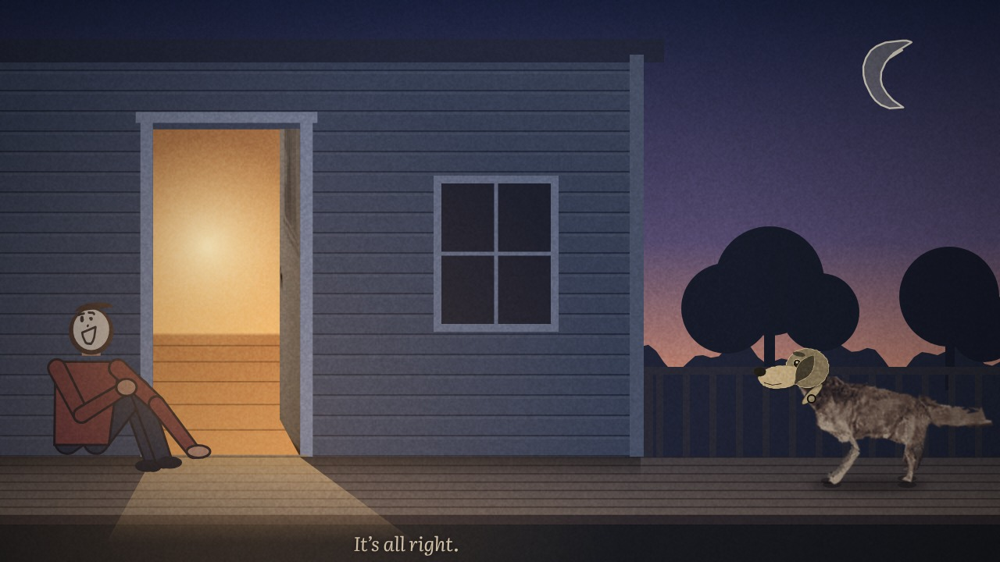
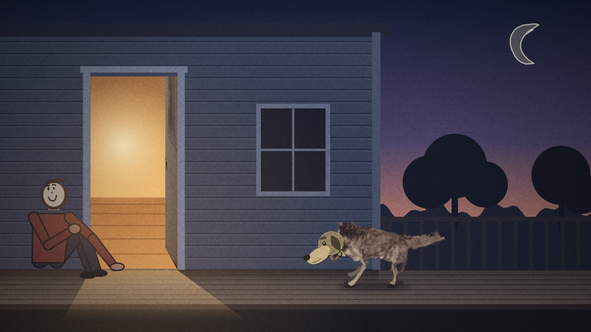

Measured from this swarm's own render (its trace) by check_handmade.py. The score's time, then the time the choice appears.
Each round is a fresh agent that sees the film, the brief and this swarm's SCION prompt, never the builder's notes, and returns a verdict and falsifiable repairs. Stopped at an independent pass.
# SCION 16 · critic round 1 · DOES NOT PASS (narrowly) Independent critic (fresh agent; frames every 0.5 s and every frame in the turn, lie and look-in windows; the comparison reel viewed after the film). Per choice: backing away reads (crouch at 1.17, tail tucked, backs away facing the person); turned back reads (a real foreshortened turn from 3.54, back shown by 3.9, lies flat facing away 4.6–7.4 as the score has it; edge-on frames 3.83–3.92 a rump, tail and bundle of legs); turning to look weak (the face comes round over the shoulder only at 7.83, ~0.37 s after 7.46); coming head low reads (at or below the back line, feet step and plant); lying across the sill reads, weak pose (head and forequarters inside the opening, tail out; the hip a high mound above the shoulder; a raised-rear transition at 23.88–23.96); looking in and staying reads well (the back of the head and spread ears toward the lit room 26.54–28.0). A dog in every frame. Language: the native parts are real: one performance, swappable head slots in three views, a cast manifest, a matte manifest, an occlusion flag; the comparison reel proves the recasting mechanically (paper, doodle and home-movie heads ride the same body frame for frame). But the dog is not built in this lineage's language: the body is cut-out capsules and circles furred by multiplying in a coat tile from the archive dog, a generic jointed puppet with the coat laid over it; the main cut ships the paper head on pin-jointed pieces and reads as a PAE-00-style cut-out; the one photographic cast appears only in the proof reel, as an ungraded sticker. Defects: a straight fur-tile seam across the torso; limb outlines through a translucent torso in the turns; the lying hindquarters too high; the head late at 7.46. Sound follows events; soft voice 12–14 dB under the calls. Rights clean (Quick, Draw! key_ids verified; no company imagery or real faces). Repair conditions (ranked): 1. The film's dog visibly comes from this lineage's materials: a head-slot cast from authorized photographic sources, graded and grained to the plate and landmark-aligned in all three views, or a body plate from the archive dog footage and pose keys; at 9 and 19 s the dog must not read as a paper cut-out. 2. No fur-tile seam and no limb outlines through the torso (3.5–4.0, 24–30). 3. Lying (24.2–32): the hip no higher than the shoulder line, no leg extended under the body. 4. At 7.46 + 0.25 s the muzzle points toward the door. 5. In the comparison reel, every cast's back view at 27 s reads as a head (ears and skull), tone and scale matched to the body.
# SCION 16 · critic round 2 · PASS A fresh, independent critic judged the round-2 film from the picture and the asset files only. It read BRIEF.md, the SCION prompt, assets.json and cast/manifest.json, and no builder files or earlier reviews. **Verdict: PASS.** Every choice reads: - The refusal turn runs from 3.50 to 3.88 s. - The head leads at 7.54–7.71 s: it points at the door over the shoulder while the body still faces away. - The head is low from 14.75 to 23.8 s. - The dog lies across the sill with its head and chest inside the door frame (weakly). - It looks in at 26.6–28.1 s, which meets the depth lesson. There is one dog in every frame: a real archive body wearing a cast head, which is this swarm's premise, with the collar hiding the seam. **Language: yes, bottom-up.** The body plate and the dog's own turn plates are cut from the public-domain archive dog. Swappable head views are registered at a socket, and three casts (paper, doodle and home movie) play the same performance. It is fundamentally different from PAE-00. **Rights:** public domain, own work, and CC BY 4.0 (Quick, Draw!, credited on the end card). **Sound:** the soft voice is 12–14 dB below the calls. **Non-blocking repairs, not pursued** (stopped at an independent pass, per the SCION doctrine): 1. At 3.60–3.67 s, for about 3 frames, the head view and the body plate disagree on direction. 2. The lying pose has stick forelegs and reads as half a crouch. 3. The back-of-head view is a plain disc. 4. Planted paws creep about 5 px. 5. The door opening is barely audible.
method · every asset and its rights · ledger of attempts · build · the prompt
The fewer drawings it has, the more each choice of drawing says.
Biscuit: about 25 flat construction-paper pieces cut in code, each with a fixed scissor wobble so it looks the same every frame; three body views, five head views, a standing and a lying drawing, and an atlas of eyes, brows and ears. Maren, the person, has one view, stand, crouch and sit postures and a ten-drawing mouth atlas. Five Quick, Draw! doodles make the moon, trees and fence. Original designs, not the show's.
Moved byEvery turn or change of posture is a swap to another whole drawing, held on twos, never squashed; the head is turned separately from the body and leads it. Paws are put down and stay put; one list of timed sounds drives her mouth and her voice. The limited animation does the acting: a held sulk, eyes rolled up on the approach, one back-of-head drawing for looking in.


Measured from this swarm's own render (its trace) by check_handmade.py. The score's time, then the time the choice appears.
Each round is a fresh agent that sees the film, the brief and this swarm's SCION prompt, never the builder's notes, and returns a verdict and falsifiable repairs. Stopped at an independent pass.
# SCION 17 · critic round 1 · PASS Independent critic (fresh agent; 0.5 s sheets and 24 fps crops of both turns, the walk, the lie-down, the cut and the look-in; verdict from the picture before any builder notes). All six choices read on time: backing away (crouch facing the caller, moves away under the first call); turned back (drawings swap profile → three-quarter → front → profile facing away by 3.55; lies facing away to 7.46); turning to look (the head swaps to front at 7.467 and faces the door by 7.55 while the body still lies away; the head leads); coming head low (skull at or under the back line, ears flat, eyes rolled up toward her; feet on twos, planted, no skating); lying across the sill (sphinx pose by 24.05, head and chest inside the lit opening, tail out on the porch); looking in and staying (back of the head into the light 26.62–27.9, settles 28.2). One dog in every frame: palette, red collar, saddle patch and ears hold across five head views, three body views and the lying drawing; neither turn collapses edge-on. Bottom-up: face-direction states, swapped whole drawings, an expression atlas, mouth shapes on the person, a flat stage, timing on twos and holds; the limited animation does the acting. Strong comic staging; one motivated cut. Rights clean; nothing copies the show (original designs; only the construction-paper look is borrowed). Optional polish (not pursued: stopped at an independent pass per the SCION doctrine): the tail sticks straight out sideways in the front views; the refusal lie pre-spends the final lie-down pose; the dog is small in the wide shot; the approach walk has no paw sound.
method · every asset and its rights · ledger of attempts · build · the prompt
Discipline is what is not rigged: the drawing does the acting, the rig only carries it.
Every drawing written as control points for this film: tapered brush-ribbon lines with fixed pressure, flat colour with a synthesized watercolour wash and pooled edge. A cut-away house with a patterned room, a hearth and a carved door frame; a dusk porch with spiral-canopy trees. The dog is a turnaround and expression sheet: profile standing, crouching and lying, three-quarter rear, rear, and five heads. Original designs, not the studio's.
Moved byViews swap by substitution, on twos; a restrained rig moves only the legs (two-bone, paws planted), the tail and the neck. One push-in to the threshold, with line weight held constant through the zoom. The room stays dim until the door opens, and the light falls from the doorway as a wedge onto the boards.


Measured from this swarm's own render (its trace) by check_handmade.py. The score's time, then the time the choice appears.
Each round is a fresh agent that sees the film, the brief and this swarm's SCION prompt, never the builder's notes, and returns a verdict and falsifiable repairs. Stopped at an independent pass.
# SCION 18 · critic round 1 · PASS (narrow) Independent critic (fresh agent; all 912 frames, contact sheets and crops; verdict from the picture before any builder notes). All six choices read on time: backing away (crouch, tail tucked, backs away facing the door, feet stepping); turned back (three-quarter rear 3.625, full rear 3.667, lies curled, rump and tail to the door, head away, 4.6–7.4); turning to look (head round to the door at 7.50; body rises through the turnaround drawings by 8.5); coming head low (below the back line 16–23, eyes half-lidded, feet planted while held); lying across the sill (really lying, forequarters inside the door post, tail outside); looking in and staying (back of the head to the viewer, into the room, 26.7–28.3). Mostly a dog in every frame: the rear view at 3.667–3.708 is a featureless bean; at 8.00–8.21 the tail is drawn on the head side. Bottom-up: authored turnaround drawings swapped by substitution; a restrained rig on legs, tail and neck only; tapered brush outlines, grained painted fills, a patterned interior; no maquette, no photographic pixels. Fundamentally different from PAE-00. Against the lineage: a tube torso on noodle legs, not a strongly designed shape; spidery splayed crouch legs. Defects: (a) tail on the wrong side 8.00–8.21; (b) the door light 6.2–7.2 is a uniform warm haze veiling the porch like fog, not light from the doorway, and the cut-away room is already lit; (c) the rear-view blob; (d) the low hand reads only as a lowered arm in the wide shot. Sound follows events; soft voice ~12 dB under the calls, ~10 dB above room tone. No state labels; end card true. Rights clean; nothing copies the studio's characters. Repair conditions (recommended, not blocking): 1. 8.00–8.21: the tail attaches at the rump, away from the head, in every frame. 2. 6.2–7.4: the light visibly comes from the door opening (a brighter wedge or pool on the sill and boards), not a uniform haze. 3. 3.65–3.72: the rear view shows two hind legs or a head/neck silhouette. 4. From 6.8: the low hand readable at wide-shot scale (open palm toward the dog at about knee height). 5. Optional: the retreat crouch legs not splayed wider than the torso is long.
# SCION 18 · critic round 2 · PASS Fresh independent critic (all 768 scene frames at full resolution; brightness measured across the door's opening; audio per window; judged before reading round 1). All six choices read: backing away (crouch, tail tucked, head down at 1.08; backs away facing the door with stepping feet); turned back (drawing swaps profile → rear with the head peeking → full rear → three-quarter rear away by 3.75; lies curled, rump to the door, ~4.6–7.42); turning to look (head over the shoulder to the door at 7.50; body rises through the turnaround drawings by 8.42); coming head low (below the back line 14.79–23.8, feet step and plant); lying across the sill (down by ~24.2, forequarters in the doorway, rear and tail outside the post); looking in and staying (the back of the head to the viewer, muzzle into the room 26.62–28.0). A dog in every frame (no colour-mask dropout). Bottom-up: an authored turnaround and expression sheet swapped by substitution; a selective rig on legs, tail, neck and the woman's arm; tapered brush strokes over grained washes; a patterned cut-away interior; no maquette, no found pixels. The light comes with the opening: as the leaf swings (6.25–6.75) the room brightens 37 → 66, the porch boards 102 → 120, with a bright pool at the sill from 7.0. Soft voice ~10–14 dB under the calls, ~8–12 dB above room tone; no state labels. Round-1 conditions: all five met. Remaining (optional, not pursued: stopped at an independent pass per the SCION doctrine): the torso still a tube on thin legs; the full-rear drawings tall and narrow; a faint light beam already in the sky before the door opens; the open leaf can briefly read as a closed door behind the dog's head.
method · every asset and its rights · ledger of attempts · build · the prompt
The turns are not tweened: a view bone switches whole drawings while corrective shapes re-draw the joints it bends.
One variable-width ink line over flat fills on paper grain, drawn in code by the swarm: an ochre dog with a cream bib, muzzle and socks, a house shown in section, a person drawn the same way. Five head drawings (profile, three-quarter front, front, three-quarter back, back) from one landmark sheet. No kit or archive material is used; all sound is synthesized.
Moved byA Moho-style rig of 25 bones (spine, neck, head, two view-control bones, three-bone IK legs, tail and ears). Six Smart-Bone corrective actions are driven by bone angles: the neck turn bulges the shoulder and shortens the neck, the spine curls, the legs fold round the haunch and elbow, and the chin flattens on the paws. Switch layers pick the head view, and a footfall planner keeps weight-bearing feet planted.
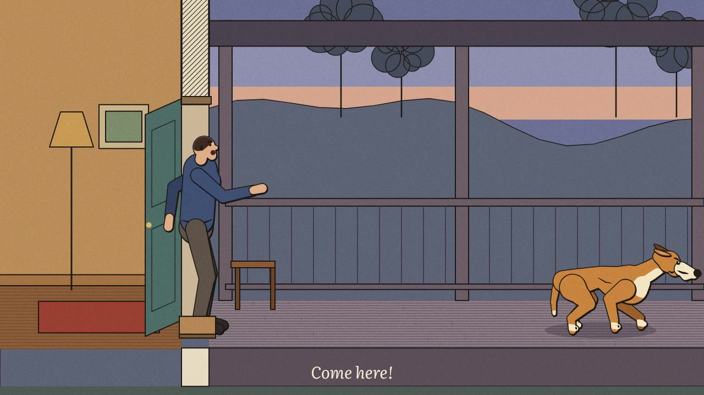
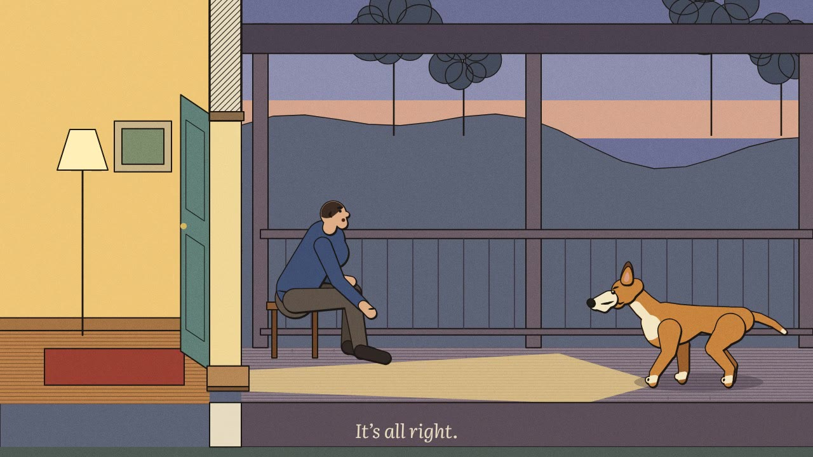
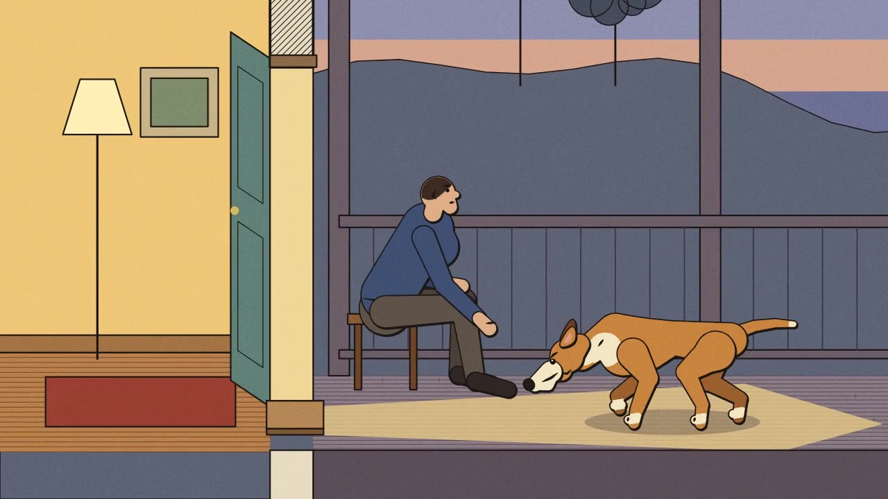
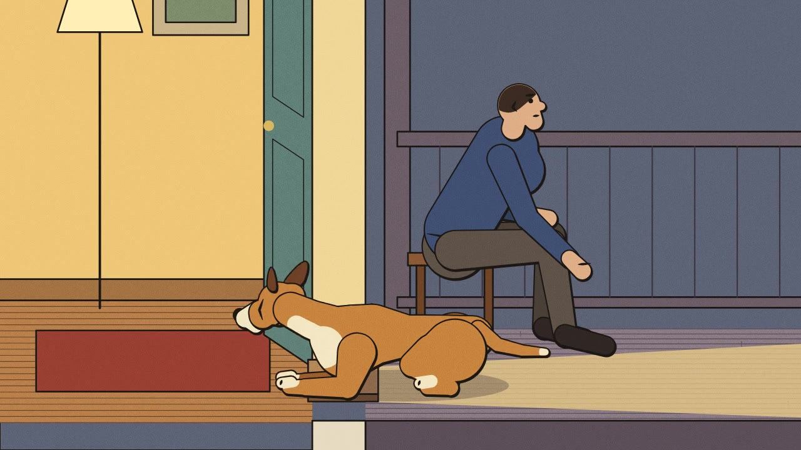
Measured from this swarm's own render (its trace) by check_handmade.py. The score's time, then the time the choice appears.
Each round is a fresh agent that sees the film, the brief and this swarm's SCION prompt, never the builder's notes, and returns a verdict and falsifiable repairs. Stopped at an independent pass.
# SCION 19 · critic round 1 · PASS A fresh, independent critic judged the film from the picture and sound only. It did not open method.md, the ledger, proof/ or build/. **Verdict: PASS.** Every choice reads (scene times): - **Backing away:** reads. A crouch at 1.04–1.21 facing the door, tail low, then a slink right of about 170 px by 2.37. - **Turned back:** reads (profile turned away). The head goes three-quarter (3.467), front (3.509), three-quarter right (3.551), then profile away (3.592). The dog is low by 3.9 and lies facing away from 4.6 to 7.46. - **Turning to look:** reads. The head leads: lift at 7.542, back of the head at 7.583, muzzle at the door by 7.667 (+0.21 s) while the body is down. The body rises from 7.83 through a clear rear view at 8.25–8.33. - **Coming head low:** reads. The head drops at 14.708 and stays below the back through 23.8. - **Lying across the sill:** reads. Flat by 24.1, with head and forelegs inside the jamb and hindquarters and tail outside. - **Looking in and staying:** reads in depth. A three-quarter-back head at 26.53 (back of the skull toward us, muzzle into the room) holds to about 28.1, then the chin settles. A legible dog is in every frame of both turns. The only near-tangle is at 3.542, where the forelegs bunch. **Language:** the film is built bottom-up as bone-bound masses with joint discs and IK legs of constant length. - Switch-layer heads in five views do the acting. - Corrective shapes are visible: the neck crease, the spine curl and the haunch bulge. The critic could not confirm from the picture that bone angles drive them. - The dog itself is made in this material. Unlike 33 and 37, the views are chosen by view control rather than solved or deformed; it is closest to 25 (Rive), and is set apart by the view switching and the front, back and three-quarter views. **Sound:** the calls sit at −15/−13 dB, the soft voice at −29/−28/−26 dB, and room tone at −38 dB. The soft voice is at least 11 dB under the calls. **Rights:** everything was made in code. The fonts are SIL OFL, supplied by the brief. Nothing is of unknown rights. **Craft notes and repair conditions (none blocks the pass):** 1. The head drop at 14.71 is a single frame; it should span at least 3. 2. The look-in swaps from profile to three-quarter back in one frame at 26.49→26.53; it needs an in-between or a corrective. 3. The front view at 3.51 sits on a body still drawn in profile. 4. The paw taps are only 3–4 dB above room tone. 5. Foot slip on the approach is unverified because the camera tracks the dog. The camera push from about 16 s crops the lamp. Lying head-on-paws facing away can read as resting rather than refusing.
method · every asset and its rights · ledger of attempts · build · the prompt
Every turn is a substitution that lands on a whole drawing, never a dissolve; the end card shows the real xsheet rows of the head-lead turn.
A library of 106 drawings made in code: 57 dog bodies (stand, crouch, three walk cycles, lowering, lying and front, back and three-quarter views), 9 heads including a back-of-head drawing for looking in, ears, tails, person poses and mouths. Ink, tone and rim-highlight passes over a painted dusk porch and a cutaway lit room, with a palette of 27 named colour styles. No kit or archive material; all sound is synthesized.
Moved byA 26-node graph (exposure sheet, library, palette, pegs, element nodes, a neck curve deformer, a tail chain, composites, cast shadow, grade) evaluated each frame. The acting is an exposure sheet shipped as xsheet.json and .tsv: holds on twos, walks on ones, walk drawings chosen by distance travelled so planted feet do not slide.
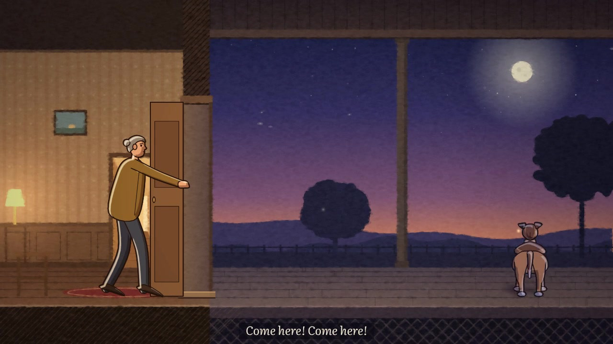
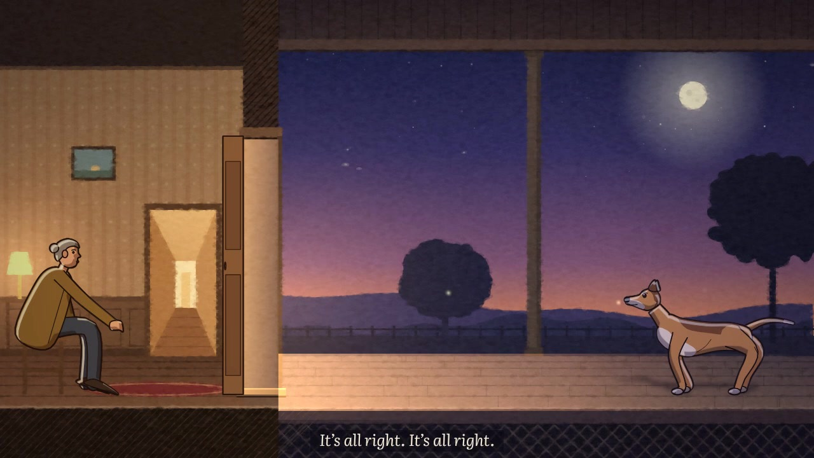
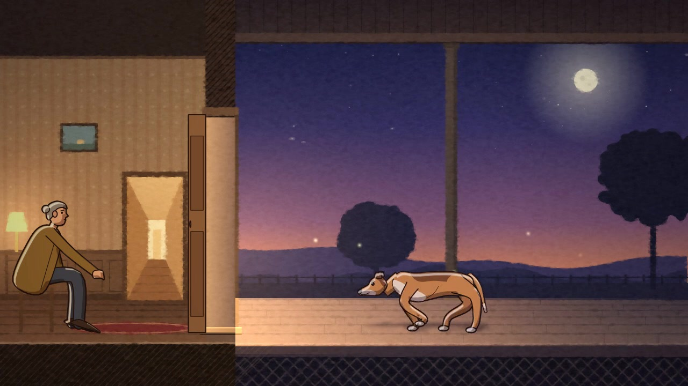
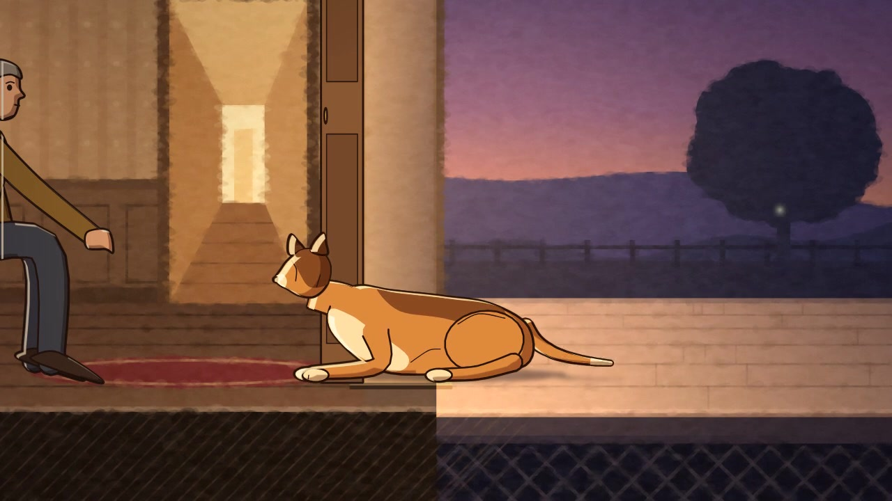
Measured from this swarm's own render (its trace) by check_handmade.py. The score's time, then the time the choice appears.
Each round is a fresh agent that sees the film, the brief and this swarm's SCION prompt, never the builder's notes, and returns a verdict and falsifiable repairs. Stopped at an independent pass.
# SCION 20 · critic round 1 · PASS A fresh, independent critic judged the film from the picture and sound only. It did not open method.md, the ledger, proof/, build/ or scene/. **Verdict: PASS.** Every choice reads (scene times): - **Backing away:** a cringe with the head low at 0.98, a creep right, and standing again at 2.32. - **Turned back:** a 3/4 rear drawing at 3.42, a full rear view at 3.54–3.63, then profile away from 3.79. Lying facing away by 4.58, held to 7.42. - **Turning to look:** the head moves first at 7.46 (3/4 front, front 7.54–7.58, 3/4 7.63). From 7.67 the muzzle points at the door while the body still lies the other way. The body rises from 7.88 and stands facing the door at 8.54. - **Coming head low:** a crouch-walk from 14.69, with the head below the line of the back through 23.75. Paws plant at 18.5–19.5 with no visible sliding (judged by eye). - **Lying across the sill:** the lowering drawing at 23.79, a full sphinx lie by 24.04. Forepaws on the rug inside, hindquarters and tail on the porch. - **Looking in and staying:** a back-of-head drawing at 26.63–28.2 turns the skull and ears toward the lit corridor. It reads in depth, then settles by 28.5. A legible dog is in every frame. The swaps land on whole drawings, with no dissolves or ghosts. **Language:** a turnaround library swapped drawing to drawing, with head, ear and tail tracks and a neck deformer. The end card's 26-node graph and exposure-sheet excerpt (frames 178–205) match the picture frame for frame. The dog is cel ink-and-paint, native to the idea, and distinct from the PAE-00 cut-out. Against 17, 18 and 22 the critic judged from their stated lineages only, without watching those films: it is closest to 22, set apart by exposure-sheet timing and deformer chains. **Sound:** the calls at −14.5/−11.6 dB, the soft voice at −27.8/−28.5/−26.5 dB, room tone about −45 dB. **Rights:** 106 drawings made in code, an original palette and background, synthesized sound, and OFL fonts. Nothing is of unknown rights. **Polish notes (not blocking):** 1. The front-on head at 7.54 is a round, pug-like face on a long-muzzled dog, so it goes off-model for two frames. 2. The door panel hides the lit corridor at 6.4–6.73, and light reaches the porch at about 6.4 against the score's 6.2. 3. The hind legs cross into one shape at 18.5–19.5. 4. The person is cut off at the left in the close-up, and a thin light line shows beside them.
method · every asset and its rights · ledger of attempts · build · the prompt
A dog that only ever walked to a bowl is retargeted, from a handful of stills, to perform all six choices of the score.
Six frames of the public-domain home movie Amateur Film New Jersey C with their SAM masks: torso, neck, leg segments and tail cut from them and laid on a body template, and five angle heads (front, three-quarter, profile, lowered, back of head). The person, door leaf and lit hall come from Straight Talk (NTIS, public domain), the sky from Top of the Cloud; the house and light are computed and graded to the same grain.
Moved byLandmarks fitted to each head (the automatic fit was accepted on the front and three-quarter heads and corrected by hand on the profile, lowered and back views, with the failures recorded), expression patches for ears, brow and mouth, whole-body sprite replacement for the turns with hard cuts, and two-bone IK keeping planted paws still.
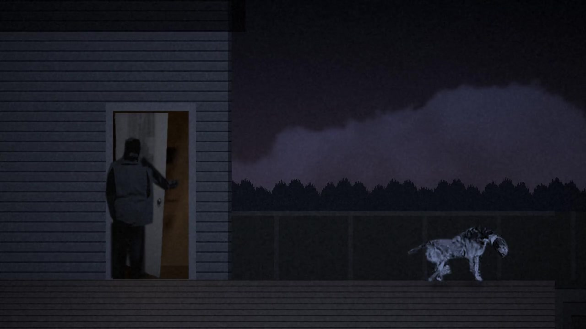
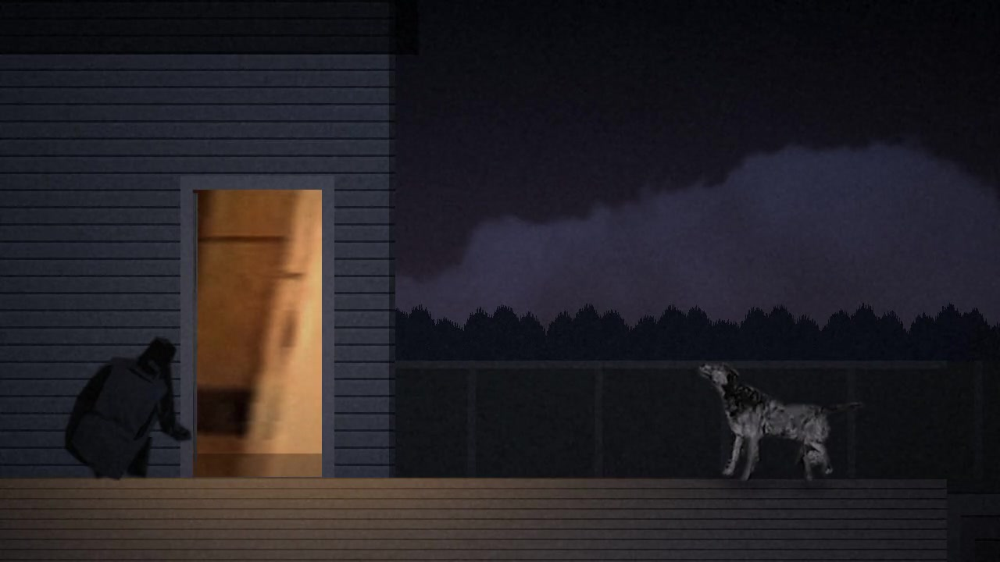
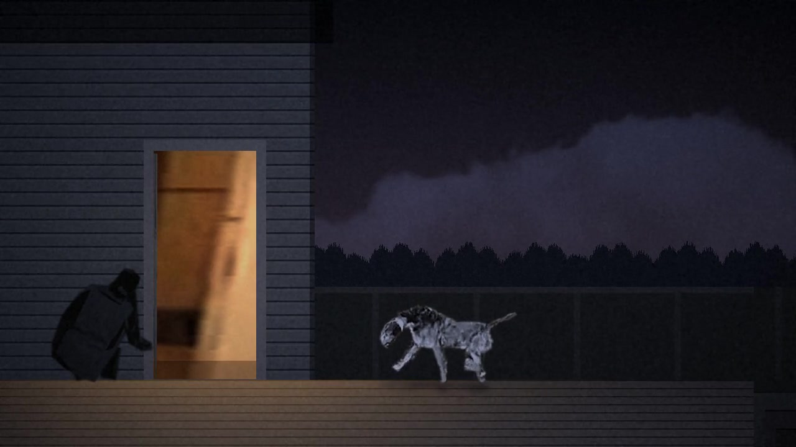
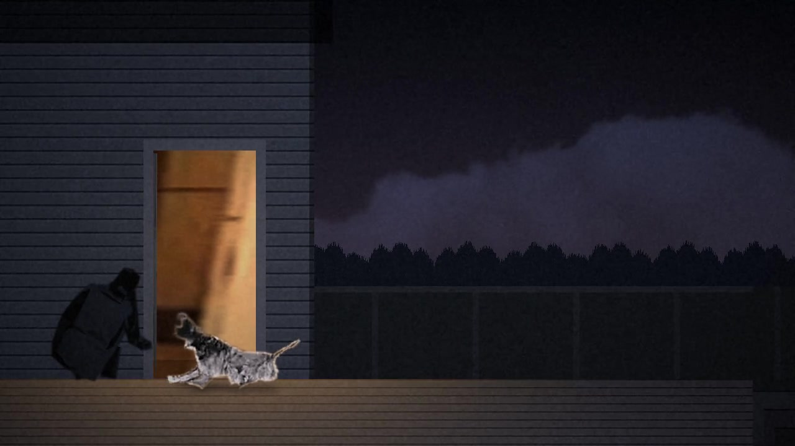
Measured from this swarm's own render (its trace) by check_handmade.py. The score's time, then the time the choice appears.
Each round is a fresh agent that sees the film, the brief and this swarm's SCION prompt, never the builder's notes, and returns a verdict and falsifiable repairs. Stopped at an independent pass.
# SCION 21 · critic round 1 · DOES NOT PASS (narrowly) A fresh, independent critic judged the film from the picture and sound only. It did not open method.md, the ledger, proof/, actor/ or build/. **Per choice (scene times)** - **Backing away:** reads. The dog faces the door at 1.0, crouches with the head down and backs right by 1.15, through 2.3. - **Turned back:** reads. Whole-body photo replacement: a front head at 3.42, a front body at 3.47–3.55, then from 3.59 a profile facing away with the head hung low. It lies from about 4.6 to 7.42. - **Turning to look:** reads. A front head on the lying body at 7.47, then a three-quarter head toward the door from 7.55 to 7.97 while the body is still down. - **Coming, head low:** reads. The head is low from 14.89, below the back for the whole approach. The fore foot holds within about 10 px at 18.00–18.62. - **Lying across the sill:** reads. Down by 24.10, with head and forelegs inside the lit frame and haunches and tail outside. - **Looking in and staying:** weak. The back-of-head artwork points into the room at 26.53–27.87, but the neck stretches upward and the head is a dark, ghosted smudge. It reads more as a lift than as a turn into depth. **Legibility:** a dog is in every frame, with no double images (the swaps are hard cuts). Weak spots: at 8.01–8.13 the back sprite jumps in size and its head reads as a pale hood, and the front sprite flips left/right at 3.51→3.55. **Language:** yes. SAM photo masks, landmark-placed parts on a body template, five angle heads and whole-body sprite replacement. The dog itself is the photograph. It is distinct from PAE-00, 16, 11, 29 and 53. Expression controls are barely visible. **Craft:** - The voices start late: each begins 0.3–0.4 s after the score's voice frame (1.3 v 1.0, 3.7 v 3.42, 7.7 v 7.42, 26.8 v 26.42), so the dog reacts before the words are heard. - Levels are fine: calls about −10 dB, soft lines −25 to −28 dB, room tone −37 dB. - The dog is a cold blue, glowing-edged cut-out against the dusk set until it reaches the door light. - The end card is accurate. **Rights:** clean. The dog is from Amateur Film New Jersey C (PD). The person, door leaf and hall are from Straight Talk (NTIS, PD), and the sky from Top of the Cloud (PD). Voices are flite synthesis. No identifiable face is shown. **Repair conditions (ranked)** 1. Move every voice onset to at or before its score frame (1.00, 3.42, 7.42, 10.42, 26.42). 2. At 26.5–28.3 the head sits level or lower, not above the neck line. The back of the head is legible at full crop (ears and skull outline), or the muzzle visibly enters the lit doorway. 3. At 8.01–8.13, match the back sprite's scale and baseline to its neighbours, or use a legible rear three-quarter view. 4. Remove the 3.51→3.55 flip. 5. Bring the dog's colour temperature and edge glow toward the set's grade outside the door light.
# SCION 21 · critic round 2 · DOES NOT PASS A fresh, independent critic (not the round 1 critic) judged the repaired film from the picture and sound only. It did not open method.md, the ledger, proof/, actor/ or build/. **Per choice (scene times)** - **Backing away:** reads. A crouch with the head dropped at 1.12–1.17, backing right through 2.3, head up at 2.42. - **Turned back:** reads. The head turns at 3.42, a front body at 3.46–3.54, then profile away from 3.58. Lying facing away about 4.75–7.42. - **Turning to look:** reads. A front head on the lying body at 7.46–7.50, a ¾ head as the body rises (7.54–7.96), a rear view at 8.00–8.12, then profile to the door from 8.17. The ¾ head at 7.54–7.62 is a muddy blob at full size. - **Coming, head low:** reads. The head is below the back from 14.83, and the fore foot holds within about 4 px at 18.00–18.17. - **Lying across the sill:** reads. Down by 24.08, with head and forelegs inside the lit frame and hindquarters and tail outside. - **Looking in and staying:** does not read. At 26.17–26.33 the front head is a pale, hollow, skull-like shape. From 26.42 to 28.4 it is a flat profile pointing left, along the wall toward the jamb and the person. There is no back of the head and no foreshortened muzzle into the hall, so it reads as looking at the person. The staying is good. A legible dog is in every frame, with no tangles and no double images. **Round 1 conditions** 1. Voices: met (onsets 0.95, 3.40, 7.40, 10.40, 26.40). 2. Look-in: not met. 3. Rear sprite at 8.01–8.13: met. 4. Flip: met. 5. Colour: largely met; the dog is now a neutral, grain-matched grey with a faint halo. **Language:** native to photo-to-actor rigging. The failure is in the angle artwork: the back-of-head view exists in the rig but is not used when it is needed. **Sound:** calls −14.7/−12.7 dB, soft lines −27.3/−27.4/−28.1 dB, room tone −37 to −41 dB. **Rights:** clean. The end card is accurate. **Repair conditions (ranked)** 1. At 26.5–28.2, viewed full-frame at 1280×720, the head reads as turned into the lit hall in depth. Either the back of the head faces the viewer (both ears and the skull outline, no muzzle profile), or the muzzle is foreshortened and points into the opening. It is not the left-pointing profile, and the change is visible as a turn at or after 26.42. 2. The front head at about 26.0–26.4 has a legible face (eyes and muzzle at full crop, no hollow pale jaw). 3. The ¾ head at 7.54–7.62 shows an eye and the muzzle, pointing toward the door side, at full crop. 4. The head settles back to resting by about 28.4, with the body lying across the sill until 31.9.
# SCION 21 · critic round 3 · DOES NOT PASS (narrowly) A fresh, independent critic (not the round 1 or 2 critic) judged the repaired film from the picture and sound only. It did not open method.md, the ledger, proof/, actor/ or build/. **Per choice (scene times)** - **Backing away:** reads. The head drops at 1.17, the dog backs right through 2.29, and the head is up at 2.42. - **Turned back:** reads. The head turns at 3.42, a front body at 3.46–3.54, then profile away from 3.58. Lying facing away 4.58–7.42. - **Turning to look:** reads. At 7.46 a front face swings round while the body is down. A ¾ head as it rises (7.50–7.96), a rear body at 8.00–8.12, then profile to the door from 8.17. - **Coming, head low:** reads. The head is below the back from 14.83, and the planted feet hold. - **Lying across the sill:** reads. Down by 24.08, legs folded. Head and forelegs inside the opening, haunch and tail outside. - **Looking in and staying:** weak. - The cut to the closer shot at 26.42, and the cut back at 28.25, keep continuity of position, pose and light. - The profile pops in one frame (26.54→26.58) to a back-of-head sprite, held unchanged to 28.04, then pops back. - Geometrically, the back of the head toward the viewer does read as looking into depth. - But there is no visible turn and no life in the hold. - Full-frame, the rear head is a flat dark silhouette with a pale contour and two large, wide-set triangular ears. It reads as a pasted cut-out, arguably a cat. A legible dog is in every frame, with no tangles and no double images. **Round 2 conditions** 1. Look-in in depth: partly met (the geometry is right, but it is a pop and reads as a cut-out). 2. Front head: met by removal. 3. ¾ head at 7.54: met. 4. Settles by 28.4: met. **Sound:** voice onsets 1.00/3.40/7.40/10.40/26.40, each before its reaction. Calls −14.4/−12.4 dB, soft lines about −27 dB. **Rights:** clean. The end card omits the back-of-head angle artwork. **Repair conditions (ranked)** 1. **Visible turn.** Between 26.42 and 26.75 the head passes through at least one intermediate view (rear-¾ or rotated profile) over 3 or more frames before the back of the head, so it reads full-frame as a turn. 2. **Rear head reads as this dog.** At 26.6–28.0: no pale contour line, tone and fur continuous with the neck, and ear size and spacing matching the dog's own rear view in source f000. It must not read as a cat or a cut-out. 3. **Life in the hold.** At 26.6–28.0 there is at least one small motion (an ear flick, a breath or a slight tilt), following the score's ear and look values. 4. **Return turn.** Coming out at 28.04–28.25 uses at least one intermediate view. 5. **End card.** It names the back-of-head angle artwork.
# SCION 21 · critic round 4 · PASS (narrow) A fresh, independent critic (not the round 1–3 critics) judged the repaired film from the picture and sound only. It did not open method.md, the ledger, proof/, actor/ or build/. **Per choice (scene times)** - **Backing away:** reads. The head drops at 1.21, the dog backs right through 2.29, and the head is up by 2.38. - **Turned back:** reads. The head turns at 3.42, a front body at 3.46–3.54, then profile away from 3.58. Lying facing away about 4.6–7.42. - **Turning to look:** reads, slightly weak. The head leads on time (a front face at 7.46 on the lying body), and a ¾ head shows as it rises. The muzzle faces the camera rather than the door until 8.17. - **Coming, head low:** reads. The head is below the back from 14.83, and the planted feet hold at 18–20. - **Lying across the sill:** reads. Down by 24.04, sphinx-like with the hind legs folded. Head and forelegs inside the lit opening, haunch and tail outside. - **Looking in and staying:** reads, narrowly. - The cut to the closer shot keeps continuity. - The profile narrows at 26.51–26.59 and turns into the back of the head at 26.63–26.72. - Full-frame, the head is level with the neck, with two pricked ears and the skull facing into the hall, away from the person, and the ruff continuous. - Weakness: the rear head is dark and slightly translucent against the dark lower hall, so its edges dissolve. A legible dog is in every frame, with no tangles or double images. **Round 3 conditions** 1. Visible turn: met. 2. Rear head reads as this dog: largely met (only the low contrast remains). 3. Life in the hold: met, faintly. 4. Return turn: met. 5. End card: met. **Sound:** voices at or just before each reaction (0.95/3.35/7.40/10.40/26.35). Calls −12.5/−11.8 dB, soft lines −26 to −27 dB, room tone −41 dB. **Rights:** clean. **Verdict:** PASS, narrowly. The narrow point touches the brief's lesson on looking in depth. The geometry and the turn are right; the remaining margin is legibility. **Polish (ranked):** 1. At 26.7–28.0, viewed full-frame, the rear head is opaque, with ear and skull edges contrasting the hall by at least 15 grey levels (for example a rim of door light). 2. At 7.50–7.96 the ¾ muzzle points toward the door (screen left), not at the camera. 3. The motion in the hold is visible at normal speed.
# SCION 21 · critic round 5 · PASS (narrow) A fresh, independent critic (not the round 1–4 critics) judged the film after the extra repair round that the round 4 narrow pass earned. It worked from the picture and sound only, and did not open method.md, the ledger, proof/, actor/ or build/. **Per choice (scene times)** - **Backing away:** reads. The head drops at 1.07–1.15, the dog backs right head low through 2.36, and the head is up by 2.5. - **Turned back:** reads. The head swings at 3.42, a front body at 3.47–3.55 (visibly smaller and brighter, a small scale jump), then profile away from 3.59. Lying facing away about 4.6–7.42. - **Turning to look:** reads. A front face on the lying body at 7.46, then from 7.55 to 7.97 a ¾ head looks back over the shoulder, muzzle to the door, with the haunches down. A rear body at 8.01–8.13, then profile to the door from 8.18. At 7.46–7.51 the face points at the camera. - **Coming, head low:** reads. The head is below the back from 14.85, and the feet step and plant. - **Lying across the sill:** reads. Down by about 24.1 with the hind legs folded. Head and forelegs inside the lit opening, haunch and tail outside. - **Looking in and staying:** reads in depth, narrowly. - The cut keeps continuity. - The profile narrows at 26.54–26.58, the back of the head shows from 26.62 against the lit hall, and it turns back at 28.04–28.08. - It reads as looking into the room, not lifting and not looking at the person. - The rear head is a smooth dark mass with tall, close-set, rounded ears, slightly rabbit-like at 26.62 and slightly cat- or teddy-like in the hold. In context, on this body, it still reads as this dog's head turned away. A legible dog is in every frame, with no tangles or double images. **Round 4 polish** 1. Opaque rear head: met (about 44 grey against the hall's 104). 2. ¾ muzzle toward the door: met from 7.55. 3. Visible motion in the hold: faintly met. **Sound:** voices at or just before each reaction (0.95/3.35/7.35/10.35/26.35). Calls −11.4/−13.3 dB, soft lines about −25 dB, room tone −37 to −42 dB. **Rights:** clean. **File:** 38.0 s, 912 frames, 9.0 MB. **Verdict:** PASS, narrowly. The narrow point touches the brief's lesson on looking in depth: the geometry and timing are right, but the rear head is only marginally dog-like. **Operator note:** the round 4 narrow pass already received its one extra repair round under the doctrine. This second independent pass closes the swarm at five critic rounds. The remaining polish is recorded and is not pursued. **Polish (not pursued):** 1. Rear-head ears as wide-set and triangular as in source f000, with fur texture continuous with the neck. 2. The rear sprite at 26.62 no narrower than at 26.67. 3. The front body at 3.47–3.55 within 10% of the profile body's height. 4. The front face at 7.46–7.51 angled toward the door.
method · every asset and its rights · ledger of attempts · build · the prompt
The puppet is never animated frame by frame: it is performed, and the performance is a file of takes.
A digital felt the swarm made (a synthesized fibre texture, fuzzy cut edges, drop shadows between layers, running stitches), cut into named groups exported like a PSD puppet, with swap sets for the views: side, three-quarter and back bodies; profile, front, back three-quarter and back heads. The person and the place are made the same way; no kit or archive material is used.
Moved byA small runtime with Character Animator's behaviours: triggers, view swaps that cut rather than tween, gaze snapping to named targets, blink and breathe, dangle physics on the ears, tail and ponytail, planted-foot walking, and lip sync of the person from the voice track into the twelve standard mouth shapes. The dog's acting is five layered takes of timed control tracks; the end card says no camera or live performer exists here.
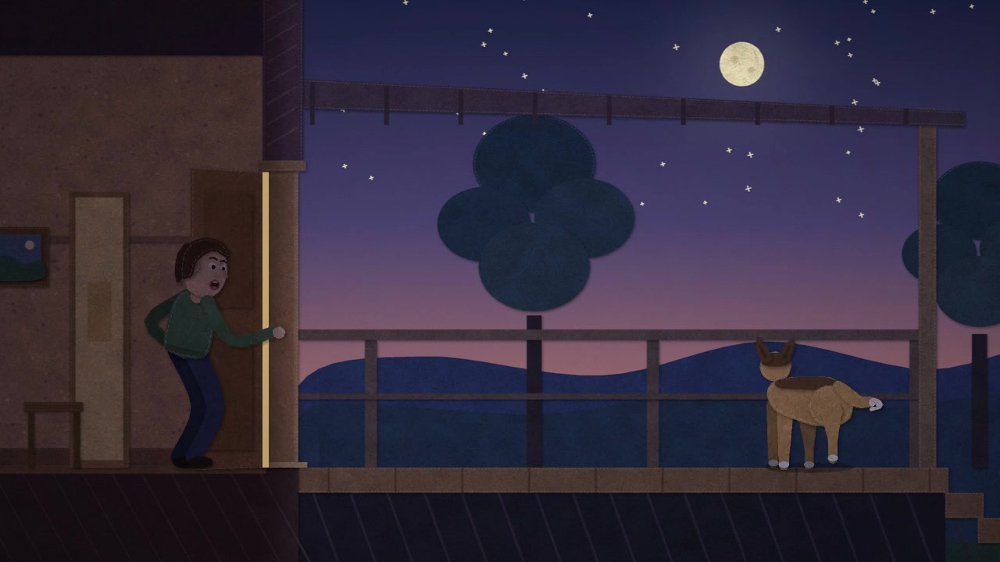
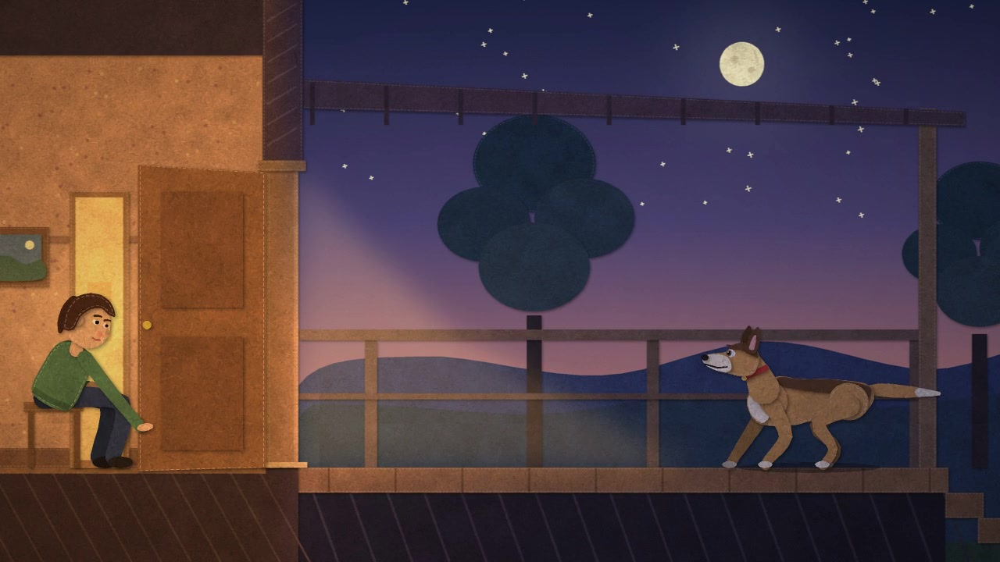
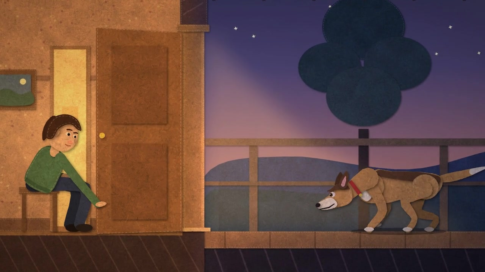

Measured from this swarm's own render (its trace) by check_handmade.py. The score's time, then the time the choice appears.
Each round is a fresh agent that sees the film, the brief and this swarm's SCION prompt, never the builder's notes, and returns a verdict and falsifiable repairs. Stopped at an independent pass.
# SCION 22 · critic round 1 · PASS A fresh, independent critic judged the film from the picture and sound only. It did not open method.md, the ledger, the takes, puppet/, proof/ or build/. **Verdict: PASS.** Every choice reads: - **Backing away (1.00 s):** reads. - **The refusal turn (3.58 s):** passes through the back of the head, a rear quarter and the rump, then lies turned away. - **Turning to look (7.42–7.46 s):** the head leads, muzzle toward the door, while the body is down. - **The approach:** the head stays low. - **Lying:** across the sill, with the haunch and tail outside. - **Looking in (26.62–28.17 s):** the back of the head faces the viewer and the muzzle points away into the room. There is a dog in every frame, with no double images. **Language:** yes, and the dog itself is made in it. It is a layered felt puppet that acts by swapping parts between views, with visible lip sync, gaze, dangle and planted feet. Live capture is absent and the end card says so. It is materially distinct from 24, 25 and PAE-00. **Sound:** the soft voice is about 11 dB below the calls. **Rights:** clean; everything was made here. **Non-blocking repairs, not pursued** (stopped at an independent pass, per the SCION doctrine): 1. The folded hind legs zigzag when lying. 2. The look-in's depth rests only on the back-of-head view. 3. A floating head at 8.25–8.33 s. 4. No visible dog blink or breath in the watch. 5. The person's face is dark during the first call.
method · every asset and its rights · ledger of attempts · build · the prompt
The head leads because it plays on its own track over the body; the end card draws the real track timeline.
Painted game-art parts made in code (tan coat, dark saddle, banded gouache shading, brush strokes, a broken outline) packed into one texture atlas of 46 regions: seven head views, four body views as weighted meshes, ears, and lit and shaded leg segments. The set and the person are painted the same way; all sound is synthesized.
Moved byA Spine-shaped skeleton JSON (28 bones, 20 slots in draw order, four two-bone IK legs) and a library of ten action clips (idle, cringe-back, turn-away, lie, look-back, rise, stalk-walk, lie-across, look-in, settle), mixed by a runtime written here on a body track with a head track layered over it. Turns are attachment swaps and slot reorders through 0, 45, 90 and 135 degree views.
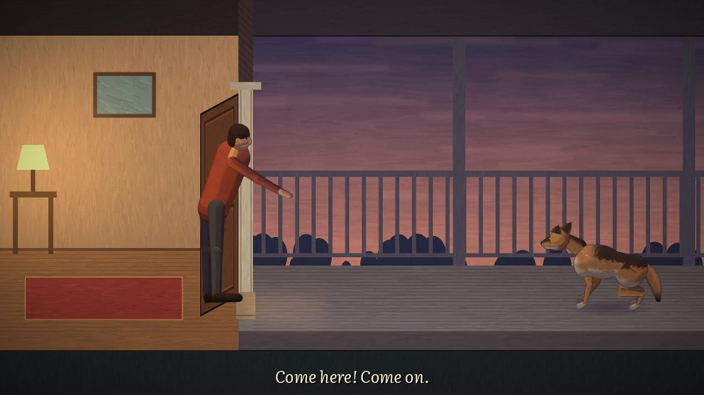
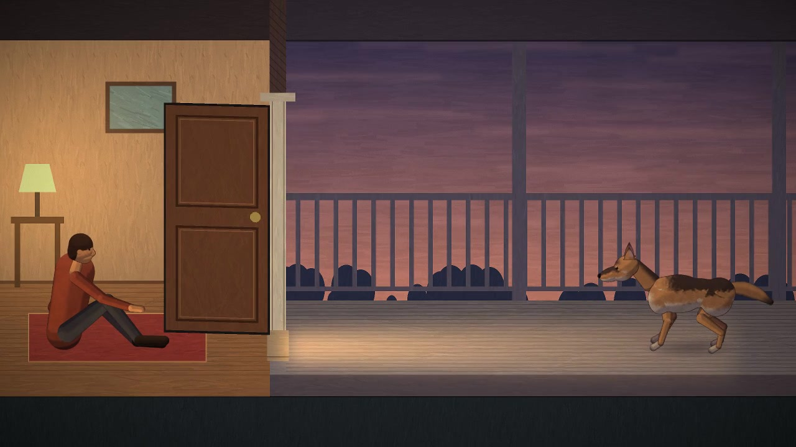
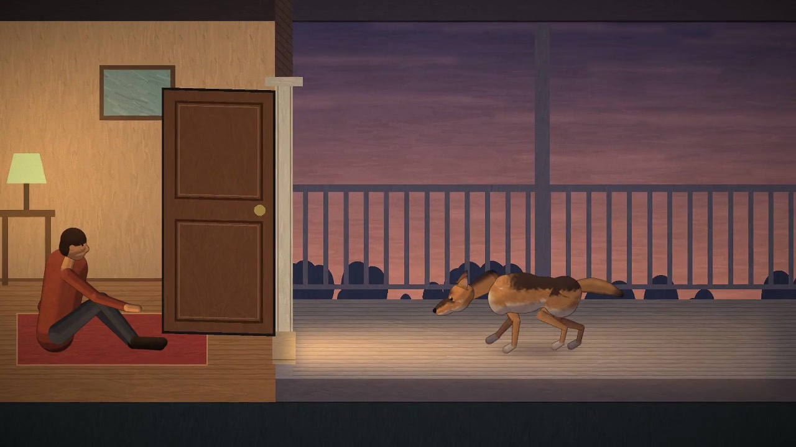
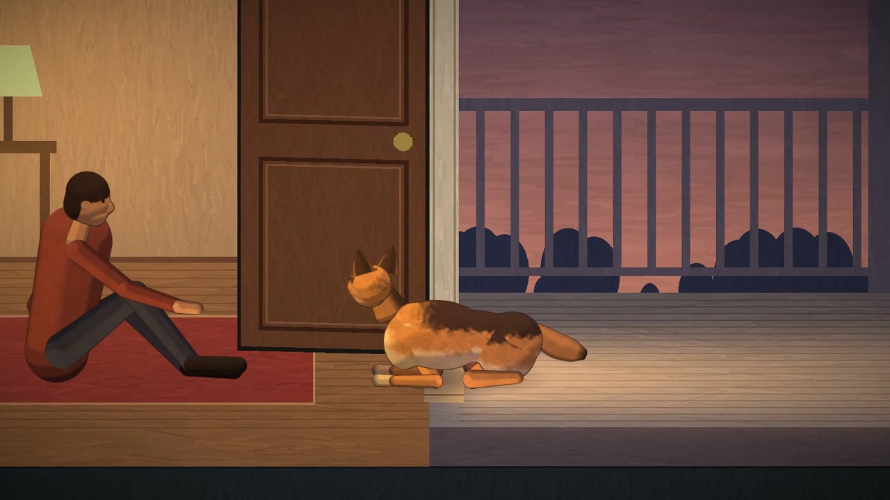
Measured from this swarm's own render (its trace) by check_handmade.py. The score's time, then the time the choice appears.
Each round is a fresh agent that sees the film, the brief and this swarm's SCION prompt, never the builder's notes, and returns a verdict and falsifiable repairs. Stopped at an independent pass.
# SCION 23 · critic round 1 · PASS (narrow) A fresh, independent critic judged the film from the picture and sound only. It did not open method.md, the ledger, proof/, actor/ or build/. **Per choice (scene times)** - **Backing away:** reads. A crouch facing the door, backing right from 1.04 to 2.38 with the forelegs braced. - **Turned back:** reads. The turn starts at 3.58 and passes through a 3/4 front view (3.75), a rear view (3.92–4.00), then profile away (4.08). Lying facing away from about 4.6 to 7.46. - **Turning to look:** reads. The head starts at 7.50, the back of the head shows at 7.54–7.58, and the muzzle points at the door by 7.67 while the body is lying. The body rises from 7.83 through a rear view into profile toward the door at 8.46. - **Coming, head low:** reads. Below the back from 14.75 through 23.7, with paws holding while planted. - **Lying across the sill:** reads. Down by 24.1. Head, neck and folded forelegs inside the jamb; hindquarters and tail on the porch. - **Looking in and staying:** weak. From 26.88 to 28.6 the back of the head shows, which meets the brief's allowance. But at full frame it reads as a raised round blob with ears, more a prick-up than a look through the door. It settles at 28.75 and stays. A legible dog is in every frame, with no pops that read as swaps. Near-tangles: the forelegs look disconnected at 3.92, and the head floats on the back with no neck at 7.83–8.25. **Language:** attachments from a painted atlas swapped across 0/45/90/135 views with slot reordering, IK legs, and body plus head tracks. The tube legs give a slight wooden-toy look, but what the viewer sees is painted regions changed by attachment swaps. It is distinct from PAE-00; the leg tubes are its closest overlap, with 33. **Craft:** - Dowel legs with joint seams. - The floating head at 7.83–8.25. - Disjointed forelegs at 3.92. - The ambiguous look-in head. **Sound:** voices lead every reaction. Calls −19 to −19.5 dB, soft voice −29 dB, "Come in" −27.5 dB, room tone −53 dB. The paw falls are faint. The end card's track timeline matches the picture. **Rights:** clean. **Verdict:** PASS, narrowly. The narrow point (the look-in) touches the brief, so under the doctrine the swarm gets one more repair round. **Repair conditions (ranked)** 1. Between 26.9 and 28.5, at full frame, the muzzle or a 3/4-rear head visibly points through the open doorway into the lit room; it is not a round blob rising. Head height stays at or below the ears' level at 26.4. 2. From 7.83 to 8.25 a neck visibly connects the head to the shoulders. 3. At 3.92 all four legs visibly attach to the torso. 4. The leg segments taper, with no visible dowel seams at the knee or hock.
# SCION 23 · critic round 2 · PASS (narrow) A fresh, independent critic (not the round 1 critic) judged the film after the extra repair round that the round 1 narrow pass earned. It worked from the picture and sound only, and did not open method.md, the ledger, proof/, actor/ or build/. **Per choice (scene times)** - **Backing away:** reads. The head drops and the body crouches at 0.92–1.08, then backs right, braced, to 2.33. The call starts at 0.9. - **Turned back:** reads. Through 3/4 (3.72–3.84) and a full rear view (3.92–4.01) to profile away at 4.09. Lying facing away by 4.85, held to 7.42. - **Turning to look:** reads. The ears rise at 7.46 and the back of the head shows at 7.50–7.62. The muzzle points at the door by 7.67–7.71 while the body is flat. The body rises at 7.83. - **Coming, head low:** reads. Below the back at 14.67–14.75 through 23.7. - **Lying across the sill:** reads. Down by 24.10. Head, neck and folded forelegs inside the jamb; hindquarters and tail on the porch. - **Looking in and staying:** reads, narrowly. - From 26.62 the head turns to a 3/4-rear view by 26.78: dark backs of both ears, the far eye half hidden, the muzzle angled away into the room. Held to about 28.6, settling by 29.0. - It is not a lift. - At full frame it reads as turning away into the room, but the angle is shallow (about 45°) and the muzzle is level with the person's low hand. A legible dog is in every frame, with no tangles. **Round 1 conditions:** look-in met; neck at 7.83–8.25 met; legs at 3.92 met; tapered legs partly met (blunt joint overlaps remain). **Language:** a genuine skeletal runtime. Painted atlas regions are swapped across views with slot reordering, plus IK legs and two mixed tracks. The end card's timeline matches the picture. **Sound:** voices lead every reaction. Calls −19.5/−18.6 dB, soft voice −28.9/−30.6 dB, "Come in" −26.7 dB, room tone −53.5 dB. The paw falls are barely audible. **Rights:** clean. **Verdict:** PASS, narrowly. The look-in now meets the brief's own allowance (the back of the head toward the viewer, the muzzle into the room). **Operator note:** the round 1 narrow pass already received its one extra repair round under the doctrine, and this second independent pass closes the swarm. The remaining polish is recorded and is not pursued. **Polish (not pursued):** 1. A deeper head turn, about 135°, so the gaze goes past the person's hand. 2. No seams at the knee and hock. 3. Audible paw falls.
method · every asset and its rights · ledger of attempts · build · the prompt
Gaze, head and body are three separate decisions, and the dog makes them in that order.
A parametric rig written from scratch (no Cubism software here): 17 parameter axes in the Live2D style; a head keyform table of 16 yaw by 5 pitch keys over named landmarks, blended bilinearly; body art meshes with saddle, blaze and belly markings on a chain of rotation deformers; eye, brow and mouth controls; the coat studied by eye from the archive dog. The person is a small rig in the same language; the house is drawn in cross-section.
Moved byThe eyes move first, the head two or three frames later, the body last. Both turns pass through a chest-facing view rather than a mirror flip, the head leading; a stepping solver keeps paws fixed until they must step; pendulums drive the tail, ears and tag. The camera zooms about fixed points, with a portrait of the dog while it considers.


Measured from this swarm's own render (its trace) by check_handmade.py. The score's time, then the time the choice appears.
Each round is a fresh agent that sees the film, the brief and this swarm's SCION prompt, never the builder's notes, and returns a verdict and falsifiable repairs. Stopped at an independent pass.
# SCION 24 · critic round 1 · PASS Independent critic (fresh agent; frames every 0.5 s plus every frame through both turns and the look-in; verdict from the picture before any builder notes). All six choices read: backing away (crouch at 1.04, moves away facing the door, legs moving); turned back (3.54–3.79, rump to the door by 3.79, held to 7.4; lumpy for 3 frames at 3.625–3.708 where the muzzle merges into the chest and the front legs cross); turning to look, the best passage (the head comes round first, frontal at 7.71, over the shoulder 7.79–8.29 while the body still faces away, the body following through a narrow frontal view: gaze and body clearly separate); coming head low (under the back line from 15.0, paws step); lying across the sill (forequarters inside the frame, tail outside, chin on paws); looking in and staying, weak (starts ~26.9, about 0.5 s after the cue; from 27.1 the back of the head to the viewer and the muzzle into the room, a real turn in depth, but the jamb post cuts through the head). Bottom-up, with a caveat: art meshes on deformers, head-angle keyforms, blinks and brows, pendulums on ears and tail; the body squashes like a 2D deformer, not a rendered model with a style on top; plainly not the PAE-00 cut-out. The head keyforms were projected once from a landmark turnaround: a maquette used only as a guide, which the brief allows. The swarm's signature, the head turning in volume, is never shown in its own close-up (10–13.5 is a static profile). Defects: the lumpy frontal turn frames; the look-in half hidden by the jamb; the static close-up; legs held mid-stride while standing; the door opening silent; joint circles visible on the thigh. Soft voice ≥8.7 dB under the calls, well above room tone. Rights clean as declared. Remaining (not pursued: stopped at an independent pass per the SCION doctrine): a ≥30° head turn with the eyes leading in the 10–13.5 close-up; the look-in head ≥80% clear of the jamb, starting by 26.65; clean frontal turn frames; an audible latch at 6.2.
method · every asset and its rights · ledger of attempts · build · the prompt
The score is played into the puppet as inputs; the dog's choices come out of its own state machine.
An artboard of capsule shapes bound to bones: a two-capsule torso with tuck-up, neck, skull, muzzle, curved-triangle ears, a five-segment tapered tail and four two-bone IK legs, with the coat pattern clipped to the torso. Keyed poses (stand, crouch, lie, rest, look in) and looping clips (breath, wag) are mixed by 1D blend states. The house is drawn in section under an oblique camera. Proportions were studied from a public-domain home movie; no archive pixels are used. Rive itself was not available, so the swarm wrote a small runtime with Rive's primitives.
Moved byTyped inputs (numbers, triggers, a boolean) feed three layered state machines: Facing, Body and Attention. Only Facing may rotate the body, and both turns go through the dog's front. A stepping solver plants each foot until its home moves too far, and the head layer leads the body round at 7.46 s.
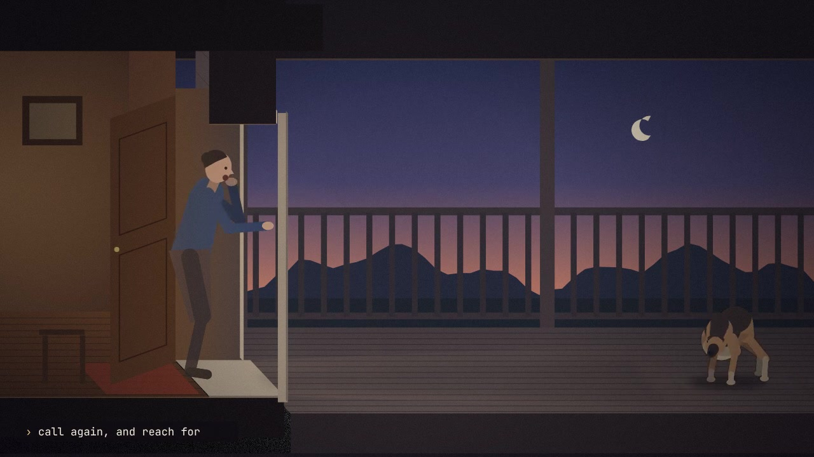
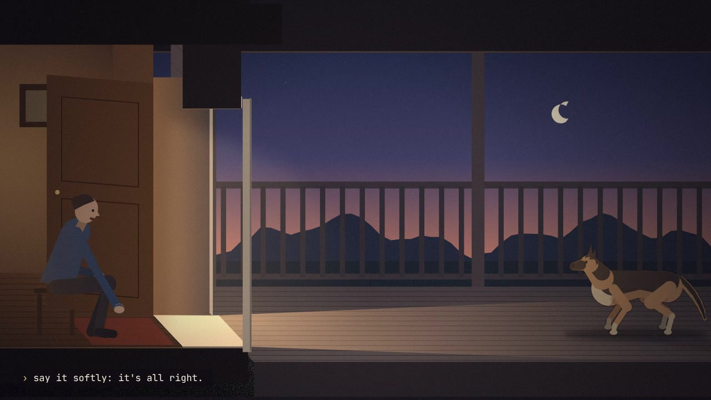
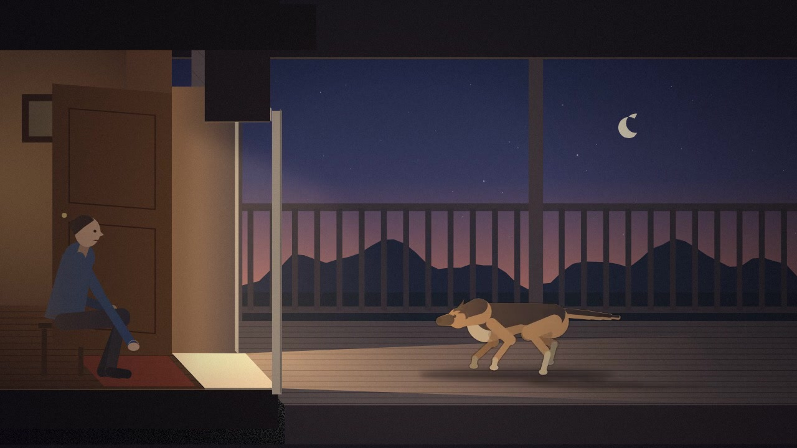

Measured from this swarm's own render (its trace) by check_handmade.py. The score's time, then the time the choice appears.
Each round is a fresh agent that sees the film, the brief and this swarm's SCION prompt, never the builder's notes, and returns a verdict and falsifiable repairs. Stopped at an independent pass.
# SCION 25 · critic round 1 · PASS A fresh, independent critic watched the film. It had the BRIEF and the SCION prompt, and saw none of the builder's notes. **Verdict: PASS.** All four invariants hold. There is a dog in every frame, including both turns. The changed circumstances (the person sitting from 5.5 s, the door opening at 6.2 s with its pool of light, the low hand) are all visible before the approach. The head leads the body by about 0.6 s at 7.46 s. **Language.** The dog is an authored puppet, built from capsule shapes bound to bones, IK legs and a jointed tail. Those are Rive's own primitives, not a 3D maquette with a style laid over it, so the film meets the "dog made in your language" lesson. Head and body move on separate layers, the views are blended through the turns, and the feet are planted. It is fundamentally different from the PAE-00 paper cut-out. **Rights.** Clean. Everything is the swarm's own work, with proportions studied from *Amateur Film New Jersey C* (public domain) and no archive pixels used. Sound is synthesized; the fonts are OFL. **Non-blocking repairs, not pursued:** the critic gave an independent pass, so per the SCION doctrine the swarm stopped here. 1. "Come in" is 5.7 dB below the first call (mean), just under the brief's 6 dB. 2. The door creak is the loudest sound in the film. 3. The look-in during 26.4–28 lifts slightly toward the seated person. 4. During the approach, the top of the skull rises level with the withers. 5. The first turn takes only four frames.
method · every asset and its rights · ledger of attempts · build · the prompt
Hundreds of small fragments, texture-batched, are held together into one animal by masks and render-texture passes.
966 fragments in one 2048 px texture atlas, cut from public-domain archive shots in the kit (coat from the archive dog's own masks, pale fur from a lion, dark ears from a tiger), Quick, Draw! drawings and own work; atlas.json records each fragment's source, frame, crop and mask.
Moved byPixiJS 7.4.2 in headless Chromium: six depth layers, an alpha mask cut to the door, five render textures per frame (dog body, dog head, person, light, stage), a threshold-and-outline shader that turns fragment clouds into a silhouette, and a grain pass; 31 draw calls a frame. The fragments are posed each frame on a skeleton with planted feet.
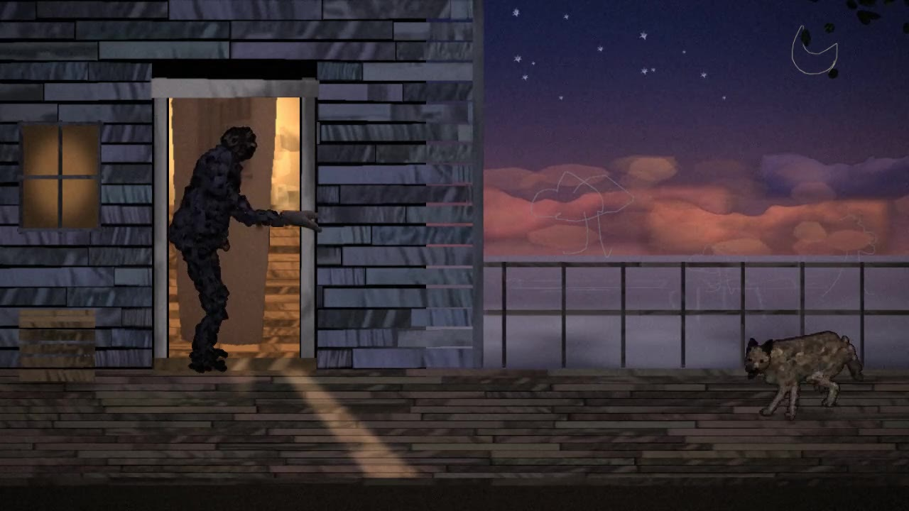
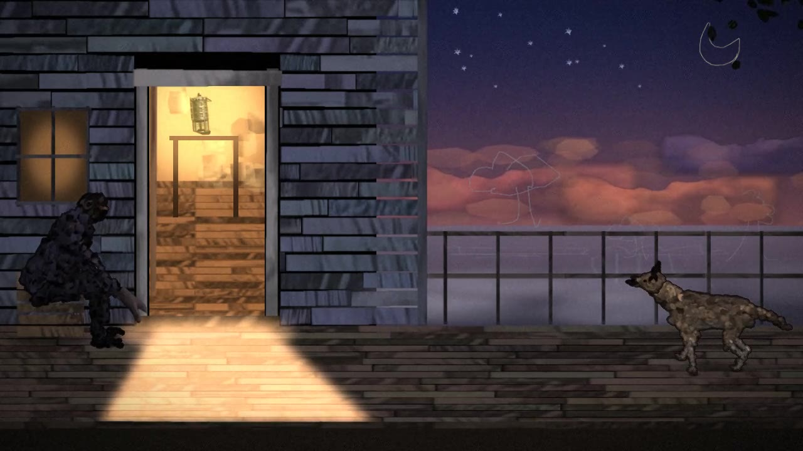
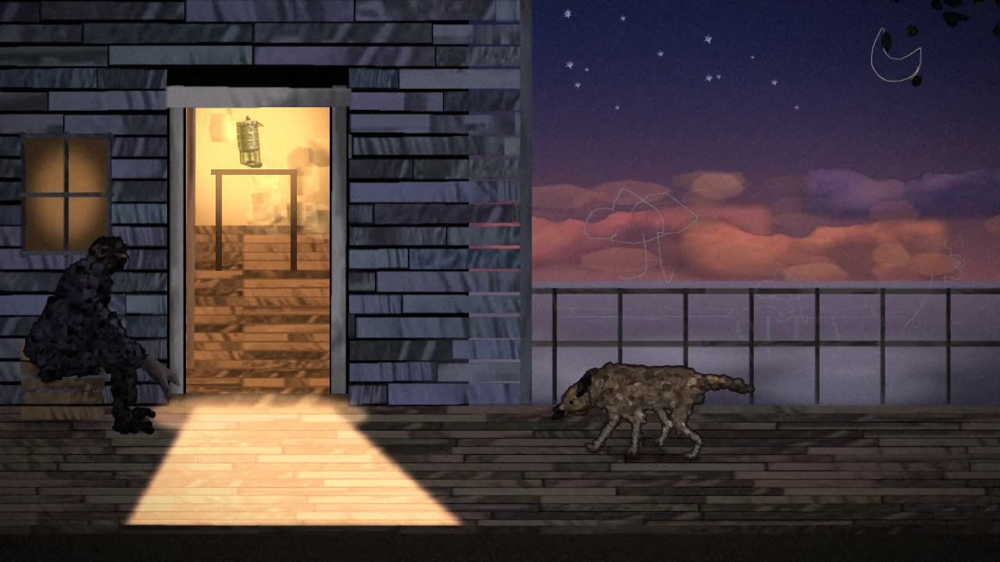
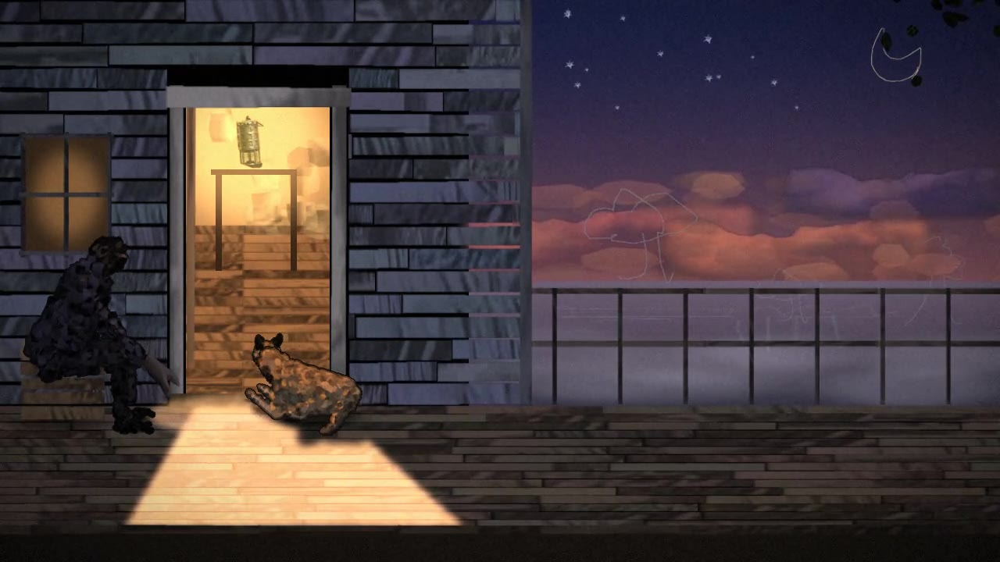
Measured from this swarm's own render (its trace) by check_handmade.py. The score's time, then the time the choice appears.
Each round is a fresh agent that sees the film, the brief and this swarm's SCION prompt, never the builder's notes, and returns a verdict and falsifiable repairs. Stopped at an independent pass.
# SCION 26 · critic round 1 · DOES NOT PASS (narrowly) A fresh, independent critic judged the film from the picture and sound only. It did not open method.md, the ledger, proof/ or build/. **Per choice (scene times)** - **Backing away:** reads. The dog crouches at about 1.1 and backs away right, still facing the door. The head comes back up to watch by about 2.4. - **Turned back:** reads, as a profile turned away. The turn runs 3.62–3.79 through a foreshortened front view. The dog faces away from 3.8 and crouch-lies by about 4.6. - **Turning to look:** weak. The head starts on time (7.54–7.58), but at 7.58–7.79 the muzzle points at the viewer, not the door, and the body rises at the same moment. The muzzle reaches the door only at about 8.2, with the dog standing. - **Coming, head low:** weak. The ears sit level with the back and the muzzle a little below it. By 23.6 the head is level or raised. - **Lying across the sill:** reads, with two reservations. The forelegs fold at about 24.06 (+0.27 s), and the dog lies parallel to the door in front of the sill rather than across it in depth. - **Looking in and staying:** reads in depth. From about 26.5 to 28.1 the back of the head and the ears face the viewer, into the lit room. This is the strongest passage. **Tangles:** at 7.58–7.62 the twisted body becomes a bear-like lump. At 7.67–7.79 a front-facing head sits over a side-on body with crossed legs. Otherwise the fragment coat reads as one mottled animal at full speed, not confetti. **Language and material:** built in the swarm's language, from atlas fragments, masks, render textures and a threshold-plus-outline filter. The dog itself is made of fragments cut inside the archive dog's masks. It stays clear of the "tiles poured into an outline" failure because the silhouette comes from the fragments themselves. It is distinct from 01, 43, 49 and 27. **Craft:** - The dog's shadow is a shapeless dark wedge. - Footsteps are inaudible: the walk window measures −26.7 dB max, the same as room tone. - The calls sit at about −16/−15 dB and the soft voice at about −32/−31 dB. **Rights:** every source is public domain with an archive id, own work, Quick, Draw! (CC BY 4.0, key_ids kept), or OFL fonts. The per-fragment record lives in build/atlas/atlas.json; assets.json maps each prefix to its source. **Repair conditions (ranked)** 1. From 7.46 to 7.71, while the shoulders are still within 10% of their lowest height, the muzzle points toward the door (screen left) in at least 4 consecutive frames. 2. No frame in 7.55–7.85 shows a front-facing head over a side-on body with crossed legs. 3. Over 14.7–23.8, the top of the head stays below the top of the back in at least 90% of frames. 4. The visible fold of the forelegs starts by 24.04. 5. Paw contacts measure at least 6 dB above room tone during the walk.
# SCION 26 · critic round 2 · PASS A fresh, independent critic (not the round 1 critic) judged the repaired film from the picture and sound only. It did not open method.md, the ledger, proof/ or build/. **Per choice (scene times)** - **Backing away:** reads. A crouch at 1.08–1.17, backing right head low while facing the door, head up by 2.42. - **Turned back:** reads. The turn passes through a front view (3.62–3.71) and a rear three-quarter (3.75). Profile away by 3.83, lying facing away 5.0–7.4. - **Turning to look:** reads. The head lifts at 7.46–7.50, and from 7.54 to 7.79 the muzzle points at the door while the body is flat. The body rises at 7.83–8.0 looking back over its shoulder and stands facing the door by 8.54. - **Coming, head low:** reads, slightly weak late on. The head drops at 14.67, and the muzzle stays well below the back. The ear tips are level with the back at 22.0–23.5. - **Lying across the sill:** reads. The forelegs bend from 23.92 and the body pivots into depth. Head and forelegs are inside the door width; rump and tucked tail are past the right jamb. - **Looking in and staying:** reads in depth. From 26.50 to 28.1 the back of the head and both ears face the viewer, turned into the lit room. It holds to 31.9. A legible dog is in every frame. There is one brief ambiguous lump at 7.83–7.96 as the dog rises, but the head stays a head. **Round 1 conditions:** all met. 1. The muzzle points at the door in six consecutive frames, 7.54–7.75. 2. No front-facing head over a side-on body. 3. Head below the back: met at the threshold, by eye. 4. The forelegs fold at 23.92–23.96. 5. Paw peaks are −19 to −25 dB against about −32 dB in the event-free bins. **Sound:** calls at −16.7/−15.8 dB, the soft voice at about −31 dB (14–15 dB under), and a door sound at about 6.0. **Language:** the dog is a coat of cut archive fragments composited through render textures and a threshold-plus-outline filter. Its silhouette comes from the fragments, and at full resolution it reads as one mottled animal, not confetti. **Rights:** public-domain archive sources, Quick, Draw! (CC BY 4.0, credited), own synthesized material and OFL fonts. **Polish (not blocking):** 1. Keep the ear tips at least 3 px below the back over 14.7–23.8. 2. Separate the tail and rump from the head at 7.83–8.0. 3. Move the title-card subtitle at least 40 px in from the right edge. The shadow is still a soft wedge, and the two-dot eyes at 7.8–8.3 look slightly cartoonish.
method · every asset and its rights · ledger of attempts · build · the prompt
The film is a pure function of its description: render it twice and every frame is the same.
Real Remotion 4 with React, installed in the folder: the score compiled into a typed manifest, one record per frame, that fails on any missing value; frame-pure React components that draw each frame as SVG from its record alone; a dog of 34 tapered capsules and two ear triangles on a 3-D joint graph, its proportions the medians of the archive dog's rig keys; a matte composition of the same dog for measurement. All sound synthesized as events.
Moved byPosition along the porch is exactly the score's x; a stepping solver keeps each paw fixed until a step carries it; capsules seen end-on are discs, so both turns pass through the face. Ten frames rendered twice give identical hashes. The licence tier for Remotion's free use is flagged for the operator to confirm.


Measured from this swarm's own render (its trace) by check_handmade.py. The score's time, then the time the choice appears.
Each round is a fresh agent that sees the film, the brief and this swarm's SCION prompt, never the builder's notes, and returns a verdict and falsifiable repairs. Stopped at an independent pass.
# SCION 27 · critic round 1 · PASS Independent critic (fresh agent; frames every 0.5 s and every frame in the turn and look-in windows, full-resolution crops; the build inspected only afterwards, to judge the language). All six choices read on time: backing away (crouch facing the door, drifts away; a hunched lump with the head sunk at 1.4–2.0); turned back (a true frontal view 3.62, three-quarter 3.71, faces away by 3.79, lies facing away from 4.5 as the score has it, to 7.4); turning to look (the head swings round at 7.54; one blob frame at 7.71; frontal/three-quarter facing the door 7.79–7.88); coming head low (below the back line ~14.6–23.5); lying across the sill (a true sphinx lie, forelegs and head inside the jamb, hip and tail out on the porch); looking in and staying, in depth (the back of the skull to the viewer, the muzzle into the lit room, 26.5–27.4). A dog in every frame; no edge-on collapse. Language: built bottom-up in the pipeline: a typed manifest compiled from the score, frame-pure React/SVG components, a camera module, seeded randomness, synthesized audio events; no Math.random, Date.now or effects in the source. The dog is a 3-D capsule joint graph, but the capsules are the drawn primitive itself, typed components evaluated per frame, not a guide with a style poured over it: native for a swarm whose language is the pipeline. Its weakness: the look is generic flat vector; the proof lives in determinism and data, not in the image. Fundamentally different from PAE-00. Defects: the approach 14.7–23.8 is effectively silent (~−51 to −58 dB RMS, no audible paws, though the builder reports paw plants as sound events); bulky bear-like hindquarters when crouched and passing the person; blob frames at 1.4 and 7.71; the "Come in." caption nearly illegible; a faceless person. Soft voice ~11–12 dB under the calls, ~25 dB above room tone. Rights: everything made here; Remotion's bundled licence confirms a free tier for individuals, non-profits and companies of up to 3 employees; whether Bolas qualifies needs an operator decision. Reproducibility claimed on one machine only; the lockfile lives only in the git-ignored cache. Remaining (not pursued: stopped at an independent pass per the SCION doctrine): audible paws through the approach; head and muzzle separate from the body at 1.2–2.3 and 7.6–7.8; a readable "Come in." caption; a committed lockfile and a second-machine hash check; an operator ruling on the Remotion licence. Operator ruling (Remotion licence): the operator is an individual, so the free tier applies. Recorded here; no change to the film.
method · every asset and its rights · ledger of attempts · build · the prompt
Plates from different films are pinned, held out and lit until they share one shot, and the dog performs by animating its masks.
Public-domain archive plates from the kit: Amateur Film New Jersey C (the dog, the facade and porch, stabilised and median-stacked into a clean plate), Straight Talk (door, room and standing person), Survival Stresses (the seated person) and Door to Heaven (1941, the arm). One standing dog frame is split by masks into body, legs and head; six of the dog's own turn frames carry the turns.
Moved byA layer compositor written for the film: keyframed bezier masks with feather and expand, parented transforms, corner pins from one locked camera, an inverted camera track, holdout mattes at the door frame and sill, luma keys, roto, and one door-light function lighting floor, sill, dog and person. The score drives the dog's root track; feet lock to the floor by distance travelled.
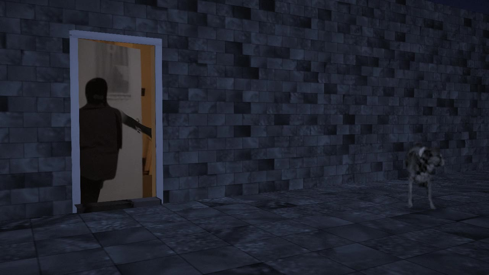
Measured from this swarm's own render (its trace) by check_handmade.py. The score's time, then the time the choice appears.
Each round is a fresh agent that sees the film, the brief and this swarm's SCION prompt, never the builder's notes, and returns a verdict and falsifiable repairs. Stopped at an independent pass.
# SCION 28 · critic round 1 · DOES NOT PASS A fresh, independent critic judged the film from the picture and sound only. It did not open method.md, the ledger, proof/ or build/. **Per choice (scene times)** - **Backing away:** reads. 1.0–2.4: the dog faces the door and travels right with a stride. - **Turned back:** weak. Real archive turn plates at 3.46–3.92 are soft: 3.46 has no legible head and 3.875 shows a ghosted double head. The dog is in profile away by 3.96 and lies from 4.5, but it reads as a lumpy heap rather than a back. - **Turning to look:** weak. The head moves at 7.50 and the muzzle points at the door while the body is down, but the head sits on the hips, like a second animal on the dog's back. - **Coming, head low:** reads. The head snaps low (14.667→14.708) and stays below the back through 23.6, with no clear sliding at 18–20. - **Lying across the sill:** weak. The dog lies parallel to the wall across the doorway, so inside and outside cannot be told apart. No tail is visible, there is a seam mid-body at 24.5, and the legs only partly read as folded. - **Looking in and staying:** weak. A dark back-of-head plate at 26.5–28.2 points into the room but is separated from the body by a gap with room light showing through (27.0). **Not a legible dog in every frame:** - 3.46: no head. - 3.875: double head. - 7.5–7.9: the head displaced onto the hips. - 8.0–8.42: two heads at once. **Language:** a genuine composite built bottom-up: a tracked median clean plate, corner-pinned door and room, roto and luma-keyed people, holdout mattes and a light pass. The dog is native to the idea, and it is distinct from 11, 29, 31, 45 and 53. But the bar (no edge halos, stable matte boundaries, grain and light agreeing) is not met on the dog. **Craft:** - The dog is cool, over-bright and haloed with no contact shadow in the dusk section. - A dashed white matte line runs along the sill. - The wall is a tiled block mosaic, and the room floor reads like stairs. - The person is a different body in each stage. - The arm is static and kinks at the shoulder. - Audio passes: calls at about −23 dB, the soft voice at −35 to −38 dB, room tone −53 dB. **Rights:** OK. Amateur Film New Jersey C, Straight Talk (NTIS), Survival Stresses and Door to Heaven (1941) are all public domain per the kit. Identifiable people come only from PD films. **Repair conditions (ranked)** 1. At 8.0–8.45 only one head is visible. 2. From 7.46 to 8.0 the look-back head attaches at the neck end of the lying body, not on the hips. 3. At 3.46–3.92 each frame shows exactly one legible head, with no ghosting. 4. From 24 s the dog lies across the sill, not along it: a clear part of the body past the jamb inside, the tail visibly on the porch outside, and no mid-body seam. The look-in head joins the neck with no gap. 5. Before the door light, the dog's luma, edge softness and contact shadow match the porch (no halo), and the dashed matte line on the sill is gone.
# SCION 28 · critic round 2 · PASS (narrow) A fresh, independent critic (not the round 1 critic) judged the repaired film from the picture and sound only. It did not open method.md, the ledger, proof/ or build/. **Per choice (scene times)** - **Backing away:** reads. 0.92–2.42: the dog faces the door and walks right with a real stride. - **Turned back:** reads, but soft. Profile at 3.46, a soft frontal view at 3.58–3.79, profile away by 3.96. Lying head away 4.5–7.4. - **Turning to look:** weak. The head comes up at 7.50, one head at the neck end of the lying body. But the face is frontal, toward the camera, from 7.50 to 8.29. The muzzle points at the door only from 8.33, standing. - **Coming, head low:** reads. The head drops at 14.708 and stays below the back through 23.7, striding with a contact shadow and no slide. - **Lying across the sill:** weak to reads. - Flat from 24.0, with the front against the lit opening and the tail on the porch past the right jamb. - It still lies along the wall, and the rear overlaps the jamb in front, so nothing reads as past the threshold. - The legs are only partly folded. - **Looking in and staying:** weak to reads. A dark back-of-head plate (26.54–28.2) faces the room and joins the body with no gap. It reads in depth, but as a head it is a featureless smear, with no ears or skull. A legible dog is in every frame, soft and dim in the dusk. There are no tangles or double heads. **Round 1 conditions** 1. One head at 8.0–8.45: met. 2. Look-back head at the neck end: met. 3. One legible head at 3.46–3.92: largely met. 4. Across the sill: partly met (tail outside, no seam, no gap; still along the wall). 5. Dusk match and sill line: met. **Language:** a genuine compositor's film. A tracked median clean plate, corner-pinned door and room, a rotoscoped person and luma-keyed arm, a computed door-light pass, and a dog of masked archive part plates on a root track. **Craft:** - The dog stays cool grey in the door light. - The arm is long and pale. - The wall reads as a mosaic. - The end card's "dog holdout" never visibly cuts the dog. **Sound:** calls −23.2/−23.7 dB, soft voice −38.2/−37.1 dB, room tone −53.4 dB. **Rights:** OK. Amateur Film New Jersey C, Straight Talk (NTIS) and Door to Heaven (1941) are public domain. **Verdict:** PASS, narrowly. The narrow points touch the brief (across the sill, the look-back direction, the look-in head), so under the doctrine the swarm gets one more repair round. **Repair conditions (ranked)** 1. From 24.0 a clear part of the body sits past the jamb line. The sill holdout or the jamb visibly occludes the dog at least once, and the tail stays on the porch. 2. From 7.50 to 8.0 the muzzle visibly points toward the door (screen left), not at the camera, while the body is still down. 3. From 26.5 to 28.2 the look-in head has a readable skull and ear silhouette, not a dark smear. 4. Inside the door-light cone (from about 22 s) the dog picks up a warm tint. 5. From 24 s the hind legs read as folded under the body.
# SCION 28 · critic round 3 · PASS (narrow) A fresh, independent critic (not the round 1 or 2 critic) judged the film after the extra repair round that the round 2 narrow pass earned. It worked from the picture and sound only, and did not open method.md, the ledger, proof/ or build/. **Per choice (scene times)** - **Backing away:** reads. 0.92–2.42, facing the door and striding right. - **Turned back:** reads, but soft. One head throughout (blurred but not doubled at 3.83–3.92). Profile away from 3.96, lying head away 4.5–7.42. - **Turning to look:** reads, weakly. - A pale snout snaps in at 7.50 over the shoulder, pointing up-left toward the door while the body is flat (7.50–7.79), tilted about 40° up. - It is legible as a look back, not a clean "at the door". - Frontal while standing at 8.0–8.29 as an in-between, then profile to the door from 8.33. - **Coming, head low:** reads. The head drops at 14.75 and stays below the back through 23.6. The legs alternate, with no slide. - **Lying across the sill:** weak. - Flat from about 24.0, with the front half framed in the lit opening, the head at the low hand, and the tail draping onto the porch. - But the dog is composited in front of the jamb and never covered by it, so nothing reads as past the threshold in depth. - The rump ends in a squared, plate-like edge, and no hind legs are visible. - **Looking in and staying:** weak. A dark wedge with one ear point turns away into the room and joins the neck (26.54–28.13), so it reads in depth as a back of head. It has a bright rim halo and snaps in and out. A legible dog is in every frame, soft and dim in the dusk. There are no tangles and no double heads. **Round 2 conditions** 1. Occluded past the jamb: not met. 2. Muzzle toward the door while lying: met. 3. Look-in skull and ear: partly met. 4. Warm tint: met. 5. Hind legs: partly met. **Sound:** calls −22.8/−22.5 dB, soft voice −37.8/−35.1/−35.9 dB (about 13 dB under), room tone −53.3 dB. **Rights:** OK. **Verdict:** PASS, narrowly. All six choices land on time and read on screen, and the turns hold one head. The narrow points touch the brief (the sill reads as screen framing, not depth; the look-in head is a haloed wedge). The end card's "dog holdout where the dog is past the threshold" is not visible as shown. **Operator note:** the round 2 narrow pass already received its one extra repair round under the doctrine, and this second independent pass closes the swarm. One correction is required for honesty: the end card must not claim a visible dog holdout at the threshold that the picture does not show. The remaining polish is recorded and is not pursued. **Polish (not pursued):** 1. The jamb or sill visibly covers part of the dog. 2. No bright rim on the look-in head, with ears or skull outline visible at 1:1. 3. A rounded haunch with a folded hind leg. 4. An in-between frame at 7.42–7.50, with the muzzle closer to level.
method · every asset and its rights · ledger of attempts · build · the prompt
The cut is the film: every edge of the dog is an argument about where it ends.
A graph cut written for this film (Boykov–Kolmogorov max-flow), seeded but not decided by the kit's SAM masks, with scribbles from the rig keys, a 2× supersampled cut, colour and texture models and a clean plate of the shot with the dog removed. Nine frames of the home-movie dog, cut and saved with contour and failure masks; the woman and door cut from Straight Talk, the hand from The Door to Heaven, the wall and boards from the dog's own shot.
Moved byRe-performance of the cuts: the dog's real walk mirrored and run backward for the retreat and chosen by distance for the approach; its own turning frames for the refusal; a lying dog assembled from one frame's cut pieces, with the hidden belly a recorded repair; the back of the head from the one frame the home movie shot from behind.


Measured from this swarm's own render (its trace) by check_handmade.py. The score's time, then the time the choice appears.
Each round is a fresh agent that sees the film, the brief and this swarm's SCION prompt, never the builder's notes, and returns a verdict and falsifiable repairs. Stopped at an independent pass.
# SCION 29 · critic round 1 · DOES NOT PASS Independent critic (fresh agent; frames every 0.5 s plus every frame in the turn windows and zooms; verdict from the picture before any builder notes). Per choice: backing away reads (a head-low drawing facing the house moves away from 1.00); turned back reads, the turn weak (front-on frames read; 3.75–3.79 a muddled blob; faces away from 3.83, lies facing away 4.6–7.4); turning to look weak (on time, but the head looks pasted onto the shoulder facing up-left 7.46–8.12, a second head; a straight seam and a dark rectangular gap across the torso at 7.83); coming head low reads (the archive walk re-timed, head below the back the whole way, feet accounting for the travel); lying across the sill weak (a one-frame standing pop at 23.81; the composed lie floats with a hard horizontal box edge under the torso and hind legs hanging as separate pieces, more crouch than lie; head and forelegs over the lit sill, rump outside); looking in and staying reads (a back-of-head piece into the lit opening 26.5–28.1, in depth). Not a dog in every frame. Language: bottom-up: its own graph cuts, a clean plate of the porch, RGBA pieces with contour and failure masks; the lying dog assembled from cut parts; fundamentally different from PAE-00. Weakness: much of the screen time is replayed archive footage. Defects: a boxy rectangular hindquarter on the watching drawing (on screen ~9 s); dark rectangular holes and straight seams in the composed lie (background islands, against the bar's source-edge fidelity); a light 1–2 px rim on every cut and staircasing from the upscaled source; the dog small and low-contrast 0–14 s; footfalls at room-tone level. Soft voice ≥12 dB under the calls. Rights clean. Repair conditions (ranked): 1. Composed lie 4.6–7.4 and 24–32: no rectangular notches or straight seams at 1280×720; belly and hindquarters on the floor, no hanging leg pieces. 2. Look-back 7.46–8.4: a single head turning from the body toward the door, no pasted second head, no torso seam. 3. Watching drawing: a true contour for the hindquarter, no straight edge longer than ~10 px. 4. 3.75–3.79 and 23.81: no muddled or popped frame. 5. Remove or isolate the light rim on every cut; raise the dog's contrast 0–14 s.
# SCION 29 · critic round 2 · DOES NOT PASS (narrowly) Fresh independent critic (all 768 scene frames, contact sheets and edge zooms; judged before reading round 1). All six choices read: backing away (a head-low drawing facing the house moves away from 1.00); turned back (front-on turn drawings 3.54–3.71 read as a dog, walks away from 3.75, back clear by 3.9, lies facing away 4.46–7.42); turning to look (a front-on drawing with the head turned to the door at 7.458; one body, one head); coming head low (below the back to the door; walk drawings every 2–3 frames, the feet accounting for the travel; the dog warms toward the light); lying across the sill, weak but reads (no standing pop; belly down, head and forelegs over the lit sill, rump and tail out; chest high, more sphinx than lying); looking in and staying (a back-of-head piece into the lit opening 26.54–28.08, soft). A dog in every frame. All four invariants hold. Bottom-up: yes: its own max-flow cuts of public-domain film, a clean plate, RGBA pieces with contour and failure masks, the lie built from its own cut parts. Cut quality does not fully meet the GrabCut bar's "source-edge fidelity at normal size". Defects: the refusal lie (4.46–7.42, ~3 s on screen) has a dead-straight ~110 px base with rounded-rectangle corners (the mask box, not a contour) and a dark jaw-like gap between the foreleg pieces; one watching drawing has a slab hindquarter with ~38 px straight sides (9.08, 10.42, 11.58, 12.92, 14.25–14.67); the sill lie has a dark rectangular seam at the chest/foreleg joint and a stepped notch along the base; a thin stub juts from the rump of the walk-away drawing; staircased contours from the upscaled source; a one-frame pop at 4.46. Soft voice 12–13 dB under the calls; footfalls ~6 dB above room tone. Rights clean. Round-1 conditions: 2, 4, 5 met; 1 partly met; 3 not met. Repair conditions (ranked): 1. 4.46–7.42: no straight outline segment over 15 px at 1280×720 on the lying dog (re-cut a true contour where the box crop is), and no dark gap between the foreleg pieces. 2. 8.4–14.7: every watching frame shows separate hind leg and tail outlines, no straight edge over 10 px. 3. 24–32: no rectangular dark seam at the chest/foreleg joint and no step in the base outline.
# SCION 29 · critic round 3 · PASS (narrow) Fresh independent critic (all 768 scene frames; contact sheets at 1280×720; the requested windows frame by frame with 3–5× outline zooms; judged before reading rounds 1 and 2). All six choices read, within ±0.25 s: backing away (a crouched head-low drawing facing the house moves away from 1.00); turned back (front-on turn drawings 3.54–3.71, walks away head-down from 3.75, lies facing away rump to the door 4.46–7.42); turning to look (a front-on drawing turns its head to the door at exactly 7.46, then 3/4, then profile); coming head low (walk drawings every 3–4 frames, head below the back, feet accounting for the travel, warming toward the light); lying across the sill (head and forelegs inside the lit opening, rump and tail outside, belly down, more sphinx than flat); looking in and staying (the back of the head into the lit doorway 26.58–28.1). The watching hold (8.04–14.71) reads as waiting but is one held cutout for 6.7 s with no visible change. A dog in every frame; all four invariants hold. Bottom-up: max-flow graph cuts of public-domain film with seeds and a clean-plate porch; the lie built from the cut pieces of its own frames. Cut quality now broadly meets "source-edge fidelity at normal size": edges soft and scalloped rather than boxed; the staircasing is the upscaled ~70 px source dog, the translucent rump real motion blur. Round-2 conditions: all three met (no box base on the refusal lie, the foreleg gap gone; two separate hind-leg outlines on the watching drawing; no seam or step on the sill lie). Remaining (optional, not pursued: stopped at an independent pass per the SCION doctrine): a ~25 px grey rectangle beside the chest at 3.67–3.71; a thin stub on the rump of the walk-away and walk drawings; a stair-stepped rump top on one walk drawing; a ~3 px scallop along both lying bases; the watching hold has no ear, tail or breath change. Soft voice 14–18 dB under the calls, above room tone. Rights clean.
method · every asset and its rights · ledger of attempts · build · the prompt
Nothing is drawn: when the archive has no evidence of a pose, the film stages around it instead of inventing it.
Precomputed SAM 2.1 mask proposals from public-domain archive films in the kit: 48 accepted frames of the dog in Amateur Film New Jersey C under one object ID, the door from Straight Talk, a hand from Door to Heaven (1941) and a sitter from Survival Stresses. Recorded correction strokes and evidence refusals: no frame shows the dog lying, so its legs are hidden behind a porch board rather than made up.
Moved bySubstitution of real frames placed by their measured centroids on the score: the source dog's own step and turn played forward and backward, a confidence proxy (stability times edge agreement) that rejected frames which leak, and a contact sheet of every source frame with its object ID and confidence on the end card.
Measured from this swarm's own render (its trace) by check_handmade.py. The score's time, then the time the choice appears.
Each round is a fresh agent that sees the film, the brief and this swarm's SCION prompt, never the builder's notes, and returns a verdict and falsifiable repairs. Stopped at an independent pass.
# SCION 30 · critic round 1 · DOES NOT PASS A fresh, independent critic judged the film from the picture and sound only. It did not open method.md, the ledger, proof/, proposals/ or build/. **Per choice (scene times)** - **Backing away:** reads. Frontal to the door at 1.00, moving away from 1.28 to 2.37 with the head low, still facing the door. - **Turned back:** reads. A short muddle of mixed views at 3.72–3.93 (worst at 3.84), profile away from 3.97, rear three-quarter 4.51–7.43. - **Turning to look:** weak. The whole dog changes view at once at 7.467 and 7.508, and both frames are a lumpy mass with no legible head. Frontal with the muzzle toward the door by 7.55. The head does not lead the body. - **Coming, head low:** reads. Below the back from 14.89 to 23.6. One blurred, garbled-head loop frame repeats about every 0.67 s (14.98, 18.17, 18.83, 19.42). - **Lying across the sill:** reads, narrowly. A low, long shape cut flush at the porch board from 24.36, with the tail outside and the head past the jamb. The head meets the body at a hard, shield-shaped seam, and the tint jumps from blue-grey to sepia at 23.69. - **Looking in and staying:** does not read in depth. From 26.45 the muzzle points down and right onto the person's low hand and lap. There is no back of the head and no muzzle into the room, so it reads as looking at the person. **Legibility:** nearly. Tangles at 3.72–3.93, 7.467–7.508 and the repeating loop frame. No true double exposures. **Language:** built from accepted SAM mask proposals of object dog#1, with confidence values, part tags and rejected frames on the end card. It refuses to invent the lying dog's legs. It is distinct from 31, 11 and 21. The difference from 29 is thin in the picture, since the language shows mainly on the end card. **Sound:** calls at 1.00 and 3.35, the soft voice at 7.25 and 10.6 (about 12 dB under), "Come in" at 26.25, room tone about −70 dB. **Rights:** clean; the end card is true to the picture. **Repair conditions (ranked)** 1. Between 26.4 and 28.0, at full frame, the muzzle points visibly past the person into the lit room, or the back of the head faces the viewer; not down onto the hand or lap. 2. From 7.46 to 7.71 the head points at the door for at least 3 frames before the body changes view, with no illegible frame between 7.4 and 7.8. 3. 3.72–3.93 has a legible dog in every frame. 4. The garbled-head loop frame is removed or repaired (14.98, 18.17, 18.83, 19.42 and other repeats). 5. During 24.4–32 the head/body seam is not a hard edge at full frame, and the tint does not jump at 23.69.
# SCION 30 · critic round 2 · PASS (narrow) A fresh, independent critic (not the round 1 critic) judged the repaired film from the picture and sound only. It did not open method.md, the ledger, proof/, proposals/ or build/. **Per choice (scene times)** - **Backing away:** reads, weakly. The dog faces the door head low and moves away 1.21–2.33, but the drawings are forward-walk proposals carried backwards. - **Turned back:** reads. The head swings away from 3.625, profile away at 3.708–3.833, then rear three-quarter with the dark back of the head toward the viewer from 3.875 to 7.417. - **Turning to look:** reads. At 7.458 a frontal head replaces the turned-away head on the unchanged rear body, pointing toward the door for 6 frames before the body changes at 7.708. The head is slightly oversized but legible. - **Coming, head low:** reads. Below the back from 14.79 to 23.6. Feet stay put while a drawing is held. - **Lying across the sill:** reads. Long and low from 24.42, cut at the board, with the tail outside and the head past the jamb. The legs are not shown, which the end card states. The muzzle lifts skyward briefly at 23.92–24.33. - **Looking in and staying:** reads, narrowly. From 26.50 to 28.25 a back-of-head proposal sits upright at the jamb against the lit doorway, pointing into depth, not down at the hand. A straight pale vertical edge down its right side makes it read partly as a cut-out, and it swaps in and out in one frame. A legible dog is in every frame, with no tangles. There is a small jump at 23.458. **Round 1 conditions:** all met (the look-in narrowly). **Language:** only accepted SAM proposals of dog#1, substituted as whole and part masks. The end card lists confidences, part tags, rejected frames and the missing evidence. Nothing is invented. **Sound:** calls −13.6 dB mean, soft lines −27.3 dB, room about −52 dB. Voices precede the reactions. **Rights:** clean. **Verdict:** PASS, narrowly. The narrow points touch the brief (the look-in in depth, and how well the backing away reads), so under the doctrine the swarm gets one more repair round. **Repair conditions (ranked)** 1. From 26.5 to 28.25 at full frame, the look-in head has no straight pale vertical edge. 2. From 1.2 to 2.3, at least half the frames show the dog stepping back (hind feet leading) rather than a forward stride moving backwards. 3. From 23.8 to 24.4 the muzzle is never above the line of the withers.
# SCION 30 · critic round 3 · PASS (narrow) A fresh, independent critic (not the round 1 or 2 critic) judged the film after the extra repair round that the round 2 narrow pass earned. It worked from the picture and sound only, and did not open method.md, the ledger, proof/, proposals/ or build/. **Per choice (scene times)** - **Backing away:** reads, weakly. Frontal to the door at 0.71–1.21, then the dog backs away in four held shuffles (1.25–2.29), head low, still facing the door. Two of the four poses are plainly forward strides. - **Turned back:** reads. The head swings away at 3.46–3.67, with a soft but legible profile at 3.71–3.75, then a rear three-quarter view with the back of the head to camera, 3.88–7.42. - **Turning to look:** reads. A frontal head replaces the turned-away head at 7.458, with the muzzle toward the door at 7.54–7.67, and the body changes view at 7.708, so the head leads by 6 frames. A dark ring shows around the pasted head at 7.458–7.50. - **Coming, head low:** reads. Below the back 14.79–23.75, with no foot sliding. - **Lying across the sill:** reads. Long and low from 23.83, cut at the porch board, with the tail outside and the head inside. The legs are not shown, as the end card says. The muzzle stays at or below the withers. - **Looking in and staying:** reads, narrowly. From 26.54 to 28.13 a back-of-head proposal at the jamb faces the lit room, with the dark occiput toward the viewer. At full frame it is a small dark knob. A legible dog is in every frame, with no tangles. **Round 2 conditions** 1. No pale edge on the look-in head: met. 2. Stepping back: borderline met. 3. Muzzle below the withers: met. **Language:** only accepted SAM proposals of dog#1, as whole masks and head and tail substitutions. The end card's "nothing of the dog is drawn" is true. **Sound:** calls −17 dB, soft lines −28 to −31 dB, room about −62 dB. Every voice comes before its reaction. **Rights:** clean. Two person entries in assets.json lack an archive_url. **Craft:** - Faint grey placeholder bars at the bottom left through the scene. - The person and the door are a little late against the score (about 5.9 and 6.5). - One end-card label overlaps the next. **Verdict:** PASS, narrowly. **Operator note:** the round 2 narrow pass already received its one extra repair round under the doctrine, and this second independent pass closes the swarm. The remaining polish is recorded and is not pursued. **Polish (not pursued):** 1. A larger look-in head. 2. No forward-reaching foreleg in the backing shuffles. 3. Remove the placeholder bars. 4. No dark ring at 7.458–7.50.
method · every asset and its rights · ledger of attempts · build · the prompt
The dog's edges hold against sky and siding, because the matte, not the outline, decides what is dog.
Every archive frame of the dog is matted with a fur-class alpha, so the edges are fractional, not cut. The woman and the door come from another public-domain film; the lying dog is cut from one matte and labelled as reconstruction.
Moved byBy swapping whole matted frames, and by pivoting pieces of a single matte. Premultiplied compositing keeps the edges from picking up the background.

Measured from this swarm's own render (its trace) by check_handmade.py. The score's time, then the time the choice appears.
Each round is a fresh agent that sees the film, the brief and this swarm's SCION prompt, never the builder's notes, and returns a verdict and falsifiable repairs. Stopped at an independent pass.
# SCION 31 · critic round 1 · DOES NOT PASS A fresh, independent critic judged the film from the picture and the sound. It read BRIEF.md, the SCION prompt and assets.json, and no builder files. **What reads:** - Backing away, at 1.00. - The head-low approach, from 14.88. - Lying across the sill: head and forelegs inside the door frame, haunch and tail outside. - Timing at every choice. **Sound:** the soft voice is 10–13 dB below the calls. **Language:** yes. The dog is built entirely from mattes. **Rights:** acceptable, all public domain or own work. **Weak:** - **The turns.** The source dog's own turn reads as dark tangles at 3.79–4.12 and 8.04–8.50. A mirrored frame cuts in at 4.08–4.17, so the head jumps sides. - **The look back.** At 7.50–8.0 the muzzle lifts upward and the first frame is a ghost. - **Looking in.** At 26.6–28.2 it is a soft round blob, with a stray speck of alpha. - **The approach.** It has headless blob frames at 18.33–18.50 and 19.50–19.58. **Fails the swarm's own bar:** - Background shows through the thigh at 4.46–4.54 and 7.83–7.92, where the body and leg pieces meet and their opacity does not add up. - A pale halo outlines the dog at 23.83, and a cream glow runs along its belly from 24.6 s. **Repair conditions, ranked:** 1. At 4.40–4.60 and 7.80–7.95, alpha ≥ 0.98 across the thigh, with no background showing. 2. Every frame from 3.75 to 4.20 and from 8.00 to 8.55 reads as one dog with a single head, and the head never jumps sides between consecutive frames. 3. At 23.8–24.4 and 24.6–32, no pale outline against the dark siding or the porch. Edge colour matches the fur in a 2× crop. 4. From 7.50 to 8.0, the muzzle points toward the door and stays roughly level. No ghost frame at 7.50. 5. From 26.6 to 28.4, the look-in reads in depth, with no stray specks. No headless blob frames during 14.7–23.8.
# SCION 31 · critic round 2 · DOES NOT PASS (narrowly) A fresh, independent critic judged the repaired film from the picture only. It read BRIEF.md, the SCION prompt and assets.json, and no builder files or earlier reviews. **What reads** - All six choices read on time. - The turns now go through the dog's front, with one dog and one head in every frame. There are no headless frames in the approach. - The back-of-head look into the room (26.42 s) reads in depth. - **Language:** the dog is made of matted archive frames, and it is fundamentally unlike PAE-00. - **Rights:** clean. - **Sound:** the soft voice is about 13 dB below the calls. **What fails** - **Backing away (1.00–2.33 s):** it is a forward walk cycle slid in reverse, so the feet skate. - **Calls:** each starts on the same frame as the reaction it should cause (1.0 s and 3.4 s). - **Matte debris:** a stray fragment floats at 9.2–10.0 s. - **Pale rim:** a light line runs round the head at 26.5–28.3 s. - **Pops:** the dog jumps in one frame at 2.375 s and at 23.833 s. **Repair conditions, ranked** 1. In the retreat, every planted paw holds within 3 px while the body moves away. 2. "Come here" starts at least 0.3 s before the retreat, and the second call starts before the turn at 3.42 s. 3. No detached matte fragments at 9.0–10.2 s. 4. At 26.5–28.3 s, no continuous light rim against the dark lower doorway, and no bright specks at the ear tips. 5. The pops at 2.375 s and 23.833 s are bridged, so the head never jumps more than about 30 px in one frame.
# SCION 31 · critic round 3 · PASS (narrow) A fresh, independent critic (not the round 1 or 2 critic) judged the film after the repair round. It worked from the picture and sound only, and did not open method.md, the ledger, proof/, build/ or operator.html. **Per choice (scene times)** - **Backing away:** reads. It starts at 1.00, with "Come here" at 0.62. The dog backs away in step-and-hold, and a tracked paw stays within 1–2 px during each hold. - **Turned back:** reads. The turn starts at 3.46 through the dog's front (3.63–3.83), profile away from 3.875, lying facing away from about 4.8 to 7.42. - **Turning to look:** reads, slightly weak. At 7.458 the head comes up over the shoulder, muzzle level toward the door, while the body stays down until 7.75. But it is a one-frame swap of about 100 px that reads as a snap. - **Coming, head low:** reads. Below the back from 14.875 through 23.8. The walk cycles four drawings at about 6 fps. - **Lying across the sill:** reads. Head, chest and folded forelegs inside the frame from 24.2; haunch and tail stub outside. - **Looking in and staying:** reads in depth. The back of the head and the ears face the viewer against the lit room, 26.54–28.25. The dog is mostly legible; the frontal views at 3.71–3.83 and 8.04–8.17 are soft masses. The body shape jumps at frame swaps while the head stays put. There are faint ghost legs at 23.62–23.79. **Round 2 conditions:** all met. 1. Planted paws hold within 3 px. 2. The calls lead (0.38 s before the retreat; the second call at 2.94). 3. No fragments at 9.0–10.2. 4. No rim or specks at 26.5–28.3. 5. The head moves at most 27 px at the old pops. **Language:** matted archive frames moved by whole-frame swaps. The lying dog is assembled from one frame and labelled as reconstruction on the end card. Fur edges hold with no halo. **Craft:** at 22.2–23.8 the siding shows through the legs and lower body, with a faint second leg. The lying dog is low-contrast. **Sound:** calls −23.4 to −24.4 dB, soft voice −35.3 dB, room −52 dB. The soft voice starts at 7.42, only one frame before the look. **Rights:** clean. **Verdict:** PASS, narrowly. The look-back snap touches the brief, and the ghost legs touch its no-double-images lesson, so under the doctrine the swarm gets one more repair round. **Repair conditions (ranked)** 1. At 22.2–23.8, leg and body alpha is at least 0.95: no siding through the legs and no ghost legs. 2. The head at 7.42–7.6 comes round over at least 3 frames, never jumping more than about 40 px in one frame. 3. "It's all right" starts at least 0.3 s before 7.46. 4. In the frontal frames at 3.71–3.83 and 8.04–8.17, a head with a muzzle or ears can be made out. 5. During the approach, no foot moves more than 15 px when a held drawing changes.
# SCION 31 · critic round 4 · DOES NOT PASS (narrowly) A fresh, independent critic (not the round 1–3 critics) judged the film after the extra repair round that the round 3 narrow pass earned. It worked from the picture and sound only, and did not open method.md, the ledger, proof/, build/ or operator.html. **Per choice (scene times)** - **Backing away:** reads. "Come here" starts at 0.60, and the dog backs off from 1.00–1.08 in step-and-hold, head low, facing the door. - **Turned back:** reads. A 3/4 rear view at 3.458, a frontal pass at 3.625–3.833, profile away from 3.875. Lying from about 4.8 to 7.42. - **Turning to look:** reads. The head rises at 7.375–7.458 while the body stays down, goes frontal at 7.500–7.542, and the muzzle points at the door by 7.625. The body rises at 7.79. About 5 frames, steps of 30 px or less: a turn, not a snap. - **Coming, head low:** reads. Below the back from 14.875 to 23.79. - **Lying across the sill:** reads, weakly. A one-frame swap from standing to crouching at 23.792→23.833, flat by 24.3. Head and forelegs inside the jamb, rump outside. No tail visible. A sharp "fin" at the shoulder seam (also at 5.5–7.4). - **Looking in and staying:** reads in depth. The back of the head, ears up, against the lit room, 26.500–28.21. A dog is legible in every frame. Problems: - A ghost hind leg, with siding showing through the hindquarters, at 22.0–23.79. - The pop at 23.83. - Whole-body drawing swaps at 9.333 and 10.167. **Round 3 conditions** 1. Alpha of 0.95 or more at 22.2–23.8: NOT MET. Siding lines run through the far hind leg and the rump, the leg is a pale ghost, and the hind feet end 15–30 px above the porch floor. 2. Head turn over 3 or more frames: met. 3. Soft voice leads: met (7.10). 4. Frontal heads: met. 5. Feet at drawing changes: roughly met. **Operator check:** a frame extracted at scene 23.0 confirms the pale hind leg and the hind feet floating above the porch. **Language:** matted archive frames moved by whole-frame swaps. The fur edges are soft against the sky, and the reconstruction is labelled. **Sound:** calls about −23.5 dB, soft voice −36.0 dB, room −47.5 dB. **Rights:** clean. **Repair conditions (ranked)** 1. At 22.0–23.8 the dog's legs and body have alpha of 0.95 or more against the siding: no siding line through any leg or the rump at 2× zoom, and no ghost leg. 2. At 22.0–23.8 every planted hind foot touches the porch floor line (within 5 px), level with the front paw. 3. The swap at 23.792→23.833 is bridged: the head moves 30 px or less and the hip drops 25 px or less per frame. 4. In the lying dog (5–7.4 and 24.3–32) the shoulder-seam fin is gone, and a tail or tail tuft shows outside the jamb. 5. The reach starts at least 0.2 s before the turn at 3.42.
method · every asset and its rights · ledger of attempts · build · the prompt
The joint graph you see is the one that moves it: change a hip and exactly its children follow, saddle cloth and all.
Cream-painted carved blocks on brass pins, a red felt saddle cloth with two flaps, black drop ears and a red and cream bead tail, rendered in WebGL; a peg-figure person with a cardigan. Everything is made in code; all sound is synthesized.
Moved byA 31-joint graph for the dog and 25 for the person, every world transform the parent times a pivot offset times local rotations, root first, with no IK anywhere. The head pivot has view anchors for profile, three-quarter and rear, blended by angle. Feet are planted only by hand-keyed hip and knee angles, and the remaining foot slip is measured and stated on the end card.
Measured from this swarm's own render (its trace) by check_handmade.py. The score's time, then the time the choice appears.
Each round is a fresh agent that sees the film, the brief and this swarm's SCION prompt, never the builder's notes, and returns a verdict and falsifiable repairs. Stopped at an independent pass.
# SCION 32 · critic round 1 · PASS (narrow) A fresh, independent critic judged the film from the picture and sound only. It did not open method.md, the ledger, proof/ or build/. **Per choice (scene times)** - **Backing away:** reads. A crouch with the head low and tail tucked, walking away from the door from 1.04–1.08. The call starts at 0.95. - **Turned back:** reads. The turn starts at 3.46, with a true rear view at 3.71–3.79 and profile away by 3.83. Lying facing away from about 4.5 to 7.46. - **Turning to look:** reads, narrowly. The head moves at 7.50 and swings over the shoulders at 7.54–7.67 while the body stays flat. But at 7.58–7.62 it is seen from the back and top as a lump on the back, and the muzzle and eye toward the door read clearly only at 7.75–7.88, small in the wide shot. The hindquarters rise at about 7.79. - **Coming, head low:** reads. Below the back from 14.79 through 23.7. - **Lying across the sill:** reads. Down at 23.95–24.2. Head and forelegs inside the door frame on the rug, hind legs folded, tail beads on the porch. - **Looking in and staying:** reads in depth. From 26.34 to about 28.0 the back of the head and both ears face into the lit room. It settles and stays. A legible dog is in every frame. The turns pass through real three-quarter, rear and front views of a solid toy, with no tangles. The paws scuff in the turn in place, visible but not distracting. **Language:** native to forward kinematics. Each block is a bone and each brass pin is a visible pivot, and the saddle cloth, flaps, ears and bead tail hang off the same tree. The visible joint graph is the one that moves it, so this is not a maquette with a style laid over it. It is distinct from PAE-00, 17 and 41; it is closest to 33 (IK capsules), differing as pinned blocks without IK. **Craft:** - The unreadable head at 7.58–7.62. - The scuffing in the turn in place (the end card admits up to 95 mm a frame). - A quick body swing in the lie-down at 23.9–24.1. - A small end-card chart. **Sound:** follows events. Calls −17.6/−14.7 dB mean, soft voice −32.3/−31.7/−30.0 dB, room −42.2 dB. Voices lead the reactions. The end card's onsets and claims match the picture. **Rights:** clean. **Verdict:** PASS, narrowly. The narrow point (the 7.46 choice reading on screen) touches the brief, so under the doctrine the swarm gets one more repair round. **Repair conditions (ranked)** 1. By 7.67, with the hips still on the boards, the muzzle and an eye point toward the door in the wide shot, with no back-and-top-of-head frames between 7.5 and 7.7. 2. During the turn in place at 8.0–8.4, no planted paw moves more than about 30 mm per frame. 3. The lie-down swing at 23.9–24.1 takes at least 0.3 s, so no single frame jumps more than about 30°.
# SCION 32 · critic round 2 · PASS A fresh, independent critic (not the round 1 critic) judged the repaired film from the picture and sound only. It did not open method.md, the ledger, proof/ or build/. **Per choice (scene times)** - **Backing away:** reads. The call starts at 0.9. From 1.04 the dog crouches, head low, facing the door, and walks away until about 2.3. - **Turned back:** reads. The turn starts at 3.46, with a true rear view at 3.71–3.79 and profile away by 3.83. Lying facing away from about 4.5 through 7.46. - **Turning to look:** reads. The head moves at 7.50 through a front three-quarter view (7.54–7.58). From 7.62 to 7.88 the muzzle points at the door with the eye visible while the hips stay down; the body rises from about 7.92. - **Slow turn back (8–10):** reads. The dog stands looking back over its shoulder, pivots through a front view, and is in profile to the door by about 9.4. - **Coming, head low:** reads. Below the back from 14.83 to about 23.7. - **Lying across the sill:** reads. Flat by 24.2 with the hind legs folded. Head and forelegs inside the jamb on the rug, hind block and bead tail on the porch. - **Looking in and staying:** reads in depth. The back of the head and both ears face the viewer into the lit room, 26.38 to about 28.1, then settle and stay. A legible dog is in every frame, with no tangles. **Round 1 conditions:** all met. 1. The face reads toward the door by 7.62–7.67 with the hips down, and no top-of-head frames. 2. Planted paws in the turn back move at most about 5 px a frame. 3. The lie-down swing takes about 0.37 s in even steps. **Language:** forward kinematics in its own primitives: brass pins as pivots, blocks as bones, and the saddle cloth, flaps and bead tail on the same tree. The end card's joint graph is the one that moves. **Sound:** calls about −15.5 dB, soft voice −29.4/−30.5/−28.2 dB, room −49 dB. Voices come before the reactions. The end card's onsets match the picture. **Rights:** clean. **Verdict:** PASS. Not narrow: every round 1 condition is met, and none of the remaining points touches the brief. **Polish (not blocking):** 1. Less paw slide in the turn away at 3.5–3.9 (the end card admits up to 84 mm a frame). 2. No dark seam streaks on the back of the head at 26.4–28.1.
method · every asset and its rights · ledger of attempts · build · the prompt
A command is a target the arm cannot reach; the threshold is a target the dog's own chain lays down across.
A shepherd-type rig: pelvis and chest, neck, skull and muzzle, ears, a seven-link tail and four three-segment legs, drawn as what it is (tapered capsules with rings at the elbows, stifles and hocks) and lit by dusk and the door light. Proportions come only as numbers from the archive dog's rig keys; no archive pixel appears. The person is built in the same language, and the door is a rigid body with friction.
Moved byAnalytic two-bone IK with pole vectors and joint limits on every leg, every frame, checked against a FABRIK solver. A footfall planner locks each planted paw in world space and lifts it only when its home has moved or the leg can no longer hold it. The head aims at world targets: the person, the lit boards, the low hand, the room. The person's reach for the dog straightens toward the target and falls metres short, while the reach to the door edge arrives and pushes it open.

Measured from this swarm's own render (its trace) by check_handmade.py. The score's time, then the time the choice appears.
Each round is a fresh agent that sees the film, the brief and this swarm's SCION prompt, never the builder's notes, and returns a verdict and falsifiable repairs. Stopped at an independent pass.
# SCION 33 · critic round 1 · PASS A fresh, independent critic judged the film from the picture and the sound only. It read BRIEF.md, the SCION prompt and assets.json, and no builder files. **Verdict: PASS** against the brief and the SCION bar: feet lock on support, knees bend the intended way, the door responds to contact, and the action reads before the sound. **The choices.** Every choice reads. A solid 3D dog is in every frame of the refusal turn, with no edge-on collapse; it starts at 3.46 s and passes through a three-quarter view toward the camera. The head leads at 7.55–7.72 s, and the head stays low all the way to the sill. The dog lies across the sill with head and forepaws inside the door frame and its hindquarters on the porch, and it never goes in. **Language.** The dog *is* the rig: bone chains of tapered capsules, with the pivots drawn. On a pixel grid the planted paws hold within about 1 px. The cut at 20.5 s is a matched cut, and holds. **Rights.** Clean. Everything is made here. The archive dog was used only as measured proportion numbers. **Sound.** The soft voice is about 16 dB below the calls and about 13 dB above the room tone. **Non-blocking repairs, not pursued** (stopped at an independent pass, per the SCION doctrine): 1. The look-in at 26.6–27.4 s tilts up toward the lamp. 2. The refusal hunker (4.5–7.4 s) looks like the later lie-down. 3. The low hand reads as resting rather than offered. 4. The doorway is already lit during 0–5 s. The critic's fifth item was a clipped final word on the end card. That is house-keeping rather than a creative repair, so it was sent back to be fixed.
method · every asset and its rights · ledger of attempts · build · the prompt
The dog bends where its triangles can keep their shape and nowhere else.
The dog, the woman and the place are hatch engravings drawn in code, the hatching running along the limbs. The dog is a Delaunay mesh (profile, rear, front, lying and head-turned-in rest shapes), with proportions taken as numbers from the public-domain archive dog. The swarm wrote the Sorkine–Alexa local–global solve itself, with sparse factorisation; the end card shows the rest meshes and their handles.
Moved byAbout twenty handles at shoulder, hip, neck, tail, paws and ankles drive the solve, which decides every leg bend, the neck, the belly and the ear folds. View changes are single-frame swaps between rest meshes, hidden as the outgoing drawing narrows. On the same handles, the solve keeps every lying frame free of inverted triangles where a naive warp folds dozens.

Measured from this swarm's own render (its trace) by check_handmade.py. The score's time, then the time the choice appears.
Each round is a fresh agent that sees the film, the brief and this swarm's SCION prompt, never the builder's notes, and returns a verdict and falsifiable repairs. Stopped at an independent pass.
# SCION 34 · critic round 1 · DOES NOT PASS A fresh, independent critic judged the film from the picture only. It read BRIEF.md, the SCION prompt and assets.json, and looked at a few frames of 09 to check that the two are distinct. It read no builder files. **Holds** - Backing away. - The refusal: turned away by 3.63 s. - The head leads the turn back at 7.42–7.625 s, inside the window. - The head stays low with planted feet through the approach. - The dog lies across the sill with the tail outside. - Sound: the soft voice is about 15 dB below the calls. - Rights: clean, including credited CC BY Quick, Draw! trees and moon. - Language: yes. The dog is an engraving on a triangle mesh bent by a handle-driven solve, and the mesh is shown on the end card. It is clearly different from 09 and from PAE-00. **Fails** - **Looking in (26.5 s).** The head lifts in the same left profile toward the woman's hands. That is the lift the brief rules out. **Also flagged** - The turns are hard view-swap cuts (3.625, 3.833, 8.208 and 8.458 s). - The folded hind leg crumples when lying, and by eye looks inverted. - The legs are rubbery. - Standing, the dog reads as a llama or deer. - The hatching shimmers. **Repair conditions, ranked** 1. Between 26.4 and 27.5 s the head turns in depth (three-quarter or back of the head, or the muzzle visibly past the woman into the room), using a different head view from the one aimed at her. 2. From 23.8 to 32 s, zero inverted triangles in the hind leg, measured, plus a clean crop. 3. At least 2–3 deformed in-between frames bridging each view swap. 4. A shorter neck and a deeper chest when standing. 5. No dotted fringe or moiré at 100% crop around 18 s and 27 s.
# SCION 34 · critic round 2 · DOES NOT PASS (narrowly) A fresh, independent critic judged the repaired film from the picture only. It read no builder files and no earlier reviews. **What reads now** - **Timing:** every choice lands on time. - **The approach:** head low, with feet planted on the ruler. - **Lying:** the dog lies across the sill with its hindquarters down and the tail outside. - **Looking in:** it reads in depth, with the back of the head and both ears toward the viewer. - **Sound:** the soft voice is about 14 dB below the calls. - **Rights:** clean. **Language:** yes. The dog itself is an engraving deformed by the ARAP solve, and the meshes, handles and a separate lying mesh are on the end card. No inverted triangles were visible and no shimmer. **What fails** - **View changes.** Every change is a crossfade between rest meshes, so double images show at 3.62–3.88, 4.58–4.62, 7.62, 8.25–8.46 and 26.5 s. - **Mirrored head.** The over-the-shoulder head reads as a bird's beak and looks upward at 3.54–3.58 and 7.46–7.54 s. - **Looking in.** The muzzle there is a thin rod aimed at the woman's hand. - **Hind legs.** They loop over themselves at 1.7–2.0 and 4.0–4.4 s. **Operator ruling on the critic's condition 2.** The critic asked for the rear view to be held from 3.9 to 7.46 s. The brief and the four invariants accept a profile turned away from the person; earlier swarms passed with one, and the checker's I4 holds here. So that condition is not required. **Repair conditions, ranked** 1. No frame in 3.42–4.6, 7.4–8.6 or 26.3–26.7 s shows two overlapping bodies or heads. Use an ARAP deformation between keys, or a single-frame hard swap. 2. The over-the-shoulder head at 3.5–3.6 and 7.46–7.6 s has a readable muzzle, eye and ears, with no beak, and its muzzle points left toward the door at or below its back line. 3. At 26.6–28.0 s the foreshortened muzzle has mass and a nose tip, angled into the lit room and away from the woman's hand. 4. No hind leg overlaps itself or loops at 1.5–2.1 or 4.0–4.5 s.
# SCION 34 · critic round 3 · DOES NOT PASS (narrowly) A fresh, independent critic judged the film from the picture only. It read no builder files and no earlier reviews. **What reads:** every choice, on time. - The refusal turn begins at 3.43 s, with a clean rear view at 3.63–3.80 s. - The head leads over the shoulder at 7.47 s. - The head stays low through the approach, across the cut. - The dog lies flat across the sill. - Looking in reads in depth: the back of the head turns into the cutaway room at 26.57–28.1 s. - No beaks, and a dog in every frame. **Language:** yes. The dog is engraved meshes bent by ARAP, clearly different from 09 and from PAE-00. **Audio:** follows the events, with the soft voice about 13 dB below the calls. **Rights:** clean. **What fails** - **Double image at 3.85–4.5 s.** The hindquarters show two rumps, an extra thigh and a doubled tail. **Also flagged** - The hind legs tangle at 7.6–7.8 s. - The dog has low contrast against the railing in the wide shot. **Operator ruling.** The critic also asked that the refusal stay crouched and never lie flat. The score sets lie = 1 during the refusal from about 6 s, so lying there is correct and that condition is dropped. **Repair conditions, ranked** 1. No frame at 3.55–4.6 s shows two rumps, two tails or more than four legs. 2. No frame at 7.5–8.3 s shows hind legs crossing or knotted below the rump. 3. In the wide shot (0–20.5 s), the dog's outline contrasts clearly with the railing. Optional.
# SCION 34 · critic round 4 · PASS A fresh, independent critic judged the film from the picture only. It read no builder files and no earlier reviews. **Verdict: PASS.** Every choice reads: - **Backing away:** 1.07 s. - **The refusal:** it begins at 3.416 s. A rear view follows, then a crouched profile facing away, then lying turned away. - **Turning to look:** at 7.458 s the head looks back over the shoulder while the body is still down. - **The approach:** the head stays low with feet planted. - **Lying across the sill:** the front half is inside and the haunch and tail are outside. - **Looking in:** at 26.53 s the back of the head turns toward the viewer, with the muzzle into the lit room. This one reads only just. There is a dog in every frame. There are no double rumps, tails or heads, no beaks and no knots. **Language:** yes. The dog itself is the ARAP mesh, engraved in code and shown with its handles on the end card. It is clearly unlike the PAE-00 cut-out. **Sound:** the soft voice is about 14 dB below the calls. **Rights:** clear, with the Quick, Draw! CC BY drawings credited. **Non-blocking repairs, not pursued** (stopped at an independent pass, per the SCION doctrine): 1. Lying down is a one-frame swap between meshes. 2. The look-in head pops in and out, and its muzzle leans toward the woman's hand. 3. The front view at 8.33–8.46 s is boxy. 4. Small spikes on the back's contour. 5. The head sometimes reads as a deer.
method · every asset and its rights · ledger of attempts · build · the prompt
The warp is honest about itself: wherever the print is bent, its dot screen visibly stretches.
A two-colour risograph print made in code: an orange coat plate and a blue shade and key-line plate, screened in the dog's own print space, in 13 view prints (profile, three-quarter, rear, lying, look-back, look-in). The porch is screened in screen space at a finer pitch. No kit material; all sound is synthesized.
Moved by37 named control anchors with typed moving-least-squares families per layer (rigid skull and ears, similarity legs, tail and neck, affine coat), inverse-distance falloff, a fold guard, and print swaps at the midpoint of fast swings with no cross-dissolve. The dot-grid strain is measured every frame.
Measured from this swarm's own render (its trace) by check_handmade.py. The score's time, then the time the choice appears.
Each round is a fresh agent that sees the film, the brief and this swarm's SCION prompt, never the builder's notes, and returns a verdict and falsifiable repairs. Stopped at an independent pass.
# SCION 35 · critic round 1 · DOES NOT PASS (narrowly) A fresh, independent critic judged the film from the picture and sound only. It did not open method.md, the ledger, proof/ or build/. **Per choice (scene times)** - **Backing away:** reads. Faces the door at 0.9, a smooth print change at 1.02–1.10, then travels away, head low, until about 2.36. - **Turned back:** reads. Three-quarter, then rear (3.63–3.67), then profile away by 3.88. Lying facing away from about 4.5 to 7.46. - **Turning to look:** reads. The head moves first at 7.47, and the muzzle points at the door by 7.84 while the body is down. The body rises at 7.97. - **Coming, head low:** reads. The muzzle stays below the back line from 14.8 through 23.8, and planted feet hold. - **Lying across the sill:** reads. The forequarters lie over the lit threshold, inside the jamb line, with the hind legs folded and the tail outside. - **Looking in and staying:** does not read in depth. At 26.6–28.3 the head shortens to a three-quarter view, but the muzzle points screen-left at the person's low hand, which stays at the dog's nose. With the room, the person and "in" all on the left, it reads as looking at the hand. A legible dog is in nearly every frame. Weak spots: the torso is a ball at 3.72, the barrel swells at 3.84, the neck is giraffe-like at 8.22–8.34, and the ears are a scribble at 7.55. **Language:** built bottom-up. View prints are screened into dots in print space and bent by typed MLS families (rigid skull, similarity legs and tail, affine coat), and the dots stretch where the warp strains. The dog is native to the method and distinct from 10, 34 and PAE-00. **Craft:** - A grey strain readout sits in every scene frame, and it reads "skull/rigid 1.74", which undercuts the claim. - The whole room plane turns orange, so the doorway is not a distinct lit aperture. - The low hand blocks the look-in. **Sound:** calls −25/−23 dB, soft voice −41/−39/−37 dB, room −57 dB, with every voice at or before its reaction. **Rights:** clean. **Repair conditions (ranked)** 1. Between 26.4 and 27.4 the head turns until the back of the skull and the backs of the ears face the viewer, or the muzzle visibly passes the hand into the lit room. The hand withdraws or drops by 26.4. 2. The open doorway is a distinct lit aperture, brighter than the surrounding room plane. 3. No frame at 3.70–3.86 where the torso is a ball or its area jumps more than about 15% between frames. 4. The readout moves to the end card, or stays below about 50% contrast outside the action, with the "rigid" family reading about 1.0 or renamed. 5. At 8.22–8.34 the neck stays within about 120% of its profile length.
# SCION 35 · critic round 2 · PASS A fresh, independent critic (not the round 1 critic) judged the repaired film from the picture and sound only. It did not open method.md, the ledger, proof/ or build/. **Per choice (scene times)** - **Backing away:** reads. The head drops at 1.08 and the dog backs away, head low, to about 2.4. - **Turned back:** reads. Three-quarter at 3.46–3.62, full rear at 3.71–3.75, profile away by 3.96. Lying facing away from about 5.0 to 7.42. - **Turning to look:** reads. The ears and head move first at 7.46, and the muzzle points at the door by 7.71–7.75 while the body is down. The body rises at 7.96. - **Coming, head low:** reads. Below the back from 14.83 through 23.9, with the feet held. - **Lying across the sill:** reads. Folded by 24.25, forequarters inside the lit aperture, hindquarters and tail outside the jamb. - **Looking in and staying:** reads in depth. The head swings at 26.46–26.54, and from 26.58 to 28.08 the back of the skull and both ear backs face the viewer toward the lit doorway, at full frame. It settles from 28.12. A legible dog is in every frame, with no pops and no giraffe neck. Minor: the ears splay at 7.50–7.54, and the hind legs overlap the rump at 8.29. **Round 1 conditions:** all met. 1. The back-of-head look-in, with the hand withdrawn by 26.17. 2. A distinct lit aperture with spill on the boards. 3. A rear view with rump, legs and tail, and no ball torso or area jump. 4. No readout in the scene; the numbers are on the end card, which admits the skull stretch. 5. A proportionate neck. **Language:** native. View prints drawn in code, screened into halftone dots in print space and bent each frame by MLS handles. The hidden stick guide is never seen. **Sound:** voices before each reaction. Calls −26.3/−20.9 dB, soft voice −37.8/−37.2/−34.1 dB, room −57 dB. **Rights:** clean; the end card is honest. **Notes:** the hand withdraws at about 26.1 while the score keeps it low; the critic judged this a small departure. assets.json describes room furnishings that do not show in the aperture. **Verdict:** PASS. The narrow points are cosmetic and do not touch the brief's invariants. **Polish (not blocking):** 1. Closed ear wedges at 7.50–7.54. 2. Separable hind legs at 8.29. 3. Something of the room visible inside the aperture. 4. A larger or darker-rimmed back-of-head in the look-in.
method · every asset and its rights · ledger of attempts · build · the prompt
No one paints a weight: the found silhouette rigs itself.
Whole frames of the public-domain home movie Amateur Film New Jersey C with their own SAM edges, blur and grain, and one frame of Straight Talk (NTIS) for the person; the porch, light and sound are computed.
Moved byEach irregular silhouette is triangulated inside its mask so the mesh never bridges the leg gaps, given point and bone handles placed automatically from its medial axis, and bent by bounded biharmonic weights solved here (bounded, summing to one, stable across frames); views change only through the archive's own turn frames. Heat maps and tests are on the end card.
Measured from this swarm's own render (its trace) by check_handmade.py. The score's time, then the time the choice appears.
Each round is a fresh agent that sees the film, the brief and this swarm's SCION prompt, never the builder's notes, and returns a verdict and falsifiable repairs. Stopped at an independent pass.
# SCION 36 · critic round 1 · DOES NOT PASS A fresh, independent critic judged the film from the picture and sound only. It did not open method.md, the ledger, proof/ or build/. **Per choice (scene times)** - **Backing away:** reads. The call starts at 0.90, the head drops at about 1.1, and the dog moves away while facing the door until about 2.4. - **Turned back:** reads. The archive's own front and three-quarter frames carry the turn at 3.58–3.95, then a mirrored profile facing away with the head low, 4.0–7.38. - **Turning to look:** reads, weakly. The muzzle points at the door with the body low by 7.62, but the whole view swaps at once, and at 7.50–7.54 the turn frames show straight standing legs, so the body pops up for two frames. - **Coming, head low:** reads. The muzzle is well below the back 14.6–23.4, and the planted forefoot holds. The legs bend like noodles in mid-swing at about 18.5. - **Lying across the sill:** weak. A standing frame is compressed downwards at 23.4–24.2. From 24.2 a vertical hind-leg stub stands below raised hindquarters, the forelegs are a white smear, the dog lies along the sill, and no tail shows outside. - **Looking in and staying:** does not read in depth. At 26.3–28.0 the head stretches level and to the left toward the seated person. The back of the head never turns to the viewer and the muzzle never goes into the room. A legible dog is in every frame, with no blob or tangle in the turns. A small white sprig shows above the head at 26.0–26.3 and from 28.3. **Language:** native. Whole archive frames with auto-placed medial-axis rigs and bounded biharmonic weights, with heat maps on the end card. It is clearly different from 12, 29, 30 and 31, and only moderately from 37 and 21. The turns are frame substitution, close to 11. **Craft:** - The lie-down reads as a rubber photo. - Noodle legs at about 18.5. - The rise inside the turn. - The white sprig. - The end card says "5 whole frames" while the assets list six. **Sound:** calls at 0.90 and 3.30, soft voice at 7.40 and 26.30, all before the reactions. Calls −14.8/−12.2 dB, soft voice −26 to −28 dB, room −34 dB. **Rights:** clean (Amateur Film New Jersey C, Straight Talk; the set and sound are computed). **Repair conditions (ranked)** 1. From 26.4 to 27.4 the head turns so the back of the skull faces the camera, or the muzzle visibly moves deeper into the lit room; a level reach toward the person does not count. 2. From 24.2 to 32 no leg stands vertical below the body, the hindquarters are no higher than the shoulders, and the folded legs can be told apart from a smear. 3. A tail tip is visible outside the door frame from 24.2 to 32. 4. No straight-legged rise between 7.46 and 7.62; the body stays down while the head comes round. 5. The end card's frame count matches assets.json.
# SCION 36 · critic round 2 · DOES NOT PASS (narrowly) A fresh, independent critic (not the round 1 critic) judged the repaired film from the picture and sound only. It did not open method.md, the ledger, proof/ or build/. **Per choice (scene times)** - **Backing away:** reads. The call starts at 0.90, the head drops at 1.1, and the dog moves away while facing the door to 2.4. - **Turned back:** reads. Front views at 3.58–3.96, then a mirrored profile facing away, lying from about 4.6 to 7.38. The lie is a flattened standing frame, a "rubber lump", but it reads. - **Turning to look:** weak. At 7.42–7.58 the dog shrinks for four frames into a small squashed frontal knot that does not read as a dog. A low profile with the muzzle toward the door appears at 7.625 with the body down. - **Coming, head low:** reads. Below the back 14.83–23.9. Noodle forelegs at 18.4–18.6. - **Lying across the sill:** reads, weakly. Lying by 24.5, with the head inside the door frame, the body diagonal outside and the hindquarters lower than the shoulders. A folded foreleg reads. The hind leg is a white block, and the tail tip is only a small curl at the far right. - **Looking in and staying:** does not read in depth. - The neck stretches straight up toward the person's head at 26.42–26.50 and at 28.17–28.33: a lift. - In the hold (26.58–28.08) a dark skull with ears faces the camera. - But at full frame it is raised and pressed against the person's coat, with a white wedge muzzle pointing at her. No muzzle goes into the room. **Round 1 conditions** 1. Look-in: not met. 2. Lie-down: mostly met. 3. Tail outside: marginal. 4. No rise at the turn: met, but replaced by the shrinking knot. 5. End card count: met. **Language:** native. Whole archive frames as single meshes with medial-axis handles and BBW, with heat maps on the end card. **Craft:** - The knot at 7.42–7.58. - The lift frames around the look-in. - Noodle legs. - A white sprig at 5.9–7.2. - The squashed refusal lie. The end card is honest. **Sound:** calls −13.3/−12.2 dB, soft voices about −25 dB, room −34 dB, with voices before the reactions. **Rights:** clean. **Repair conditions (ranked)** 1. From 26.4 to 28.0 every frame shows the head turned away from the camera with the muzzle up into the lit room, or the muzzle visible beyond the sill inside the room. It does not point at the person, and no frame shows a neck stretched up toward her head. 2. From 7.42 to 7.62 every frame shows a dog body at least 80% of its lying length, with a readable head coming round toward the door. 3. From 24.5 to 32 the tail is visible outside the door frame at full frame, and the hind leg reads as folded, not a block. 4. At 18.3–18.7 no leg bends along its length. 5. The white sprig is gone at 5.9–7.2, 26.0–26.3 and from 28.3.
# SCION 36 · critic round 3 · PASS (narrow) A fresh, independent critic (not the round 1 or 2 critic) judged the repaired film from the picture and sound only. It did not open method.md, the ledger, proof/ or build/. **Per choice (scene times)** - **Backing away:** reads. The call starts at 0.9, the head drops at 1.0–1.2, and the dog moves away while facing the door to 2.4. - **Turned back:** reads. One-frame view swaps at 3.583 (front view) and 4.0 (mirrored profile away, head low). Lying facing away from about 5.0 to 7.375. - **Turning to look:** reads. At 7.417 the head comes up and round toward the door while the body stays down, at about 80% of its lying length with no knot. A low profile, muzzle to the door, at 7.625. Rises at 7.96. - **Coming, head low:** reads. Below the back 14.9–23.9. Steps account for the travel. - **Lying across the sill:** reads, weakly. A compressed transition with a ring-shaped hind stub at 23.9–24.3. From 24.4 it lies on a diagonal, head inside the door frame, forepaw folded on the sill, hindquarters low. The tail outside is a thin, faint grey line. - **Looking in and staying:** reads, narrowly. At 26.583 the view swaps to f005: through 28.08 the back of the skull and a pricked ear face the camera, the head raised inside the opening against the lit floor. Lit floor separates it from the person's coat. Remaining doubt: a pale muzzle wedge points left toward the coat. A legible dog is in every frame, with no tangles. **Round 2 conditions** 1. Look-in: mostly met. 2. Turn: met. 3. Tail and hind leg: marginal. 4. Legs: met. 5. Sprig: met. **Language:** native. Seven whole archive frames, each one mesh with medial-axis handles and BBW. The heat maps and leak tests are on the end card, and the count matches assets.json. **Craft:** whole views change in single frames at 3.583, 4.0, 7.417, 7.625, 14.79, 26.583 and 28.167. They read as hard pops, though each lands on a choice. The refusal lie is a squashed lump, and the dog is small in the hold. **Sound:** voices at or before the reactions. Calls −13.5/−12.2 dB, soft voices −26 to −27 dB, room −34 dB. **Rights:** clean. **Verdict:** PASS, narrowly. The narrow points touch the brief's lesson on looking in depth, so under the doctrine the swarm gets one more repair round. **Operator ruling on condition 2:** the critic asked for blended or intermediate frames at each view swap. Blended frames conflict with the brief's no-ghosting, no-cross-dissolve rule. Condition 2 therefore stands only as "intermediate archive frames where they exist"; no blending. **Repair conditions (ranked)** 1. From 26.6 to 28.0 the muzzle is hidden behind the skull or points into the room above or beyond the person, with no pale wedge aimed at the coat. 2. Where a neighbouring archive frame exists, a view swap at 3.583, 7.417, 7.625 or 26.583 passes through it, so no single-frame silhouette area jump exceeds 25%. No blended or ghosted frames. 3. From 24.4 to 32 the tail outside the door frame is at least 3 px wide at 1280×720 and contrasts with the porch. 4. No hind stub stands vertical below the body at 23.9–24.3. 5. The refusal lie at 5.0–7.4 shows distinct folded legs rather than a flattened lump.
# SCION 36 · critic round 4 · PASS A fresh, independent critic (not the round 1–3 critics) judged the film after the extra repair round that the round 3 narrow pass earned. It worked from the picture and sound only, and did not open method.md, the ledger, proof/ or build/. **Per choice (scene times)** - **Backing away:** reads. The call starts at 0.93, the head drops at 1.04–1.25, and the dog moves away while facing the door until 2.4. - **Turned back:** reads. Three-quarter at 3.54, front archive views 3.58–3.96, profile away with the head low at 4.0. Lying facing away about 5.0–7.375. - **Turning to look:** reads. The head leads at 7.417: a dark skull with ears comes up on the door side while the body stays flat. A low profile, muzzle at the door, at 7.625 with the body down. Rises at 8.0. - **Coming, head low:** reads. Below the back 14.875–23.75. The steps account for the travel, and the legs do not bend along their length. - **Lying across the sill:** reads. Lying by 24.125, with head and folded forepaw inside the door frame, hindquarters on the porch, and a white tail tip outward until 32. The transition at 23.79–24.08 is weak. - **Looking in and staying:** reads in depth. From 26.583 to 28.125 the back of the skull and a pricked ear face the camera, raised against the lit floor above and beyond the seated person, with no muzzle wedge at her. A legible dog is in every frame, with no tangles. The view swaps are hard cuts, but each is a whole dog. **Round 3 conditions** 1. Look-in: met. 2. Intermediate frames: partly met. The swap at 3.583 runs through several archive frames, but 4.0 jumps about +90% in silhouette area and 7.625 about +27%. No blended frames. 3. Tail: met. 4. Hind stub: mostly met. 5. Refusal legs: marginal. **Language:** native. 13 whole archive frames, each one mesh with medial-axis handles and BBW. The end card's heat maps, leak tests and 13-frame count match the picture and assets.json, and it declares two small regrades. **Craft:** - A hard pop at 4.0, plus single-frame swaps elsewhere. - A dark tail plume at 3.58–3.71. - A black dotted rim on the hind-leg ring. - The refusal lie is a lump. **Sound:** voices before each reaction. Calls −13.5/−11.9 dB, soft voices about −25.3 dB, room −34.3 dB. **Rights:** clean. **Verdict:** PASS. The six choices read at their times, and the look-in now reads in depth. The remaining points are craft, not brief invariants. This pass closes the swarm. **Polish (not pursued):** 1. Pass through a neighbouring archive frame at 4.0. 2. Remove the dotted rim. 3. Remove the dark plume. 4. Hindquarters above the porch line at 23.79–24.08. 5. A separate folded hind leg in the refusal lie.
method · every asset and its rights · ledger of attempts · build · the prompt
The joints keep their girth because of how the skin is blended, and the film shows the version that does not.
A single closed triangle mesh (about 7,200 vertices) grown by surface nets over a signed-distance sculpture on a 27-bone rest skeleton, with weights from heat diffusion on the cotangent Laplacian (the Pinocchio method), pruned to four bones per vertex. The coat is some 16,000 small patches of film pixels from the public-domain home-movie dog, kept hard-edged so the archive's grain shows. The person is a second skinned mesh in a wool coat.
Moved byLinear blend skinning and dual-quaternion skinning are both implemented; the film uses dual quaternions. A two-panel inset at the lie-down shows linear blend losing volume at the hock beside the fix, and the end card adds the weight maps and a 160° neck-twist stress test. Feet step on a gait clock with two-bone IK and do not slide.

Measured from this swarm's own render (its trace) by check_handmade.py. The score's time, then the time the choice appears.
Each round is a fresh agent that sees the film, the brief and this swarm's SCION prompt, never the builder's notes, and returns a verdict and falsifiable repairs. Stopped at an independent pass.
# SCION 37 · critic round 1 · DOES NOT PASS (narrow miss) A fresh, independent critic judged the film from the picture only. It read no builder files. **What reads** - Backing away. - The refusal, with a clean rear view at 3.59–3.67 s. - The head leading at 7.55–7.59 s, muzzle toward the door while the body is still down. - The head-low approach (a little weakly). - Lying across the sill, legs folded, tail outside. - Looking in reads in depth: the back of the head toward the viewer, the muzzle into the lit room. - Sound: the soft voice is 7–10 dB below the calls. - Rights: clean. **Language: yes.** The dog is one closed skinned mesh. The end card shows the weight maps and a linear-blend twist collapsing beside dual-quaternion skinning. It is fundamentally different from PAE-00, 34, 33 and 24. **What fails** - **The rise after the look back.** At 7.92–8.10 s the neck folds back over the body into a knot, then stands front-on and giraffe-like at 8.09–8.26 s. That is the turn failure the brief names. **Also flagged** - On the approach, the head top often sits level with the back. - The proportions read as horse-like. - The linear-blend failure appears only on the end card. - The claws are inaudible. **Repair conditions, ranked** 1. Every frame of 7.85–8.30 s reads as a dog: no head over the hip or tail, and the neck no more than about 45° from horizontal. 2. From 15.0 to 23.7 s the top of the head stays visibly below the back. 3. Less horse-like: a shorter muzzle and no mane ridge. 4. Optional: show the linear-blend failure inside the film. 5. Optional: audible claws.
# SCION 37 · critic round 2 · PASS (narrow) A fresh, independent critic judged the repaired film from the picture and sound only. It read no builder files and no earlier reviews. **Verdict: PASS (narrow).** - **What reads:** backing away, the refusal (a clean rear view at 3.58–3.67 s), the head leading the turn back while the body is down, the head-low approach with planted feet, lying across the sill, and looking in, which reads in depth. - **A dog in every frame.** It reads as a dog, not a horse. - **Language:** yes. One closed skinned mesh, with linear-blend failure and the dual-quaternion fix shown in an inset and on the end card. It is distinct from PAE-00, 24, 33 and 34. - **Sound:** the soft lines are 8.8–10 dB below the calls. - **Rights:** clean. **Weak** - **Watching** (2.5–3.4 s and 8.3–14.6 s): the neck stands at about 60°, with the head well above the withers, approaching the giraffe the brief warns about. - **Turning to look:** at 7.71 s the muzzle points at the camera, not at the door. - **The SCION bar:** it asks for the archival texture's graphic quality, but the coat reads as smooth, generic CG. **Operator ruling.** The neck and the 7.71 s muzzle touch the brief's lessons, and the coat is a gap in the swarm's language. Under the SCION doctrine one more repair round is due, with conditions 1, 2 and 4 required. 1. While watching, the neck is at 45° or less, with the head no more than about one head-length above the withers. 2. At 7.71 s the muzzle points toward the door. 4. The archival grain of the coat is visible at 1:1 at 19 s and 28 s. **Optional** - 3: move or enlarge the inset. - 5: the person's coat reads as clothing.
# SCION 37 · critic round 3 · PASS A fresh, independent critic checked the three conditions round 2 required, and looked for regressions. It read only BRIEF.md and the SCION prompt. **Verdict: CONFIRMED PASS (narrow).** 1. **Watching: met, barely.** The neck line is about 45°, and the top of the head is about 0.9 head-lengths above the withers. It reads as an alert dog, not a giraffe. 2. **Turning to look: met.** At 7.71 s the body is still down and the muzzle points toward the door, over the shoulder. The head leads. 3. **Archival grain: met.** At 1:1, the 19 s and 28 s frames show mottled film grain that reads as archival texture. **No regressions.** - There is a dog in every frame of the turns. - The head never comes over the hip. - The approach stays head-low. - The dog lies across the sill with the tail outside, and the inset never covers it. - Looking in still reads in depth. - The soft voice is about 8 dB below the calls. **Earlier rounds:** round 1 was a narrow miss on the rise; round 2 was a narrow pass with three required repairs.
method · every asset and its rights · ledger of attempts · build · the prompt
The dog that turns its back is the same drawing as the dog that comes.
Real people's Quick, Draw! dog doodles, chosen by eye from 4,164 and labelled by pose; the house, door, moon, steps, arm and hand are doodles too, drawn on in their makers' stroke order.
Moved byA decoder picks a whole drawing for every pair of frames, with costs for pose, for changing identity and for swapping off a footfall. A drawing is only scaled, moved or mirrored, never bent.


Measured from this swarm's own render (its trace) by check_handmade.py. The score's time, then the time the choice appears.
Each round is a fresh agent that sees the film, the brief and this swarm's SCION prompt, never the builder's notes, and returns a verdict and falsifiable repairs. Stopped at an independent pass.
# SCION 38 · critic round 1 · DOES NOT PASS ("reference stronger")
Independent critic (fresh agent; all 768 scene frames, contact sheets, per-frame difference for swaps; verdict written before reading the builder's notes).
Per choice: backing away weak (cowering reads, the backing barely moves); turned back reads 3.42–4.4 and 5.75–7.4, lost 4.5–5.7 in an unfaceable curl; turning to look reads well (7.50, best in the film); coming head low weak (walk doodles head level or up); lying across the sill reads (23.83); looking in weak (26.58 drawing faces the camera, not the door), staying reads.
Bottom-up: yes. Every dog frame is a whole real Quick, Draw! drawing swapped whole on twos, never bent; the set is doodles too. Fundamentally not a cut-out.
Craft: identity flicker in the walk (three different dogs cycling every 0.33–0.67 s); held drawings slide with static legs; ambiguous refusal curl; retreat too small; face-on look-in. Sound follows events.
Rights: clean; all 56 key_ids verified against the source files; CC BY 4.0 credited.
Repair conditions (ranked):
1. t=15.0–23.7: at most two library drawings sharing head shape; ≤1 identity change per 2 s; no switch back within 1 s.
2. During the walk a held drawing moves ≤5 px (at 1280 wide); motion from selected stride drawings, not sliding.
3. t=14.7–23.7: head top below the back line in ≥80% of frames.
4. t=26.5–28.0: head in profile pointing into the doorway (not face-on).
5. t=1.0–2.33: dog moves ≥60 px (1280 wide) away, facing the person; t=3.42–7.4 head always on the far side from the door, no ambiguous curl.
Keep: the 7.50 turn to look, the lying across the sill, the whole-drawing doctrine.
# SCION 38 · critic round 2 · DOES NOT PASS (narrowly; "reference stronger") Fresh independent critic (all 912 frames, contact sheets on twos in the dense windows, dog x measured from stroke pixels; judged before reading round 1). Per choice: backing away reads (137 px away, facing the person); turned back reads (the dome at 3.5–4.5 looks a little like a turtle); turning to look reads well (best passage); coming head low weak (head low and timed, but each held drawing slides with frozen legs ~2 px/frame; footfall ticks over legs that never move); lying across the sill reads (but the 23.83–25.5 drawing looks like a cat); looking in and staying reads (profile into the doorway at 26.5, settles 28.33). One dog? No: about 12 people's dogs, one per pose; swaps land on choices so they read as pose changes, but the species drifts. Bottom-up: yes; whole drawings, never bent; rights clean (CC BY 4.0, key_ids on the end card). Round-1 conditions: 1 partly met (two walk drawings, but different head shapes); 2 not met (continuous slide); 3, 4, 5 met. Repair conditions (ranked): 1. Walk 14.7–23.7: a held drawing moves 0 px; x changes only on swaps, at least every 6 frames, so the swaps are the travel; footfall sounds within ±1 frame of swaps; at most two drawings sharing a head shape. 2. Lie 23.83–26.4: replace the cat-like drawing (key_id 5424558905491456) with a lying dog; at most 2 distinct drawings across 23.8–32. 3. Push-in 21–24: the moon fully in or fully out of frame. Keep: the 7.50 turn to look, the sill composition at 28, the selection doctrine.
# SCION 38 · critic round 3 · PASS (narrow) Fresh independent critic (all 768 scene frames, contact sheets and consecutive close-ups, position from stroke pixels, sound per frame; judged before reading round 2). Per choice: backing away reads (low crouch drawing, backs ~100 px); turned back reads (the dome at 3.5–4.5 still a little turtle-like); turning to look reads, the best passage (front-facing seated 7.50, profile to the door 7.83); coming head low weak (two different drawings alternate, box body on four legs and round body on two; head not clearly low); lying across the sill reads (head and paws inside the lit doorway drawn dark, body outside drawn white); looking in and staying reads (profile head pushes into the doorway 26.50–28.21, settles and holds). Bottom-up: yes. Every pose a whole Quick, Draw! doodle, swapped, never bent; a held drawing is identical across its frames; CC BY 4.0 credit and all 10 key_ids on the end card. Round-2 conditions: all three met (no slide while held, the swaps are the travel, footfalls on swap frames 0 frames off; the cat-like drawing gone; the moon fully in, then fully out at the cut). Remaining polish (not pursued: stopped at an independent pass per the SCION doctrine): a matched four-legged, head-low walk pair; the retreat still slides a held crouch drawing; 6.7 s of one drawing held dead still while watching; the lie-down happens on a cut, so the act of lying is never seen.
method · every asset and its rights · ledger of attempts · build · the prompt
It solves the turns, the place every earlier swarm failed, by never pretending the dog is a solid.
Separate drawings made in code for this film: three body views (profile, rear three-quarter, rear), lying versions of the rear two, and four head views, the other side by flipping a near-symmetric dog (dark saddle, pale collar ring, dark tail). The archive dog gave markings and proportions only.
Moved byA turn is a swap to the next view, never a squash or a rotation: the head goes first, the body follows one view at a time, the feet step at each swap, and the torso stays on the score's x through every swap. The door is the only thing that rotates, because a door is flat.


Measured from this swarm's own render (its trace) by check_handmade.py. The score's time, then the time the choice appears.
Each round is a fresh agent that sees the film, the brief and this swarm's SCION prompt, never the builder's notes, and returns a verdict and falsifiable repairs. Stopped at an independent pass.
# SCION 39 · critic round 1 · DOES NOT PASS (one blocking defect; narrow repair) Independent critic (fresh agent; every frame through both turns; verdict from the picture before any builder notes). Per choice: backing away reads (crouch, ears flat, tail tucked, moves away facing the door); turned back reads (rear 3/4 3.51, rear 3.55–3.75 with the head looking away, back clear before 3.9; lies facing away 4.4–7.46); turning to look reads on time (the head comes round at 7.47 and is in profile to the door by 7.63 while the body is still rising: the head leads); coming head low reads (below the back line from 14.8, legs step, no sliding); lying across the sill reads, weak staging (a real lie, but "half in" is only a 2D overlap with the frame); looking in reads and is on time (back of the head into the lit room 26.8–28.0) but see defect A. One consistent dog through both turns: saddle, collar, ears and tail match in every view; no tangle, box or giraffe frames. Bottom-up: yes. Discrete body and head views swapped at their own pivots, head ahead of the body; nothing pretends to be a continuous 3D shape; the door leaf is the only true rotation. Fundamentally different from PAE-00. Defects: A (blocking) 26.8–28.0 the back-of-head drawing floats ~40 px above the shoulders on an unfilled neck with the room showing through, against the bar's "neck attachment stationary in parent frame"; B a stray stroke from ear or collar like a leash or antenna (1.1–2.3, 3.55–3.75, 7.55–8.05, 25.8–26.4); C the seated person cropped by the left edge from 6.0; D a hip seam at 23.4; hind legs tangled at 4.4 and 7.72–8.05. Sound follows events; soft voice 13–19 dB under the calls. No state labels; end card true. Rights clean. Repair conditions (ranked): 1. 26.6–28.4: the rear head connects through a filled neck, no background showing; neck base at the same shoulder point ±4 px across head swaps. 2. No stroke >15 px leaves the head or collar outline into empty space (check 1.5, 3.65, 7.8, 26.2). 3. Lying across the sill: in at least one frame 24–32 part of the dog overlaps or is behind the sill line or jamb, or forepaws over the sill board show it in the doorway; tail outside. 4. The whole seated person in frame (x ≥ 16 px) from 6.0. 5. 4.4 and 7.7–8.0: the hind legs read as two separate legs. Keep: the head-leading turn at 7.46–8.4, the rear-view refusal, the ear and tail acting in the retreat, the head-low approach, the sound mix.
# SCION 39 · critic round 2 · PASS Fresh independent critic (every frame through both turns and the look-in, full-resolution zooms; judged before reading round 1). All six choices read: backing away (crouch, ears flat, moves away facing the door, legs alternating); turned back (profile 3.42 → rear 3/4 ~3.50 → full rear with the head turned away 3.55–3.71 → away profile from 3.75; lies facing away 4.5–7.42); turning to look on time (the head swaps round toward the door at 7.46 before the body moves; over the shoulder 7.5–8.0; left profile by 8.2); coming head low (below the back line the whole approach; feet planted); lying across the sill (a real lie by 24.3; body over the sill board between the jambs, tail across the right jamb, legitimate in a frontal elevation); looking in and staying (back-of-head view into the lit room 26.55–28.3, chin on paws from 28.6). One dog throughout; no tangle, box or giraffe frames in either turn. Bottom-up: a discrete atlas of body and head views swapped at view-specific pivots, head leading, no continuous 3D shape faked: the swarm's theorem in practice. Rights clean. Round-1 conditions: 1–4 met (the neck filled and its base steady by eye); 5 largely met. Remaining (optional, not pursued: stopped at an independent pass per the SCION doctrine): the hind leg is one thigh with two feet at 4.4 and 7.75–8.05; the nose presses on the porch post 4.5–7.4; paw strokes and the person's hand knot at 26.2 and 29–31.5; the title card's "five drawings" disagrees with the end card's count (a claim to make true).
method · every asset and its rights · ledger of attempts · build · the prompt
The acting exists only as data recovered from fingers moving paper, and the film replays it.
No camera, table or performer existed, and the film says so: a synthesized overhead tabletop plate of white-card puppets with printed fiducial tabs, moved by public-domain archive hands from The Door to Heaven (1941) matted by their SAM masks. The film itself uses new paper skins cut here: 37 body cards and 11 head cards on a cut-away house at dusk. All sound is synthesized.
Moved byEvery piece is tracked from the plate's pixels alone: corner-fiducial calibration, per-card fiducials refined by Lucas–Kanade on the card's own printed texture with hand pixels weighted out, texture identification when a hand hides a marker, and hand mattes from a clean-plate difference plus a learned skin model. The recovered rigid transforms and a 358-event stream drive the film; a corner inset shows the capture with its tracks and mattes.
Measured from this swarm's own render (its trace) by check_handmade.py. The score's time, then the time the choice appears.
Each round is a fresh agent that sees the film, the brief and this swarm's SCION prompt, never the builder's notes, and returns a verdict and falsifiable repairs. Stopped at an independent pass.
# SCION 40 · critic round 1 · PASS
A fresh, independent critic judged the film from the picture and sound only. It did not open method.md, the ledger, proof/, data/ or build/.
**Honesty:** the synthetic capture is stated plainly. The title card says the plate was synthesized here, a corner inset runs through the scene ("CAPTURE, synthesized · cyan: tracked · red: hand"), and the end card opens "SYNTHESIZED HERE: no camera, table or performer existed."
**Per choice (scene times)**
- **Backing away:** reads. A crouched card at 1.04, backing away with the face toward the door until 2.33.
- **Turned back:** reads. A 3/4 card at 3.458, a clean rear view 3.583–3.708, profile away from 3.958, lying facing away from 4.83.
- **Turning to look:** reads, on time. The head leads alone: a 3/4 card at 7.333, the back of the head at 7.417, and the muzzle toward the door at 7.458 with the body flat. The body rises at 7.833 and turns through front views to the door by 8.625.
- **Coming, head low:** reads. Below the back 14.708–23.79.
- **Lying across the sill:** reads. Down by 24.208, with head and chest inside the doorpost, tail outside and hindquarters flat. The forelegs stretch rather than fold.
- **Looking in and staying:** reads in depth, moderately. At 26.583 the head card shows the back of the head, ears up, with a sliver of muzzle into the house, held to 28.17.
One paper dog throughout, with no double images and no collapse; card swaps read as turns. The stepping reads as craft, not defect.
**Language:** paper cards with fiducial tabs, moved by archive hands on a plate, recovered by flow tracking and hand mattes, and replayed from the recovered transforms with new skins. The inset keeps the operation visible. The dog is native. It is distinct from 11 and 22, and only partly from 17 and PAE-00 at the surface; the difference lies in the capture-and-replay.
**Craft:**
- The inset text is unreadable at normal size and competes with the stage.
- The flattened ear reads like a stick at 4.0–7.3.
- Hard pops at the rise (7.833) and the settle (23.833).
- The doorway is not drawn as an opening.
**Sound:** voices before each reaction. Calls −18.5/−16.2 dB, soft voice about −29.5 dB, "Come in" −27.7 dB, room about −76 dB. **Rights:** clean (hands from The Door to Heaven, 1941, public domain; everything else made here).
**Verdict:** PASS, not narrow.
**Polish (not blocking):**
1. A larger look-in head card.
2. In-between cards at 7.833 and 23.833.
3. Redraw the ear.
4. A legible inset, or fade it at 3.4–4.6.
method · every asset and its rights · ledger of attempts · build · the prompt
Nothing secondary is animated by hand, so stillness has to be earned: the holds are quiet because the energy has gone.
A dog solved and drawn in code from spheres and capsules: six torso spheres, neck and head, muzzle, four legs, two ear flaps, a seven-node tail, a collar with a tag; proportions and coat studied by eye from the archive dog, no archive pixel in the film. The person has a scarf; the door is wood on a hinge; there is a shrub.
Moved byThe primary motion follows the score, with planted feet that step. Everything secondary is solved, never keyframed: ears, tail, coat, tag, scarf, shrub and the door are springs and dampers pulled toward the pose, colliding with bodies, floor and lap, and dying away in the holds. The person's one push is sized so the door reaches its stop at 6.20 s.


Measured from this swarm's own render (its trace) by check_handmade.py. The score's time, then the time the choice appears.
Each round is a fresh agent that sees the film, the brief and this swarm's SCION prompt, never the builder's notes, and returns a verdict and falsifiable repairs. Stopped at an independent pass.
# SCION 41 · critic round 1 · DOES NOT PASS (close) Independent critic (fresh agent; all 768 scene frames; verdict from the picture before any builder notes). Per choice: backing away reads (crouch, tail curls under, head low, backs away facing the door); turned back reads (a real rotation, edge-on frames still a dog, legs tangle briefly at 3.71, back to the door by 3.79; the neck points straight down 3.79–4.4); turning to look weak (head lifts at 7.54 but faces camera or right 7.71–8.08; comes round to the door ~8.29, ~0.8 s late); coming head low reads (below the back line from 14.58, legible walk); lying across the sill reads (a real lie, forepaws and head inside the jamb line, tail out); looking in does not read (26.7–28.0 the head only rises, the neck stretches to about twice its length, the collar slides down it, the head never turns); staying reads. Bottom-up: yes. Projected spheres and capsules; visible secondary motion with material and momentum (tail follow-through on the lie-down, tail tuck on the retreat, a pendulum tag, the scarf settling, the door swinging to a stop); holds settle (no idle wiggle); turns are true rotations. Fundamentally different from PAE-00. Defects: the open door reads as closed (the leaf face-on fills the jamb from 5.8); the look-in neck stretch; ears as small boxes with stray strands that split into fragments at 26.33–26.58 and 28.21–28.46; standing holds freeze the legs mid-stride (0–1, 9–14.5); the door light comes on slightly early; the lie-down is abrupt. Sound follows events; soft voice ~14 dB under the calls. Rights clean. Repair conditions (ranked): 1. 26.4–27.6: the head turns into the lit opening, past the person; head-to-shoulder distance within ±10% of its value at 25.0; the collar at the base of the neck. 2. From 6.2 a lit gap of interior between the leaf and the jamb at least a head wide; 24.5–32 the head and forepaws in that gap, not in front of the leaf. 3. Each ear one coherent flap in every frame (no split outlines at 26.2–26.7, 28.2–28.5), lagging the head and settling within ~0.5 s. 4. By 7.7 the nose points toward the door, the head leading the body. 5. At 0–1 and 9–14.5 all four feet planted under the body, legs near vertical. Keep: the retreat crouch and tuck, the turns as true rotations, the head-low approach, the tail follow-through, the quiet holds, the sound design.
# SCION 41 · critic round 2 · DOES NOT PASS (very close) Fresh independent critic (all 768 scene frames, every-frame crops of the windows, zooms on ears and neck; judged before reading round 1). All six choices read: backing away (crouch 1.04, tail tucks, backs away facing the door); turned back (a true rotation, back to the door by 3.79); turning to look (head over the shoulder to the door 7.58–7.67, ears prick, body follows 8.17–8.33); coming head low (below the back line from 14.6, legs step with the travel); lying across the sill (a real lie, forepaws and head inside the jamb, rear and tail out); looking in and staying (slightly weak: turns into the room at 26.55–26.7 with the neck length kept and the collar at its base, but the gaze runs level toward the person's head). The light reads; the door weakly: the leaf swings 5.3–6.0, then vanishes in one frame at 6.04 and never returns. Bottom-up: yes. Projected spheres and capsules with sprung parts; tail tuck and follow-through, ears flop on the head turn, the tag swings, the scarf settles; quiet holds. Defects: (a) the door leaf pops out at 6.04, against the bar's "consequential world" and the end card's claim that the door is a damped spring with contacts; (b) standing holds freeze the legs mid-stride (0–1, 9–14.5); (c) the person sits while the door swings, so the circumstances overlap; (d) the nose over the planter at 3.9–4.5; (e) the ear lies on the cheek at 28.2–28.5. Sound follows events; soft voice ~14 dB under the calls. Rights clean; no state labels. Round-1 conditions: 1, 3, 4 met; 2 met by deleting the leaf (defect a); 5 not met. Repair conditions (ranked): 1. 6.0–32.0: the door leaf visible in every frame, at rest against a stop, leaving an opening at least a head wide; no single-frame disappearance. 2. 0–1 and 9–14.5: all four feet planted under the body, legs within ~15° of vertical. 3. Optional: 26.7–28.0 the eye line passes above the seated person's head, into the house.
# SCION 41 · critic round 3 · PASS Fresh independent critic (all 768 scene frames; every frame of the door region 6.0–32; a frame-difference pop scan; zooms on ears, neck and feet; judged before reading the reviews). All six choices read: backing away (ears flatten, crouch, tail tucked, backs away facing the door); turned back (a real rotation through a rear three-quarter view, faces away by 3.80, lies facing away to 7.5); turning to look on time (head over the shoulder 7.55–7.64, ears prick, rises, body follows 8.17–8.34); coming head low (below the back the whole approach, legs alternate); lying across the sill (a true lie, head and forepaws inside the jamb, rear and tail out); looking in and staying (weakly: the head turns into the room 26.75–26.92, then holds at about the person's head height; settles chin-down by 28.5, still to 32). "The door opens and light comes out" reads: light spills through the gap, the door swings open 5.9–6.3, the light widens across the porch. Bottom-up: spheres and capsules on springs with real follow-through (tail tuck, ears flop on the head turn, the tag swings, the scarf settles); energy dies away in the holds. Self-made; only proportions measured from the public-domain kit. Round-2 conditions: 1 met (the leaf visible in every frame, no pop); 2 met (legs near vertical in the holds); 3 partly met (optional). Remaining (optional, not pursued: stopped at an independent pass per the SCION doctrine): the held look-in gaze at about the person's head height; near and far legs coincide in side views (two legs show); the neck thins at 26.8–27.0; the open door is a thin edge-on sliver.
method · every asset and its rights · ledger of attempts · build · the prompt
Nobody drew where the dog's joints are: the fit found them, and the seams stay on screen.
Seven frames of the public-domain home-movie dog, fitted by gradient descent and EM until eight layers and five joints emerged (head, neck, shoulder, fore leg, trunk, back, rump, hind legs). The learned split ties a hand-cut rig on unseen frames; the learned turn poses beat hand-set ones on 13 of 16 archive turning frames, shown side by side on the end card.
Moved byHand-set rotations on the learned hinges carry the acting; the turns are the puppet posed at its own learned fits of the archive turning frames.

Measured from this swarm's own render (its trace) by check_handmade.py. The score's time, then the time the choice appears.
Each round is a fresh agent that sees the film, the brief and this swarm's SCION prompt, never the builder's notes, and returns a verdict and falsifiable repairs. Stopped at an independent pass.
# SCION 42 · critic round 1 · DOES NOT PASS A fresh, independent critic judged the film from the picture only. It read the brief, the SCION prompt, the score and assets.json, and no builder files. **What holds** - Backing away reads. - The refusal shows the back by 3.9 s. - The head stays low through the approach from 14.71 s. - The sound and the rights are clean. - The seams and pins on screen honestly show the learned layers and hinges, and the end card is honest. **What fails** - **The learning carries none of the acting.** The card itself shows the learned layers do no better than a hand-cut rig on unseen frames (IoU 0.76 vs 0.77). Every key action is hand-set, and both turns are whole archive frames. SCION section 7 asks for the model to be used only where it measurably beats a deterministic rig, and that is not met. - **The look back at 7.46 s** is a blob that pops up; the head reaches the door only at about 8.1 s. - **Looking in** is a stretch in profile, not a turn in depth. - **Lying** hovers, with the legs splayed like flippers and no tail visible. - **The style jumps** between the sharp photo turn frames and the soft puppet. - **Yellow speckle and smears** appear at 26.4–31.5 s. **Repair conditions, ranked** 1. Between 7.46 and 7.71 s the head visibly swings toward the door while the body is still down, with no blob pop. 2. From 26.4 to 27.4 s the look-in reads in depth. 3. From 23.8 s to the end the belly rests on the boards, the legs are folded and a tail shows outside. 4. Every turn frame is one consistent material, and at least one move shows the learned model beating the hand-cut control. 5. No speckle, smears or rear patch, and the head reads as a dog's head during the approach.
# SCION 42 · critic round 2 · DOES NOT PASS (narrowly) A fresh, independent critic judged the repaired film from the picture and the sound only. It read no builder files and no earlier reviews. **What holds** - Backing away. - The refusal shows the back by 3.9 s. - The head stays low through the whole approach. - The dog lies across the sill with its tail out in the porch light. - The visible seams and pins. - The sound: the soft voice sits 11–18 dB below the calls. - Rights are clean, and the cards are honest. **What fails** - **The head at 7.50–7.80 s.** It rises straight up off the back as a separate lump. At 7.92 s two dogs are visible in the cross-fade. - **Both turns.** They dissolve from the seamed puppet into soft archive footage and back, so the dog is not one material and the scale jumps. - **Section 7.** The learned split ties the hand rig, the acting is hand-set, and the turns are carried by real frames. The "13 of 16" gain is not visible on screen. - **Looking in.** It reads as a dark mass lifting, not as a head turned into the room. - **The head moving down.** It snaps in a single frame at 1.0 s and at 14.72 s. **Repair conditions, ranked** 1. From 7.47 to 7.9 s the head pivots on the neck hinge, with the muzzle left toward the door, and stays joined to the body. No separate head mass, and no two dogs. 2. From 3.42 to 4.0 s and from 7.46 to 8.3 s, the dog is one material in every frame, with no dissolve. Height changes by at most 10% between consecutive frames. 3. Section 7: show the puppet's own rendered turn poses, keeping learned layers only where they beat the rig, or switch the on-screen split to the hand rig and say so. 4. From 26.4 to 27.4 s the muzzle points visibly left past the jamb into the lit room, or the back of the head is unmistakable. 5. Each head move at 1.0 s and at 14.71 s takes at least 3 frames.
# SCION 42 · critic round 3 · DOES NOT PASS A fresh, independent critic judged the film from the picture only. It read no builder files and no earlier reviews. **What reads** - Backing away. - The refusal, held with its back turned until 7.46 s. - The head-low approach. - Lying across the sill, with the tail outside. - One material throughout: no dissolves, no double dog. - Sound passes, rights are clean, and the cards are honest. The side-by-sides visibly support the learned turn poses on f30 and f32. **What fails** - **Turning to look.** The head rises as a dark blob but never points toward the door while the body is down. It comes round only with the body flip at 8.10–8.17 s, about 0.65 s late. - **Looking in.** The head stays a side profile pointing at the person. - **Turns.** Tangled frames at 3.72–3.76 s and 8.10 s. - **The face.** It reads as a dark mottled patch, so the head's direction is hard to see. - **Section 7.** Only weakly met: the learned turns are where the picture is weakest. **Operator ruling.** Round 1 credited the visible pins and seams as the honest sign of the learned structure. They may be made smaller or subtler, but they need not be removed. **Repair conditions, ranked** 1. Between 7.40 and 7.70 s, with the body still lying, the muzzle visibly points left toward the door. In the 7.71 s frame, the nose is left of the ear. 2. From 26.4 to 26.9 s, and holding to 31 s, the head turns into depth: the back of the head toward the camera, or the muzzle visibly inside the lit door rectangle, not profiled at the person. 3. Every frame at 3.68–3.80 s and 8.05–8.20 s shows a single back line, with the head identifiable at one end. 4. The head has a readable muzzle, eye or ear silhouette in every pose. 5. Either the learned model visibly carries a choice in the scene, or the cards say plainly that the acting is rig-driven and the model fits only the turns.
# SCION 42 · critic round 4 · DOES NOT PASS A fresh, independent critic judged the film from the picture and the sound only. It read no builder files and no earlier reviews. **What reads** - Backing away. - The refusal, held with the dog facing away from 3.75 s. - The head-low approach. - Lying across the sill like a sphinx, with the tail outside. - The sound and the rights are clean. **What fails** - **Looking in (26.4–27.0 s).** The head only lifts in the picture plane toward the person's height. There is no turn in depth. - **Turning to look.** A translucent second head shows at 7.458–7.542 s. The borrowed archive face (frame 39) looks at the camera, not the door, and the head snaps back to facing away at 8.125–8.208 s. - **The turns.** Boxy, ghosted bodies at 3.667–3.708 s and 8.25 s. - **Cards.** They say the learned model "carries the turns", but the turns still show dissolves, and assets.json describes dissolved archive frames. **Also flagged** - The doorway staging is ambiguous. - The lie starts at 4.4 s, about 1.5 s ahead of the score. Earlier passed films also lie from about 4.5 s, so this is made optional. **Repair conditions, ranked** 1. Between 26.4 and 27.4 s the head turns in depth: the back of the skull toward the camera, or the muzzle visibly foreshortened into the lit doorway. 2. By 7.71 s, with the body down, the muzzle points toward the door and is built from the puppet's own layers. It does not face away again until the body has turned. 3. No frame shows two overlapping versions of a body part, and every turn frame shows a head. 4. The cards and assets.json describe exactly what is on screen. 5. Optional: lie down from about 6 s, as the score has it.
# SCION 42 · critic round 5 · DOES NOT PASS A fresh, independent critic judged the film from the picture, the cards, assets.json and the audio levels. It opened no builder files. **What holds** - Backing away. - The refusal. - The head turning toward the door on time at 7.63 s, as the puppet's own head layer, while the body is still down. - The head-low approach. - No double images or tangles. - Sound and rights are clean, and the cards are honest. **What fails** - **Looking in.** It is a profile lift up-left, about 50°, which is the lift the brief warns against. - **The turns.** One-frame mirror pops at 3.61 s and 8.09 s. - **The head at 7.55–8.05 s.** It shows as a pale, outlined flap with a hollow notch. - **Lying.** The hindquarters melt into a smear. - **The front foot** drifts. - **The learning.** It does little visible work; the end card admits the acting is hand-set. **Repair conditions, ranked** 1. The look-in shows the back of the head, or the muzzle visibly enters the doorway beyond the sill line, held from 26.6 to 32 s. 2. No one-frame mirror flips: at least 6 learned or fitted in-between views. 3. The head at 7.46–8.1 s has no outline or notch. 4. Lying shows readable hindquarters. 5. The learning visibly beats the rig in at least one motion, or the card says the learned approach was rejected for the acting. Planted feet move 3 px or less. **Operator note.** This is the fifth failed round. Earlier rounds asked for no ghosting, and the swarm answered with hard swaps; this round asks for in-betweens. The look-in has failed in different forms every round. Repairs are paused here, and the case goes to the person who commissioned the films rather than into another cycle.
method · every asset and its rights · ledger of attempts · build · the prompt
Each change to the dog is a named rule, so the film can say what it did and why.
Head, torso, legs and tail are cut from the archive dog's frames. Other found images make the world: a bulb for the lit room, a cloud for the dusk, a door from a film, and a face from another.
Moved byThirteen written rules replace, merge, split, enter and exit fragments. The turns are found frames, not mirrored, and the dog is re-cut from sunlit frames as it crosses the threshold.

Measured from this swarm's own render (its trace) by check_handmade.py. The score's time, then the time the choice appears.
Each round is a fresh agent that sees the film, the brief and this swarm's SCION prompt, never the builder's notes, and returns a verdict and falsifiable repairs. Stopped at an independent pass.
# SCION 43 · critic round 1 · DOES NOT PASS A fresh, independent critic judged the film from the picture only. It read BRIEF.md, the SCION prompt, assets.json and rulebook.json, and no builder files. **Reads** - Backing away (1.0–2.33). - The refusal turn, made from two found frontal frames of the real dog, with no mirror tangle. - The head-low approach from 14.75. - Lying with the chest inside the door frame. **Language: yes.** The dog is typed fragments of the one home-movie dog, visibly replaced, merged and split. It is fundamentally different from PAE-00. **Rights: clean.** **Sound.** The soft voice is about 11 dB below the calls. **Weak or failing** - Turning to look reads only at 7.92–8.25, which is 0.45–0.8 s late. - The refusal lying pose (4.6–7.45) is an illegible heap, clipped by the right edge of the frame. - At the sill, the sunlit and shaded halves meet at a hard rectangular seam, so it can read as two animals. - The look-in head (26.5–28.2) reads as a cat's head. - The tail is a flat pale bar. **Repair conditions, ranked** 1. **Look-in.** Every frame from 26.5 to 28.2 s shows a dog's head from behind, built from dog fragments: a broad skull, soft or drooping ears, and a neck that runs into the body. There are no sharp triangular ears. 2. **Turning to look.** By 7.71 s the head visibly points toward the door. 3. **Refusal lying pose (4.75–7.4 s).** It reads as a dog lying with its back to the door, with a continuous back line and a head you can find. The whole dog stays in frame: the right edge of the body is at x < 1270 px. 4. **The sill.** The sun/shade join on the body follows the body's contour or is graded, so it reads as one animal at 28.0 s. 5. **Tail.** From 0 to 24 s the tail is a tapered fur fragment.
# SCION 43 · critic round 2 · DOES NOT PASS (narrowly) A fresh, independent critic judged the repaired film from the picture only. It read BRIEF.md, the SCION prompt, assets.json and rulebook.json, and no builder files or earlier reviews. **What holds:** - **Language:** the dog is typed fragments of the archive dog, swapped by visible rules. It is fundamentally different from PAE-00. - The refusal turn (3.43 s), made from found frames. - The head-low approach. - Lying across the sill, once the dog is down. - **Sound:** the soft voice is about 11 dB below the calls. - **Rights:** no concern. **Fails:** - **Turning to look.** The frontal head at 7.51 s is oversized and looks at the camera. The dog faces the door clearly only at 8.26 s, which is 0.8 s late. - **Looking in.** At 26.49 s the head becomes a dark mass with a straight cut edge, no ears and no neck. It reads as hair or a blob, not a dog seen from behind. **Also weak:** - The lying-away pose (4.6–7.4 s) looks like a pile of standing-leg pieces laid flat. - At 23.6–24.0 s the hard warm/blue seam reads as two dogs. - The dog starts lowering at 24.02 s, which is +0.23 s and borderline. **Repair conditions, ranked:** 1. **Looking in, 26.4–28.2 s:** a dog-head fragment that reads as a dog from behind, with ears, a neck joined to the body and no straight cut edge. The 27.0 s frame alone reads as "a dog looking into the doorway". 2. **Turning to look, 7.46–7.71 s:** the head faces the door in every frame, muzzle pointing left, at normal head scale. 3. **Lying-away pose, 4.6–7.4 s:** a lying-dog silhouette with no flattened standing-leg slabs, at least 60 px clear of the right edge. 4. **Entering the sill, 23.6–24.1 s:** no frame reads as two animals. 5. **Lie onset:** the body is visibly lowering by 23.9 s.
# SCION 43 · critic round 3 · DOES NOT PASS A fresh, independent critic judged the repaired film from the picture only, with no builder files and no earlier reviews. **What holds:** - **Backing away:** reads. - **The refusal turn:** found frames, with a dog in every frame. The lying-away pose is legible and stays in frame. - **Head-low approach:** real leg drawings. - **Lying across the sill:** one animal in every frame. The warm/cool split across the body reads. - **Language:** yes. The dog itself is made in it. - **Sound:** the soft voice is about 12 dB below the calls. - **Rights:** clean. **What fails:** - **Looking in (26.49–28.2 s).** The raised frame-9 head points steeply up at the bulb. That is the "lift toward the light" the brief rules out. - **Turning to look (7.46 s).** The muzzle is thrown about 45° up and back. The dog reads as facing the door only at about 8.26 s. **Also flagged:** - A hybrid frame at 7.55 s mixes the lying body with a standing foreleg. - The person is cut off at the left edge of the frame. - The calls peak near clipping. - The calls start on the same frame as the reaction. **Repair conditions, ranked:** 1. At 26.4–28.4 s the head reads as turned into the room: the muzzle inside the jamb at roughly sill level pointing inward, no more than about 20° above horizontal, and never aimed at the bulb. The back of the head toward the viewer would also do. 2. By 7.71 s the muzzle points clearly left at door height. 3. No hybrid frame mixing lying and standing between 7.46 and 8.25 s. 4. The person and the offered hand stay inside the frame from 6 s to the end. 5. The calls peak at or below −3 dBFS, and each starts at least 4 frames before the dog reacts.
method · every asset and its rights · ledger of attempts · build · the prompt
The room behind the door is a real deeper plane, so looking in has somewhere to go.
Fourteen collage planes at measured depths, from dusk clouds 140 m away (Top Of The Cloud) through trees, a real room behind the door (back wall, lamp, a hinged door leaf from Straight Talk), the clapboard wall at 0 m, the porch and a near railing. The dog is thirty cut-paper pieces textured from the home-movie dog, each set at its own depth so it has parallax of its own; the moon is a Quick, Draw! drawing, CC BY 4.0, credited.
Moved byThe camera never rotates: it cranes down, trucks with the approach, and pushes through the railing to the doorway as the dog looks in, so depth is carried by how fast each plane moves. A foot planner keeps planted feet still; the pieces re-stack as the dog turns.

Measured from this swarm's own render (its trace) by check_handmade.py. The score's time, then the time the choice appears.
Each round is a fresh agent that sees the film, the brief and this swarm's SCION prompt, never the builder's notes, and returns a verdict and falsifiable repairs. Stopped at an independent pass.
# SCION 44 · critic round 1 · PASS (narrow) A fresh, independent critic judged the film from the picture and audio only. It read no builder files. **Verdict: PASS (narrow).** Every choice reads: - **Backing away:** 1.0–2.33 s. - **The refusal turn:** 3.51 s, turned away by 3.75 s. - **Turning to look:** the head leads by 7.58–7.83 s while the body is still down. - **The approach:** the head stays low. - **Lying:** across the sill, with the tail on the porch. - **Looking in:** reads in depth, with the back of the head and ears toward the camera, facing into the lit room (26.7–28.6 s). There is a dog in every frame and no double images. **Language:** mostly yes. About fourteen found-footage planes sit at real depths. The camera trucks, cranes and pushes through the railing, and the parallax reads as depth. The dog is about 30 cut pieces at depths on a skeleton. It is clearly distinct from PAE-00 and from 05. **Sound:** the soft voice is 11–15 dB below the calls. **Operator ruling: one more repair round.** Two points touch the brief: - During the refusal (3.9–7.4 s) the head and the tail are hard to tell apart at film size. - The Quick, Draw! moon (CC BY 4.0) is credited without "Google Creative Lab and contributors", so the attribution is incomplete. Both conditions below are required: 1. In every frame from 3.9 to 7.4 s, the head is distinguishable from the tail at 1280×720. 2. The end card names "Google Creative Lab and contributors" with the Quick, Draw! moon. **Optional:** - the tail taps at 26.4–27.4 s sit at least 6 dB below the calls; - scale the bulb to the room; - make the head face the door no later than 7.71 s.
# SCION 44 · critic round 2 · PASS A fresh, independent critic checked the two conditions round 1 required, and checked for regressions. It read no builder files. **Verdict: CONFIRMED PASS.** **Condition 1, head versus tail (3.9–7.4 s): met.** The critic checked every second frame, plus 3× enlargements at 4.0, 5.5 and 7.0 s. In every frame the head is dark with a cream outline and an ear notch, and the tail is tan and tapered. It no longer reads as a muzzle. **Condition 2, credit: met.** The end card now reads: "The moon: a drawing from the Quick, Draw! dataset by Google Creative Lab and contributors, CC BY 4.0 (key_id 5431885159202816)." **No regressions:** - The head still leads toward the door at 7.59–7.76 s, with the body still down. - The dog still lies across the sill with the hindquarters and tail outside. - Looking in still reads in depth, with the back of the head and both ears against the lit room. - The soft voice is 11–14 dB below the calls. **Non-blocking, not pursued:** during the hunched stand at 3.9–4.4 s, the haunch with the hanging tail can read like an elephant's trunk. The marked head still settles which end is which.
method · every asset and its rights · ledger of attempts · build · the prompt
Half in, half out is a fact about layers: the door frame is in front of one half of the dog and behind the other.
Every element an RGBA layer with a depth, ordered each frame by which layers overlap and which is nearer, and drawn back to front. The dog is the real dog of Amateur Film New Jersey C: its own frames cut by their mattes, its own turn played for the refusal, a lying pose built from cut parts. The hallway and door from Straight Talk, the hand from The Door to Heaven, the bulb and sky found; the house, porch, post and the person drawn.
Moved byThe thesis is the ending: the dog lies at an angle into the doorway, its depth crossing the plane of the door frame under the post, so it is split into two layers, the front half behind the post in the doorway and the hindquarters in front on the porch. The door holds back the room's light until it opens; the porch post passes in front of the walking dog; the layer order never loops or flips in any frame.

Measured from this swarm's own render (its trace) by check_handmade.py. The score's time, then the time the choice appears.
Each round is a fresh agent that sees the film, the brief and this swarm's SCION prompt, never the builder's notes, and returns a verdict and falsifiable repairs. Stopped at an independent pass.
# SCION 45 · critic round 1 · DOES NOT PASS Independent critic (fresh agent; ~300 frames including every frame in the turn, lie and look-in windows; audio measured; verdict from the picture before any builder notes). Per choice: backing away reads (faces the door, slides away, head low, after the call; a legless lump at 2.03 and a double-exposed tangle at 2.28); turned back weak (a box with legs at 3.51, two heads at 3.55; frontal 3.63–4.09 reads; a clear profile facing away only at 4.13; the lying refusal a jagged splayed assembly 5.0–7.4); turning to look weak (the head rises straight up like a seal or giraffe neck 7.63–7.88, faces the door only ~8.3; a two-cel tangle at 8.18); coming head low reads (but one headless "boulder" cel recurs in the walk at 16.5, 18.0, 18.75, 19.5, 20.25, 22.5); lying across the sill weak (legs fold on time with a good cast shadow; flipper-like forelegs; see the jamb defect); looking in does not read (an edge-on sliver at 26.49, then a featureless pale disc with a matte halo 26.53–27.99, no ear, muzzle or skull); staying reads. Not a dog in every frame. Language: genuinely the swarm's: real archive cels cut by their mattes, split into sublayers and re-ordered; the porch post passes in front of the dog with the correct order and no pops; the hall light held out until the door opens. Not PAE-00, not replayed footage. But the defining occlusion at the sill is incoherent. Defects: the jamb defect (biggest): at 28.0 the dog's paws and belly rest on the porch about 50 px below the sill line, yet the door-casing post occludes the top of its back from 23.75 to the end; a body in front of the sill cannot be behind a casing standing on it. Wrong layer order at the defining moment; the end card's "behind the jamb and in front of it" does not match the picture. Also: a squared vertical matte edge on the hindquarters; light halos on the head layer; no contact shadows on the dark porch; the person cropped off-frame at 7.8. Audio good: soft voice 10–12 dB under the calls, well above room tone. Rights clean. Repair conditions (ranked): 1. 23.8–31.5: every dog pixel occluded by the jamb casing sits at or behind the sill line; otherwise the dog is in front of the casing with a clear portion of its body inside the frame on the sill or interior floor. 2. 26.4–28.4: no head frame narrower than ~40% of its rest width; the turned head shows an ear or muzzle into the lit hall. 3. 3.42–4.6 and 7.46–8.6: a single dog with one head and four-leg support in every frame; the head toward the door by 7.9 without the vertical neck; a clear facing-away profile by 3.9. 4. Remove or replace the headless walk cel (2.03, 16.5, 18.0, 18.75, 19.5, 20.25, 22.5). 5. Contact shadows on the dark porch in every frame; no squared hindquarter edge or head halos. Keep: the post crossing, the lie's cast shadow on the lit floor, the held-out light, the audio and the timing.
# SCION 45 · critic round 2 · DOES NOT PASS (close)
Fresh independent critic (all 768 scene frames, crops of every requested window; audio measured; judged before reading round 1).
All six choices read, onsets within ±0.25 s: backing away (faces the person, slides away head-low; a clean swap at 2.33); turned back (frontal turn cels 3.50–3.83 each with one head, profile away from 3.875, lies facing away 4.75–7.4 as the score has it; the lying shape lumpy); turning to look, one weak spot (a frontal head at 7.54, faces the door from 7.92; 7.67–7.79 a stacked two-part lump with no readable head); coming head low (below the back to 23.6, archive walk cels accounting for the travel); lying across the sill (the front half on the sill and interior floor, forelegs out, the casing covering the middle, the tail outside); looking in and staying, a little weakly (a back-of-head cel with an ear peak angled into the hall at 26.50). Almost a dog in every frame (a black fade-in frame at 0.00, the lump at 7.67–7.79, a rear sliver at 23.46–23.75).
Language: yes: archive cels cut by their mattes, split into sublayers and re-ordered; held-out light; a cast shadow on the lit floor; the porch-post crossing correct in every frame with no pop. The sill occlusion now makes sense where the dog lies; the approach through the jamb does not.
Defects: 22.1–23.9 the hindquarters right of the casing sit on the siding, hind feet 25–35 px above the porch line, so the dog looks to walk along the wall; at 23.46–23.75 the rear shrinks to a sliver, then pops back at 23.79 with a squared-off bottom edge ("no pop at crossings"); contact shadows on the dark porch are only a soft halo around the outline, which also shows over the siding; the first call is audible at 1.30 after the retreat starts at 1.00 (the arm is up by 1.00), and "come in" at 26.80 after the look-in at 26.50. Levels good; rights clean.
Round-1 conditions: 1 met while lying, not for 22.1–23.9; 2 met; 3 mostly met (the 7.67–7.79 tangle remains); 4 met; 5 not met.
Repair conditions (ranked):
1. 22.1–24.4: the lowest hindquarter pixel right of the casing within 5 px of, or below, the porch line, with a contact shadow; the visible rear area never changes by more than 15% between adjacent frames except through motion; no straight matte edges.
2. 7.63–7.83: one readable head in every frame.
3. The voice before the response: the first call audible before 1.0 and "come in" before 26.4, or the reactions moved to just after the words within ±0.25 s.
# SCION 45 · critic round 3 · PASS (narrow) Fresh independent critic (all 768 scene frames; contact sheets at 3 fps and every frame at full resolution in the requested windows; audio onsets measured at 20 ms RMS; judged before reading rounds 1 and 2). All six choices read within ±0.25 s: backing away (a head-low cel at 1.00, backs away facing the person); turned back (turn cels each with one head, profile away from 3.875, lies facing away 4.67–7.4); turning to look, weakly (a frontal head at 7.54, a one-frame stand at 7.625–7.667, a lumpy frontal hunch, faces the door from 8.0); coming head low (from 14.75; passes correctly behind the porch post 18.3–19.6; the split rig from 20.0, with a pop at the swap and a held pose while travelling 20.0–20.5); lying across the sill (the forelegs on the sill, the casing covering the middle, the tail outside); looking in, weak (a wedge raised up-left into the hall, no clear muzzle or ear); staying (chin down from 28.25). A dog in every frame. Language: bottom-up: archive cels cut by their mattes and split into sublayers; the occlusion carries the meaning (the post passes in front of the dog, the hall light held out until the door opens, the jamb hides the dog's middle at the sill, a cast shadow on the lit floor). Layer order correct in every frame; the crossings no longer pop. Each line heard before the dog reacts (0.86 → 1.00, 3.28 → 3.42, 7.30 → 7.54, 26.36 → 26.5); soft voice ~15 dB under the calls, ~18 dB above room tone. Rights clean. Round-2 conditions: all three met (2 weakly). Remaining (optional, not pursued: stopped at an independent pass per the SCION doctrine): a second head-like bump behind the head 20.0–24.0 and from 28.25; the look-in head a wedge rather than a muzzle or ear into the hall; the one-frame stand at 7.625, a squared matte edge, and the held pose 19.958–20.5; faint contact shadows on the dark porch; the dog walks into the jamb's plane parallel to the wall.
method · every asset and its rights · ledger of attempts · build · the prompt
The dog turns through depth by swapping views, never by mirroring a side.
Four head plates and three body plates, each with landmarks, fitted onto a 3D skeleton. The person's face is a public-domain cartoon profile placed by a similarity fit, with the mouth driven by the voice.
Moved byPlates are swapped by view as the head turns, so the head leads every turn. The eye and mouth are controls inside the head plate.

Measured from this swarm's own render (its trace) by check_handmade.py. The score's time, then the time the choice appears.
Each round is a fresh agent that sees the film, the brief and this swarm's SCION prompt, never the builder's notes, and returns a verdict and falsifiable repairs. Stopped at an independent pass.
# SCION 46 · critic round 1 · DOES NOT PASS (narrowly) A fresh, independent critic judged the film from the picture and the sound. It read BRIEF.md, the SCION prompt and assets.json, and no builder files. **What reads** - All six of the dog's choices read on time: - refuse at 3.59 s (+0.17 s); - head leading the turn back to look at 7.667 s (+0.21 s); - head low exactly at 14.708 s; - lie down at 23.92 s; - look in at 26.54 s, reading in depth. - There is a dog in every frame. - **Language: yes, and the dog itself is built in it.** The swaps between plates matched to each view show in the picture, and the ears, eyes and collar stay attached through every swap. - **Sound:** the soft voice is about 13 dB below the calls. **Rights:** OK. **What fails.** The SCION bar asks that eyes and mouth stay on the face and that the source portrait keep its dignity. The one recast portrait fails it. From 20 to 32 s the person's face is a striped patch with a hard seam against the hair, no eye, and a mouth that barely moves. **Other defects** - A 1 px light line crosses the dog's body from 22 s to the end. - The dog reads as headless for two frames at 3.675–3.717 s. - The look-in is a single-frame pop. **Repair conditions, ranked** 1. From 20 to 32 s the person's face shows an eye and a mouth on the face, with no banding and no seam at full resolution. The mouth opens on the voice at 26.4 s. 2. No line crosses the dog's body from 22 to 32 s. If the edge of the jamb lies in front of the dog, it is drawn as the jamb. 3. The dog's head or muzzle is visible in every frame from 3.62 to 3.75 s. 4. At 26.4–26.6 s the head turns through at least one intermediate view, with the muzzle into the room and below the level of the person's head. 5. The head still faces the door by 7.70 s.
# SCION 46 · critic round 2 · PASS (narrow) A fresh, independent critic judged the repaired film from the picture only. It read BRIEF.md, the SCION prompt and assets.json. It did not read any builder files or earlier reviews. **Verdict: PASS, narrow on craft.** **What reads** - All six choices read on time. The head leads the turn back to look, visible at 7.63 s (+0.17 s). Lying across the sill and the look-in both read in depth. - **The person's face is now clean.** The eye and mouth stay on the face with no banding, and the mouth opens on "come in". - **Language: yes, bottom-up.** The dog is drawn as view plates that carry landmarks. They are placed by fits and swapped by view, and that shows at every turn. - **Rights:** clear. **Sound:** the soft voice is 12–15 dB below the calls. **Remaining defects** - At 7.51–7.59 s the head is hidden behind the rump for 2–3 frames. - From 14.7 to 23.9 s, in the three-quarter-front view, the white collar band crosses the withers. - The refusing dog reads as a loaf from 5 to 7.4 s. - The person hangs in the air mid-sit, at about 6.0 s. - The face's join lines are minor. **Operator ruling.** The headless frames go against the brief's lesson of a dog in every frame. The collar is a line drawn across the body, which round 1 already named. Under the SCION doctrine a narrow pass with a brief violation gets one more repair round. It covers conditions 1–3 below. Conditions 4–5 are optional. 1. From 14.7 to 23.9 s the collar is drawn only around the neck, and no white band crosses the head plate or the withers. 2. Between 7.40 and 7.70 s, some part of the head shows in every frame. 3. From 5.0 to 7.4 s the refusing dog keeps a readable head silhouette above the line of the back. 4. From 5.6 to 6.4 s the person is supported in every frame. 5. The jaw line ends at the chin, and the line where the face meets the hair follows the head's curve.
# SCION 46 · critic round 3 · DOES NOT PASS (narrowly) A fresh, independent critic judged the repaired film from the picture only. It saw no builder files and no earlier reviews. **What reads:** - The refusal turn goes through front, three-quarter and back views, and it holds as a dog, not a lump. - The head leads the turn back at 7.50–7.62 s. - The head stays low from 14.71 s. - The dog truly lies across the sill. - Looking in reads in depth at 26.6 s. - There is a dog with a visible head in every frame. **Language:** yes, bottom-up. **The person's face:** holds; the eye and mouth stay on the face and the source keeps its dignity. **Rights:** clear. **Sound:** the soft voice is 14 dB below the calls. **What fails:** - **Head behind its own chest (28.1–32 s).** The white chest and the torso outline are drawn over the head for the whole final hold. This breaks the bar's "head/neck anchor correct". - **Pale dashes (26.6–28 s).** Short light bars, from the collar or buckle, cross the back-of-head plate. - **Plate pops.** The head pops back to a looking-away plate at 8.0–8.08 s. - **Small head (3.667 s).** The head is small and squeezed onto the far shoulder. - **End card overclaims.** It says every plate is affine-fitted, but the legs are outlines drawn through a pivot chain. **Repair conditions, ranked:** 1. From 28.1 to 32 s, nothing of the chest or the torso outline is drawn over the head. 2. From 14 to 32 s, no stray band crosses the back-of-head or neck plates. 3. After 7.62 s, the head plate never goes back to looking away from the door. 4. At 3.6–3.7 s, the head is at normal size and attached to the neck. 5. The end card states truthfully how the legs are made.
method · every asset and its rights · ledger of attempts · build · the prompt
The dog answers sounds, not lines: each choice is a measured lag after a vowel.
The seven spoken lines synthesized with CMU Flite, whose own phoneme timing is the film's clock; ten profile mouth shapes for the person; a dog of 172 distinct inked drawings in side, three-quarter and rear views; arcs at the mouth and at the dog's ear and paw ticks computed from the audio; every other sound synthesized and panned by screen position.
Moved byA typed list of sound events places each line so that the vowel the dog answers, plus a hearing latency, lands on the score's choice; an exposure sheet names every frame's drawing, mouth, door and light. Drawings change on twos and the body moves only when a new drawing is shown, so planted feet stay planted; the turns pass through drawn views head first.


Measured from this swarm's own render (its trace) by check_handmade.py. The score's time, then the time the choice appears.
Each round is a fresh agent that sees the film, the brief and this swarm's SCION prompt, never the builder's notes, and returns a verdict and falsifiable repairs. Stopped at an independent pass.
# SCION 47 · critic round 1 · PASS Independent critic (fresh agent; frames every 0.5 s and every frame at each cue; audio measured as 50 ms RMS and spectrogram; verdict from the picture and sound before any builder notes). Audio measured: room tone ~−51 dB; calls −10 to −16 dB; soft lines −27 to −34 dB (17–19 dB under the calls, 17–24 dB above room tone); paw ticks ~−43 dB through the approach. Mouth against speech: opens 1–2 frames ahead of each onset, closes on the "m" of "come", stays shut through silences; no flapping. All six choices read, each lagging its own sound plausibly: backing away (crouch 1.13 and backs away facing the door, ~0.55 s after the call); turned back (through drawn three-quarter and rear views, away by 3.83, lies curled to 7.6; ear arcs flick on each call); turning to look, borderline late (ear arcs at the "It's" onset; head over the shoulder 7.62–7.66, within tolerance; rises and faces the door by 8.45); coming head low (at or below the back line, even pace); lying across the sill (legs tucked, head and forequarters inside the door frame, tail out); looking in and staying (the back of the head to the viewer, the muzzle into the lit room, 26.7–27.95). A dog in every frame. Language: genuinely built from sound events: every answer lags its sound; ten profile visemes with closures; visible sound (mouth arcs, ear arcs, paw ticks) computed from the audio. The dog is code-drawn, not a stock rig; different from PAE-00. The words are dialogue set as spoken, not state labels; the ear arcs telegraph hearing without replacing the acting. Rights: clear (CMU Flite's permissive grant checked on this machine; output unencumbered; own work, OFL fonts, a public-domain shape reference). Remaining (optional, not pursued: stopped at an independent pass per the SCION doctrine): the head-round onset within 0.1 s of 7.458; captions clearing within 0.15 s of their audio; the lying body and tail elongated; stiff transition drawings at 3.83–3.87 and 7.82–7.87; paw ticks not verified to the frame.
method · every asset and its rights · ledger of attempts · build · the prompt
Nobody keyed the refusal: the dog decides it, and the board clacks when it does.
The whole scene is a display board of 320×180 flip-discs and LEDs: what gives light is lit (the sky, the room), what receives light is flipped (dog, person, house). The dog is 27 rounded segments, posed each frame by the machine's body layer and cast into the discs with dark outlines, eye discs and a head line. The spoken words type out on a strip of the board; state names never appear.
Moved byA hierarchical utility state machine ticking 24 times a second, with drives (pressure, fear, memory of being pressed, curiosity, trust) and senses (it hears all round, but sees only where its head points, so with its back turned it misses the door and the low hand). Eleven parameters were tuned until its own choices fell on the score's times; the score's states are never an input. A relay clacks at each decision; the end card shows the states it took and the drive curves.

Measured from this swarm's own render (its trace) by check_handmade.py. The score's time, then the time the choice appears.
Each round is a fresh agent that sees the film, the brief and this swarm's SCION prompt, never the builder's notes, and returns a verdict and falsifiable repairs. Stopped at an independent pass.
# SCION 48 · critic round 1 · DOES NOT PASS (narrowly) A fresh, independent critic judged the film from the picture only. It read no builder files. **What reads** - Backing away. - The refusal: it lies turned away from 3.88 s. - The head leading at 7.50 s. - The head-low approach. - Looking in reads in depth: the back of the head and both ears face us, and the muzzle is inside the lit room. - Invariant 3 holds. - Sound: the soft voice is about 11 dB below the calls. - Rights: clean, all own work. **Language:** mostly yes. Every pixel is a flip-disc or LED cell, relays clack at decisions, and the end card shows the state chart, the drive curves and the machine's choices against the score. **What fails** - **Lying, close shot (24.75–32 s).** The haunch is the highest point and one hind leg stretches to the porch. That is the brief's "raised hindquarters" failure, held for about 7 s. - **Getting up (7.90–8.35 s).** The legs tangle. **Also flagged** - An end-on blob mid-turn at 3.58–3.71 s. - The head merges with the person's hand at 18.2–18.5 s. - The end card does not say the parameters were tuned. **Repair conditions, ranked** 1. From 24.75 to 32 s both hips sit at or below the shoulder line, the hind legs are folded or flat, and the tail and hindquarters stay outside the jamb. 2. From 7.75 to 8.5 s, one body in a readable order, with no legs crossing through the torso. 3. From 3.55 to 3.85 s, a recognisable head or rear in every frame. 4. From 18.0 to 19.5 s the head stays separate from the hand. 5. The end card says the machine's parameters were tuned to the score's times.
# SCION 48 · critic round 2 · PASS A fresh, independent critic judged the repaired film from the picture and audio only, plus assets.json for rights. It read no builder files and no earlier reviews. **Verdict: PASS.** - **Backing away:** reads. - **The refusal:** reads, turned away from 3.79 s. - **Turning to look:** the head starts round at 7.54 s, before the body moves at 7.79 s. - **Getting up:** the legs no longer cross through the body. - **The approach:** the head is clearly low from about 17 s to the sill and stays separate from the person's hand. - **Lying across the sill:** in the close shot the hips are below the shoulders and the tail is outside. - **Looking in:** reads in depth, with the back of the head and ears toward the viewer and the muzzle into the lit room. **Language: yes.** The refusal reads as the machine's own decision. The end card shows the state graph and the drive curves, and says honestly that 11 parameters were tuned and the score's states are never an input. The flip-disc board is native to the idea. The critic's caveat: the dog's body is a 3D model dithered into discs, close to the "maquette under a style" lesson, but posed by the machine's body layer. **Rights:** clean. **Sound:** the soft lines are about 12 dB below the calls. **Non-blocking repairs, not pursued** (stopped at an independent pass, per the SCION doctrine): 1. At 14.8–16.5 s the head is only level with the back. 2. Edge-on frames at 3.625 s and 8.46 s. 3. A possible hind leg past the haunch in the close shot. 4. The close shot opens on an upright, sitting-cat pose. 5. A thin head–hand gap at 19.5 s.
method · every asset and its rights · ledger of attempts · build · the prompt
No line is drawn: every figure is a museum object, recomposed as an actor, with its object number on the card.
Every actor is a Smithsonian American Art Museum object marked CC0 on both the record and the image: the dog is the pointer from Currier & Ives, Woodcock Shooting (1973.122.4), cut into head, neck, torso, tail and two-part legs; the person is an Edouart cut-paper silhouette (1981.172.33) with an arm from another (1981.172.31); the door is José Dolores López's Screen Door (1989.30.3); the room is from E. F. Andrews's Interior of a House (1916.6.39); the dusk is MacGilvary's Twilight after the Rain (1913.3.3). The Getty hosts were refused by the proxy, so no Getty object is used, and the end card says so.
Moved byThe same pieces of the one print are hinged differently for every pose: the creeping stalk of the original print for the approach, the head mirrored about the neck to look back over the shoulder, a fifteen-frame lowering into the lie, and the engraved head reaching level past the jamb into the lit room.

Measured from this swarm's own render (its trace) by check_handmade.py. The score's time, then the time the choice appears.
Each round is a fresh agent that sees the film, the brief and this swarm's SCION prompt, never the builder's notes, and returns a verdict and falsifiable repairs. Stopped at an independent pass.
# SCION 49 · critic round 1 · DOES NOT PASS A fresh, independent critic judged the film from the picture only. It also checked rights independently against the Smithsonian Open Access metadata. **What holds** - **Backing away:** reads. - **The refusal:** a squashed but readable turn, then lying turned away. - **The approach:** the head stays low. - **Language:** a museum-object atelier of polygon cuts from eight SAAM objects, with their object numbers kept. It is distinct from the archive-footage collages. - **Rights:** clear. All eight objects are marked CC0 in both the metadata and the media usage fields, and no Getty object is used. **What fails** - **Cross-pose identity.** Three visibly different dogs, cut from three prints, swap with one-frame cuts at 4.467, 7.467, 7.80 and 24.183 s. - **Lying across the sill.** It is a one-frame swap to an already-lying dog, landing +0.39 s late, and no tail shows outside. - **Looking in.** It shows a three-quarter face aimed at the person's low hand, not a turn in depth. **Also flagged** - The hind legs are held stretched on the approach. - There is a step at the person's knee. **Repair conditions, ranked** 1. The same dog before and after every view change: one coat, patch pattern and head (re-colour or re-cut to one dog), with no one-frame swaps. 2. Lying down is a visible action of at least 6 frames, reaching down by 23.79 ± 0.25 s. 3. By 26.9 s the back of the head faces the viewer, or the muzzle sits clearly past the jamb into the room, away from the hand. 4. At 28 s part of the torso is inside the door frame and the tail is visible outside it. 5. The hind feet plant and lift on the approach, with no sliding while they bear weight.
# SCION 49 · critic round 2 · PASS (narrow) A fresh, independent critic judged the repaired film from the picture and audio only, and checked the rights itself against Smithsonian Open Access metadata. **Verdict: PASS (narrow).** - **What reads:** backing away, the refusal, the head leading at 7.50 s, the head-low approach, and a visible lie-down across the sill with the tail outside. - **One dog throughout:** yes. It is the same Currier pointer in every pose. - **Language:** yes. The dog is cut from one CC0 print and hinged, and the other figures are museum objects recomposed as actors. - **Rights:** all six objects are CC0 on both the record and the exact image. - **Sound:** the soft voice is 8–11 dB below the calls. **Weak** - **Looking in.** It is a one-frame swap to a flat, peach-toned oval between the ears, which can read as an eyeless face toward the viewer. **Operator ruling.** The look-in touches the brief's lesson on depth, so under the SCION doctrine one more repair round is due. **Required** 1. Looking in reads in depth: at least 3 in-between frames, or the white crown fur kept on a neck that joins the body, so that at 27.0 s it clearly looks into the house. 2. From 7.54 to 8.17 s, a continuous neck between head and torso, with no empty cut at the chest. **Optional** - A legible room-side edge of the doorway. - Less squash in the edge frames of the turn. - Paws that read as paws, not claws.
# SCION 49 · critic round 3 · DOES NOT PASS A fresh, independent critic checked the two conditions required in round 2, and checked for regressions. It read no builder files. - **Condition 2 (a continuous neck at 7.54–8.17 s):** met. - **Condition 1 (looking in reads in depth):** not met. From 26.58 to about 28.1 s the head is a flat grey oval with an ear on each side and a chin-like lobe below. It has no engraved texture and no muzzle, so it reads as a blank face toward the camera as often as the back of a head. The turn in and the turn out each read as 1–2 frames in the encoded film. - **Regressions:** none. The refusal, the head leading at 7.46 s, lying across the sill with the tail outside, one dog throughout, and the soft voice at least 7.7 dB below the calls all hold. **Operator note.** At 26.5 s the critic already reads the engraved profile head as "muzzle into the room". The brief accepts a muzzle visibly inside the lit room. The suggested route is to drop the back-of-head disc and keep the engraved profile, level, with the muzzle carried past the jamb into the room. **Repair conditions** 1. Between 26.6 and 28.1 s the head shows depth a viewer can pick out: either an engraved back of the skull with no chin lobe, or the engraved head with the muzzle visibly pointing into the room. 2. The turn in and the turn out each take at least 3 in-between frames, if there is a view change. 3. Keep everything else.
# SCION 49 · critic round 4 · PASS A fresh, independent critic checked the redone look-in and looked for regressions. It read no builder files. **Verdict: CONFIRMED PASS.** **Looking in (26.2–28.6 s).** The engraved profile head reaches forward past the door jamb, level. The muzzle sits on the lit floor inside the room, pointing left into it, well below and away from the person's hand. It reads as looking into the house, which meets the brief's "muzzle visibly inside the lit room" option. **No regressions.** - One dog in every sample. - A dog in every frame of the refusal turn. - The head leads toward the door at about 7.47–7.50 s while the body is still flat. - A visible lowering at the sill, with the tail outside. - The soft voice is 7.7–11.2 dB below the calls. **Non-blocking, not pursued:** at about 8.2 s the twisted-back pose switches in one frame to a standing pose facing left. It is the same dog. **Earlier rounds.** Round 1 found three dogs and did not pass. Round 2 was a narrow pass with two required repairs. Round 3 found the neck repaired but the look-in still failing. Round 4 confirms the pass.
method · every asset and its rights · ledger of attempts · build · the prompt
Every frame says whether the dog in it was photographed or invented.
One plate, Pl. I, The Threshold: a sectional elevation of a wall, doorway and porch at dusk, line-engraved and hand-coloured. The dog is traced by hand from one frame of Amateur Film New Jersey C into eleven pieces, each engraved with a line screen from the scan's own tone; both turns are the film's own frames, some printed as reversed impressions. The door from Straight Talk, the hand from The Door to Heaven. No Library of Congress item is used or claimed.
Moved byPieces rotate about hand-placed joints, legs by two-bone IK with stance feet pinned. Under the image a key shows the scan frame in use, its source and rights, and the state of the drawing: as photographed, printed reversed, or, in red with red pins at the joints, re-posed as invented motion.


Measured from this swarm's own render (its trace) by check_handmade.py. The score's time, then the time the choice appears.
Each round is a fresh agent that sees the film, the brief and this swarm's SCION prompt, never the builder's notes, and returns a verdict and falsifiable repairs. Stopped at an independent pass.
# SCION 50 · critic round 1 · DOES NOT PASS (narrowly) Independent critic (fresh agent; frames every 0.5 s plus every frame in the turn windows; verdict from the picture before any builder notes). Per choice: backing away reads (head drops, crouch, backs away facing the door, legs stepping; the 2.33 settle barely distinct); turned back reads, the turn weak (the source film's own frames re-timed 3.46–3.92; frontal head-down at 3.54–3.83 acceptable, but 3.458–3.500 a headless lump like a sheep or bear; the back held 3.96–7.46); turning to look reads (head over the shoulder to the door at 7.46, clear 7.7; the reverse replay at 8.458–8.541 is the same lump); coming head low reads; lying across the sill reads (a sphinx lie, forequarters over the sill stone inside the frame, tail on the porch); looking in and staying reads (the back of the head into the lit room 26.7–28.2, in depth). About 0.2 s across the two turns does not read as a dog. Language: built bottom-up. The dog traced and cut from the archive film's frame, line-engraved from the scan's own tone, posed with pivots; documented frames swapped in as frames, not tweened; a drawn sectional elevation with hand-coloured washes. The plate key is the strongest element: a live thumbnail of the scan frame in use, a source line, "re-posed: invented motion" in red or "as photographed, the film's own turn, re-timed" in black; red pins only on invented joints. They support the reading; no choice names printed. Not a maquette with a style on top; a different operation from PAE-00. Defects: the lump frames; pops in scale, tone and line weight at each puppet/film swap; a boxy head piece with a hard collar edge and a flat, cat-like back of the head; footfalls barely above the crickets, a faint door, no event at the lie-down; the end card's frame list does not match assets.json; white-box captions read as UI tags. Soft voice ~14 dB under the calls. Rights clean; no Library of Congress item claimed. Repair conditions (ranked): 1. 3.42–3.96 and 8.04–8.62: every frame shows a recognisable head and legs; drop or hold past the lump frames, keep the turns documented and the key truthful. 2. No visible jump in the dog's height or tone at each puppet/film swap. 3. Footfalls audible 14.7–23.8 (≥6 dB over the cricket bed), with an event at the lie-down. 4. The end card's frame list matches assets.json. 5. Optional: soften the head piece's collar edge. Keep: the live plate key, the red pins on invented motion only, the over-the-shoulder look, the back-of-head look-in, the sphinx lie.
# SCION 50 · critic round 2 · DOES NOT PASS (narrowly) Fresh independent critic (all 768 scene frames; every frame through both turns; audio per window; judged before reading round 1). Per choice: backing away reads; turned back reads (the film's own frames 3.46–3.92, back to the door from 3.96 to 7.38); turning to look reads at 7.46 then weak (the head over the shoulder to the door, clear by 7.7, but the frontal film frames at 8.04–8.58 point the head screen-right, away from the door, right after "It's all right": it looks, looks away, then faces the door at 8.62); coming head low reads; lying across the sill reads (forepaws and head in the door frame, tail on the porch); looking in and staying reads (the back of the head into the lit room 26.88–28.04). Not a dog in every frame: 3.75–3.79 a shaggy mass with no readable head. Bottom-up: yes. The dog traced and cut from the archive frame, engraved from the scan's own tone, posed with pivots; the film's own frames swapped in whole; the plate key carries the provenance and no choice names. Rights clean; no Library of Congress item claimed. Round-1 conditions: 1 partly met (the named frames now read; 3.75–3.79 still lumps); 2, 3, 4 met; 5 (optional) not met. Audio holds: soft voice ~15 dB under the calls; footfalls ~12 dB above the bed; an event at the lie-down. Repair conditions (ranked): 1. 7.46–8.62: the head points toward the door in every frame (e.g. mirror the second turn's frames and mark them as a reversed impression in the key). 2. 3.75–3.79: an identifiable head and legs (hold a neighbouring good frame or drop the ambiguous ones). 3. Optional: soften the collar edge of the head piece.
# SCION 50 · critic round 3 · PASS Fresh independent critic (all 768 scene frames; contact sheets every 1/3 s; every frame at full resolution through both turns and the key windows; audio RMS per 0.25 s; judged before reading rounds 1 and 2). All six choices read: backing away (head drops, tail tucks, steps back facing the door); turned back (the film's frontal frames from 3.458, right profile from 3.83, the back to the door from 3.96, lying turned away through 7.42 as the score has it); turning to look on time (the head over the shoulder at 7.458 while the body faces away; the reversed prints 8.04–8.58 keep the head on the door side; the f033 print at 8.04–8.08 is the weakest frame, but head and legs are there); coming head low (below the back 14.79–23.8, legs stepping); lying across the sill (flat by 24.4, forelegs and chest in the lit door frame, hind legs and tail on the porch); looking in and staying, slightly weak (the back of the head into the lit room 26.83–28.1, a flat cat-eared cut-out). A dog in every frame. Bottom-up: traced and cut from the archive frame, line-engraved from the scan's own tone; red pins on invented joints; documented frames swapped in whole for both turns; a live plate key giving each drawing's source and state, never a choice name. Documented and invented are distinguished, and no historical caption is invented. Rights check out; no Library of Congress item claimed. Round-2 conditions: 1 and 2 met; 3 (optional) not met. Remaining (optional, not pursued: stopped at an independent pass per the SCION doctrine): the f033 print at 8.04–8.08; shape steps at the three swaps; the hard collar patch; the flat back-of-head piece; the end card's "the two turns are the film's own frames" is loose (7.46–8.0 is the cut-piece dog). Soft voice ~16 dB under the calls, ~12 dB above the bed; footsteps ~6 dB above the bed.
method · every asset and its rights · ledger of attempts · build · the prompt
The rhythm of the cuts carries the drama while the dog stays one animal.
44 crops from 39 public-domain kit frames, tagged by imagery class (fur, hard, eyes, paws, doors, lamps, hands, voices, soft) and temperature, cut flat with a paper margin and a scissor line into the dog's body, neck, head, legs and tail and into the person; cut-letter words. The Mouris collection itself was not viewed or used, and the cards say so; an invisible sphere pose guides the outline, as the end card states.
Moved byA cutting score of whole-image substitutions over the scene: two-frame holds of hard, cold images on the calls, long warm holds on the soft voice, one cut per footfall on the approach; the narrated words appear as letters cut from class-matched images at their spoken frames.
Measured from this swarm's own render (its trace) by check_handmade.py. The score's time, then the time the choice appears.
Each round is a fresh agent that sees the film, the brief and this swarm's SCION prompt, never the builder's notes, and returns a verdict and falsifiable repairs. Stopped at an independent pass.
# SCION 51 · critic round 1 · DOES NOT PASS A fresh, independent critic judged the film from the picture and sound only. It did not open method.md, the ledger, proof/, build/, inventory.json or cutting-score.json. **Per choice (scene times)** - **Backing away:** reads. The call starts at 1.01, and the dog crouches facing the door and moves back by 1.08–1.20. - **Turned back:** reads. A 3D turn at 3.54–3.79 with a true rear view at 3.67–3.71, then profile away. Lying facing away 5.0–7.4. - **Turning to look:** reads. The head lifts at 7.42 and comes round toward the door by 7.58 while the body is down. - **Coming, head low:** reads. Below the back by 14.88 through 23.7, with alternating legs and no obvious slide. - **Lying across the sill:** reads, weakly. Forepaws and head past the sill from 24.25, tail outside. The hind legs stretch backwards rather than fold. - **Looking in and staying:** reads in depth. The back of the head and the ears face into the lit room from 26.75 to 31.9. A legible dog is in every frame. Minor tangles: the legs cross at 1.50–1.58, 3.83–3.88 and 23.83–23.92. The head reads more cat than dog at 26–31. **Language: no, and this is the deciding failure.** - The dog is a 3D figure of 165 ray-cast spheres with steady shading, posed and walked like a rig. The found images are a faint, duotone-tinted surface texture over it. - That is the brief's cohort-2 lesson: "a generic 3D maquette with a style laid over it". - The swarm's own tools (substitution, the cutting score, imagery classes) never touch the dog's shape or motion. - On the calls the 2-frame swaps read as a shimmer of skin pattern with no recognisable image. On the soft passages the coat looks like plain beige plastic. - It is different from 04 and the collage swarms only because it is a 3D render, not because of its montage. **Craft:** the coat images are illegible at full frame, and the maquette dominates. The second "it's" is about 0.18 s late (10.58 against 10.40). The end card's "whole images … sheep, lion, horse" is not visible. **Sound:** voice onsets are at or before each reaction. Calls about −17 dB, soft voice −26 to −29 dB, room about −47 dB. **Rights:** clean; the 39 sources are byte-identical to the kit, and 42 entries match found-frames.json. **Repair conditions (ranked)** 1. The dog's visible body is made of the substituted images themselves: each silhouette is formed by a cut image, with no steady 3D shading underneath. Freeze any frame and the dog still reads as one dog made of image fragments. 2. On the calls, at least one substituted image per second is identifiable at full frame as its source (cat, tiger, horse …). 3. On the soft voice, the substitutions stay visible as images, not plain beige (8.3–8.7, 14.6, 24–24.6). 4. Lying across the sill (24.3–31.9), the hind legs fold under the body, and the head reads as a dog's, not a cat's. 5. The second "it's" appears by 10.45.
# SCION 51 · critic round 2 · PASS (narrow) A fresh, independent critic (not the round 1 critic) judged the repaired film from the picture and sound only. It did not open method.md, the ledger, proof/, build/, inventory.json or cutting-score.json. **Per choice (scene times)** - **Backing away:** reads. The call starts at 1.00, and the dog crouches facing the door by 1.08–1.25, drifting away until 2.3. - **Turned back:** reads. The turn runs 3.46–3.79, in profile facing away by 3.79. Lying facing away 5.0–7.4. - **Turning to look:** reads. The head lifts at 7.54, and the muzzle points to the door by 7.63–7.75 while the body stays down until about 7.9. - **Coming, head low:** reads. Below the back at 14.875 through 23.7, with alternating legs. - **Lying across the sill:** reads. Down by 24.25. Head and forepaws inside the door frame, hind body and tail on the porch, hind leg tucked. The body floats slightly above its shadow. - **Looking in and staying:** reads in depth. The back of the head and both ears face the camera, pointing into the lit room, 26.67–28.4. Stays to 31.9. A legible dog is in every frame. Minor tangles: a fifth leg shape at 3.83–3.92, and a scramble of legs at 8.04. **Round 1 conditions** 1. The body is made of the images: met. Flat crops inside a thin cut line, with no 3D shading; any frozen frame reads as a dog of image fragments. 2. An identifiable image per second on the calls: partly met. The tiger is unmistakable at 1.25–1.54, but the fills at 4.0–5.3 are unrecognisable textures. 3. Images visible on the soft voice: met. 4. Hind legs folded, dog's head: met. 5. Second "it's": met. **Language:** substitution of whole crops per body part on a cutting rhythm, with words cut from images. It differs from 04 (few large recognisable pieces, not tiles), from 01/52 (no pivots; the material changes, not the drawing) and from 43/49. Narrow point: the outline and the motion still come from the hidden sphere rig, and the person is still a shaded render. **Sound:** calls −14 to −16 dB, soft voice −26.9 dB, "Come in" −24 dB, room about −47.5 dB, with onsets at or before each reaction. **End card:** "person … drawn here" overstates. **Rights:** clean. **Verdict:** PASS, narrowly. The narrow points touch the brief (the movement comes from the rig; the calls carry one identifiable image), so under the doctrine the swarm gets one more repair round. **Repair conditions (ranked)** 1. From 4.0 to 5.3, at least one substituted image per second is identifiable at full frame as its source. 2. While lying (24.3–31.9), the dog's lowest edge meets its shadow, with no gap. 3. At 8.0–8.1 and 3.83–3.92, no frame shows more than four legs. 4. The end card describes the person truthfully as a render, or the person is made in the same cut-image language.
# SCION 51 · critic round 3 · PASS A fresh, independent critic (not the round 1 or 2 critic) judged the film after the extra repair round that the round 2 narrow pass earned. It worked from the picture and sound only, and did not open method.md, the ledger, proof/, build/, inventory.json or cutting-score.json. **Per choice (scene times)** - **Backing away:** reads. The call starts at 1.00, the dog crouches with its head toward the door at 1.17–1.25 and moves away until about 2.3. - **Turned back:** reads. The turn runs 3.42–3.79 with a rear view at 3.67–3.75, then profile away. Down and facing away from about 4.6 to 7.4. - **Turning to look:** reads. The head lifts at 7.54, and the muzzle points to the door at 7.67–7.79 while the body is down. The body rises from 7.88. - **Coming, head low:** reads. Below the back from 14.96 to 23.7, and the legs account for the travel. - **Lying across the sill:** reads. Down by 24.6. Head and forepaws past the sill inside, hind body and tail on the porch, hind leg tucked. - **Looking in and staying:** reads in depth. The back of the head and both ears face the camera, pointing into the lit room, 26.46–28.4. Stays to 31.9. A legible dog is in every frame. Weak spots: the legs cluster with a cat's face on the chest at 7.96–8.04, and a tall upright neck reads slightly raptor-like at 8.3–8.7 and 14.58–14.67. **Round 2 conditions:** all met. 1. Identifiable images at 4.0–5.3: wheel, tiger, cow, tiger. 2. The lying belly meets its shadow. 3. Four legs at most in the turns. 4. The person is flat image crops inside a cut line, as the end card says. **Language:** whole crops substituted per body part on a cutting rhythm, with nameable images (tiger, cow, cat, wheel, basket, lotus, train) and cut-letter words. Frozen, the figures read as cut-outs, not a maquette. An invisible sphere rig still guides outline and motion, and the end card says so honestly. What the viewer sees is entirely the swarm's own material. **Sound:** calls −15.9/−14.5 dB, soft voice −27.0/−26.8 dB, "Come in" −24.3 dB, room −47.8 dB. Every voice starts at or before its reaction. **Rights:** clean (46 public-domain sources byte-identical to the kit). **Verdict:** PASS. It is narrow only on the rig-driven motion; every invariant and lesson check holds on screen. This pass closes the swarm. **Polish (not pursued):** 1. Legs distinct and no face on the chest at 7.96–8.04. 2. The standing neck leaning forward. 3. A substituted image carrying the change of view in the 3D turn.
method · every asset and its rights · ledger of attempts · build · the prompt
The collage's logic is the dog's own: each piece moves on a pin, and the absurd beat is a hand from nowhere.
The archive dog is cut into head, torso, tail, two forelegs and two hind legs, pinned at the joints. Substitute cards of the same dog make the turns. A found face in a hat with a hinged jaw, a smock, a bulb, trees and a cloud make the world.
Moved byPins, slides and swivels; whole-frame swaps for the turns, and a giant hand from above in the moon gag.

Measured from this swarm's own render (its trace) by check_handmade.py. The score's time, then the time the choice appears.
Each round is a fresh agent that sees the film, the brief and this swarm's SCION prompt, never the builder's notes, and returns a verdict and falsifiable repairs. Stopped at an independent pass.
# SCION 52 · critic round 1 · DOES NOT PASS (near) A fresh, independent critic judged the film from the picture and sound only. It read BRIEF.md, the SCION prompt and assets.json, and no builder files. **Reads:** - backing away (1.08 s); - the refusal turn, a card substitution with a dog in every frame (3.37–3.58 s); - lying across the sill, front half over the lit opening and rump outside (23.79 s); - the look-in and the settling (26.41 s, 28.08 s). The soft voice is about 10 dB below the calls. Rights are clean. The dog is made in the swarm's language: pinned photographic print fragments with swapped view cards. That is concretely different from the drawn paper shapes of PAE-00. **Weak:** - **Turning to look (7.45–8.04 s).** The flipped head card is a muddle of a pale muzzle and a dark ear mass. The head only clearly faces the door at 8.08–8.33 s. - **Coming, head low (15.0–23.0 s).** The ear-and-skull card sits at or above the back line. **Craft:** - The fur is mushy, from a 2.4× enlargement. - The jagged, hackled back pushes the dog toward a hyena. - The absurd collage logic is thin. **Repair conditions, ranked:** 1. From 14.71 to 23.79 s, the topmost point of the head card sits below the back line at the withers in every frame, and the muzzle sits clearly below that line. 2. By 7.70 s, a single unambiguous head card faces the door. 3. No blocky fur blotches at full resolution, and the back edge is smooth with no hackles from 0 to 14.7 s. 4. At least one deliberate absurd collage beat, without breaking invariants I1–I4. 5. The back-of-head card at 26.4–28.0 s reads as a dog's head turned into the room.
# SCION 52 · critic round 2 · PASS (narrow) A fresh, independent critic judged the repaired film from the picture only. It read BRIEF, the SCION prompt, the score, assets.json and the found-frames rights records, and nothing the builder wrote. **Verdict: PASS (narrow).** Every invariant holds on time and the dog never enters the house. The commands push it away, and the changed circumstances all come before the approach. The dog itself is built in Gilliam cut-out language, and the giant hand repositioning the moon (about 12.6 s) is real collage absurdity. Rights are clean. The soft voice is at least 7 dB below the calls. **Weak points:** - **Looking in (26.42–28.0 s):** the back-of-head card is static. It has cat-like pricked ears, and its muzzle bump points toward the person. - **The approach:** the silhouette reads as a hyena or tapir. - **The turn back to look:** the face card is out of scale. - **The refusal:** the tail is not tucked. - **Sound:** the approach and the lie-down are silent. **Operator ruling:** the look-in is still ambiguous, against the brief's lesson that a head turning in must read in depth. The dog does not read as a dog during the approach. Under the SCION doctrine, a narrow pass with gaps against the brief gets one more repair round, on conditions 1–3. Conditions 4–5 are optional. 1. **Look-in, 26.42–28.0 s:** floppy ears that match the profile head. The muzzle bump points into the lit room, and the head or ears move at least once during the hold. 2. **Approach, 14.7–23.8 s:** a cold viewer names the dog as a dog in four stills. The dorsal edge is smooth and the withers hump is lower. 3. **Face card, 7.46–8.04 s:** its height is at most 0.6 of the torso height. 4. **Refusal, 3.9–7.4 s:** the tail is tucked. 5. **Sound:** audible paw sounds on the approach, and a sound as the dog lies down.
# SCION 52 · critic round 3 · DOES NOT PASS A fresh, independent critic judged the repaired film from the picture only. It read no builder files and no earlier reviews. **What holds** - **Reads:** backing away, the refusal, the head-low approach (the whole head stays below the back line), lying across the sill, the timing of the commands and the changed circumstances. - **Sound:** the soft voice is at least 8.9 dB below the calls. - **Language:** yes. The dog is pinned found prints with substitution cards. The door is found frames swapped one for another, and the moon gag supplies the absurd collage logic. - **Rights:** clean. **What fails** - **Turning to look (7.46 s).** The shrunken face card has become a featureless lump. The dog faces the door clearly only at 8.33 s, about 0.87 s late. Shrinking the card in round 2, combined with the regrade's blur, lost its features. - **Looking in.** The head has no features, so it can read as facing the camera. - **The front card** reads as a bear cub or a blob. - **The watch (8.3–14.7 s)** is frozen. - **When lying,** the legs read as flippers. **Repair conditions, ranked** 1. A recognisable dog head (eye, muzzle or ear visible) points toward the door at 7.46 ±0.25 s, and reads as looking back by 7.71 s. No featureless lump shows at 7.46–8.04 s. 2. The front card (3.42–3.54 s and 8.08–8.29 s) reads as a dog's front. 3. During 26.4–28.0 s the head reads without doubt as turned into the room. 4. During 8.3–14.7 s there are at least two visible acting changes. 5. The legs read as folded dog legs when lying (4.5–7.4 s and 24.2–32 s).
method · every asset and its rights · ledger of attempts · build · the prompt
The scene says what it is the whole time: COMPOSED SCENE · archive fragments re-performed · not a recorded event.
No drawing at all. The archive dog's own footage, masked frame by frame; the woman and the door from Straight Talk, the seated man from Survival Stresses, the hand from The Door to Heaven, the wall and path from the home movie. A live strip above the stage shows every source frame in use, with its title, year, rights and the operation applied.
Moved byRe-timing and re-ordering recorded motion: its walk mirrored and played backward is the retreat; its own turn away from a person is the refusal; the door's closing swing run backward is the opening. The one pose the footage never recorded, lying down, is composed and marked COMPOSED on screen.


Measured from this swarm's own render (its trace) by check_handmade.py. The score's time, then the time the choice appears.
Each round is a fresh agent that sees the film, the brief and this swarm's SCION prompt, never the builder's notes, and returns a verdict and falsifiable repairs. Stopped at an independent pass.
# SCION 53 · critic round 1 · DOES NOT PASS Independent critic (fresh agent; saw the film, BRIEF.md and the SCION 53 prompt; not the builder's notes). Per choice: backing away reads (weak); turned back reads; turning to look reads late (~8.6 s, outside ±0.25 s on screen, double image at 8.2); coming head low reads (strongest); lying down across the sill does not read (hindquarters up, looks like sniffing the hand, body outside the jamb); looking in and staying does not read (head never lifts). Bottom-up: yes. Every figure is a SAM-masked cut of public-domain footage, re-timed; the recorded gait does the acting; provenance panel per fragment. Fundamentally not a cut-out rig. The one composited pose (the fold) is where it fails. Craft: doorway person ghosted (0-4 s); translucent sprite and mask halos; seated substitute reads as a grey heap; HUD clutter, ~9 px text, on-screen state labels name the choices. Rights: all recorded public domain / own work / OFL. On-screen timecodes unverified. Repair conditions (ranked): 1. t=23.79-24.5: hindquarters drop, body horizontal (back within ~15° of sill), no standing leg; ≥30% of length inside the jamb, tail outside. 2. t=26.4-27.4: head lifts off the hand and points into the lit doorway ≥0.5 s, then lowers, body unmoved to 32. 3. t=7.46±0.25: head visibly comes round to the door; no double exposure 7.3-8.5. 4. t=0-4.5: person in doorway reads as a solid standing figure (opaque, head or torso). 5. On-screen state labels removed during the scene; source cards may stay. Keep: the approach 14.7-23 s, the refusal walk-off, the provenance panel, the door light.
# SCION 53 · critic round 2 · PASS Fresh independent critic (~110 frames, every 0.2 s in the dense windows, full resolution at key times; judged before reading round 1). All six choices read: backing away (reverse playback, body facing the call); turned back (turns 4.0–4.4, lies head away 6.5); turning to look (7.7, within tolerance, no double exposure, but a hard cut from lying to standing); coming head low (strongest passage, nose to the ground 14.8–23.6); lying across the sill (flat from 24.2, front half inside the jamb, lit warm); looking in and staying (head lifts 26.6–28.0, body unmoved; weak in that the door leaf fills most of the doorway). Bottom-up: every figure a SAM-masked cut from public-domain footage; live provenance strip with source, year, rights, frame, operation; "COMPOSED SCENE · not a recorded event" throughout and composed poses tagged; unknown timecodes left unknown; every source credited. Round-1 conditions: 1–4 met; 5 mostly met (operation tags "turn" and "comes round" still partly name choices). Remaining defects (polish, not pursued): mask frame f046 renders legless (1.8, 20.5, 22.0); hard cut at the turn 7.5; the door leaf blocks the lit interior during the look-in; small strip text (~9–10 px). Verdict: PASS. Stopped here per the SCION doctrine (stop at an independent pass).
method · every asset and its rights · ledger of attempts · build · the prompt
The film can answer, for any pixel, where it came from and what was done to it.
One frame of the home-movie dog cut along its SAM mask and recorded cut lines into head, body and legs, the tail from another frame, each in a dusk and a lamplight colouring; the dog's own turning frames for both turns. The Straight Talk door, a woman cut from Straight Talk, the hand from The Door to Heaven, a miner's lantern from Anthracite, wall stone from the home movie, Quick, Draw! moon, trees and fence. Every image is a node in a 367-node lineage graph with a content hash, its parents, its operation and its rights.
Moved byPivots and a planted-foot walk for the puppet; hard substitution through single clean archive frames for the turns; the door's closing swing played as its opening. Every frame is composed only from its recorded layers: 287 derived images re-run from source reproduce their hashes, and frames rebuilt from the records alone match the render bit for bit.


Measured from this swarm's own render (its trace) by check_handmade.py. The score's time, then the time the choice appears.
Each round is a fresh agent that sees the film, the brief and this swarm's SCION prompt, never the builder's notes, and returns a verdict and falsifiable repairs. Stopped at an independent pass.
# SCION 54 · critic round 1 · DOES NOT PASS (narrowly) Independent critic (fresh agent; frames every 0.5 s plus dense windows, contact sheets, full resolution; verdict from the picture before any builder notes). Per choice: backing away reads (head below the back at 1.05, moves away facing the door, legs alternating); turned back weak (the turn uses archive frames of the dog walking toward camera; 3.84–7.42 the "back" is the cut body with its head cut away, a headless furry lump; double-exposure tangles at 3.50 and 3.75–3.80); turning to look reads (the head pops round to the door at 7.466, on time; a two-headed crossfade at 7.71 and a blur at 7.92); coming head low reads; lying across the sill reads (flat by 24.2, head and forelegs inside the lit frame, rump and tail out); looking in weak to reads (the head lifts toward the doorway at 26.6–26.8, a little late, small). Not a dog in every frame. The door leaf is open from 0 s, so "the door opens" reads only as light. Bottom-up: yes. The audit holds (367 nodes, 287 derivatives re-executed with no mismatch, no orphan layers, 9 frames rebuilt, documented and inferred tags kept apart); the dog is a puppet of cuts from one archive frame swapped with real archive turning frames, re-cut and re-timed to the score. Fundamentally different from PAE-00 and from simply re-performing footage. The on-screen provenance strip never names the dog's state but is barely legible. Defects: the headless refusal held 3.6 s; crossfade tangles at 3.50, 3.75, 7.71, 7.92; the same head-low pose for fear and approach; the door open from the start; the strip illegible; the soft voice only ~6 dB over room tone. Rights check out (hashes spot-checked against the kit; Quick, Draw! key_ids credited). Repair conditions (ranked): 1. 3.9–7.42: every frame shows the head as part of the silhouette, turned away or low on the far side, rump and tail toward the door. 2. No frame 3.40–4.0 or 7.46–8.1 shows two overlapping heads or a blurred double body (check 3.50, 3.75, 7.71, 7.92). 3. The head turn into the doorway completes by 26.65. 4. The door leaf visibly moves open between ~6.0 and 7.0. 5. The soft voice ≥10 dB above room tone and ≥6 dB below the calls. Keep: the retreat, the head-low approach, the lying pose across the sill, the archive hand's low offer, the lineage graph on the end card.
# SCION 54 · critic round 2 · PASS Fresh independent critic (all 768 scene frames, every frame in the requested windows, contact sheets; judged before reading round 1). All six choices read on time: backing away (head below the back, moves away facing the door, legs alternating); turned back (archive turning frames 3.42–3.75, one body each frame; profile facing away 3.79–7.42 with the head part of the silhouette, low on the far side, rump toward the door); turning to look (the head comes round to the door at 7.46; a one-frame stutter at 7.67); coming head low (below the back to 23.5, legs stepping); lying across the sill (flat by 24.2, head and forelegs inside the lit frame, rump and tail out); looking in and staying (head level into the lit doorway 26.5–28.4, close to the person's hand). A dog in every frame inspected. Bottom-up: a puppet of cuts from the archive home movie swapped with its own turning frames; the per-frame source strip legible and never naming the dog's state; the end card's graph built from the 367-node lineage; every audit check passes (287 derivatives re-executed with no mismatch, no orphan layers, 9 frames rebuilt, no unknown rights). Round-1 conditions: all five met (the door swings open 6.29–6.9 with the light following; soft voice ~12.7 dB above room tone and ~16 dB under the calls). Remaining (optional, not pursued: stopped at an independent pass per the SCION doctrine): the settled pose 28.6–32 is a lumpy heap whose head sinks below the sill line (the last image of the scene); the 7.67 one-frame reversal; mask-lumpy frames at 3.50 and 7.92; fear and approach share a head-low pose; the dog stands rather than lies through the refusal.
method · every asset and its rights · ledger of attempts · build · the prompt